Note
Click here to download the full example code
UNet Tutorial¶
A tentative tutorial on the usage of the unet framework in inferno
Preface¶
We start with some unspectacular multi purpose imports needed for this example
import matplotlib.pyplot as plt
import torch
import numpy
should CUDA be used
USE_CUDA = True
Dataset¶
For simplicity we will use a toy dataset where we need to perform a binary segmentation task.
from inferno.io.box.binary_blobs import get_binary_blob_loaders
# convert labels from long to float as needed by
# binary cross entropy loss
def label_transform(x):
return torch.from_numpy(x).float()
#label_transform = lambda x : torch.from_numpy(x).float()
train_loader, test_loader, validate_loader = get_binary_blob_loaders(
size=8, # how many images per {train,test,validate}
train_batch_size=2,
length=256, # <= size of the images
gaussian_noise_sigma=1.4, # <= how noise are the images
train_label_transform = label_transform,
validate_label_transform = label_transform
)
image_channels = 1 # <-- number of channels of the image
pred_channels = 1 # <-- number of channels needed for the prediction
Visualize Dataset¶
fig = plt.figure()
for i,(image, target) in enumerate(train_loader):
ax = fig.add_subplot(1, 2, 1)
ax.imshow(image[0,0,...])
ax.set_title('raw data')
ax = fig.add_subplot(1, 2, 2)
ax.imshow(target[0,...])
ax.set_title('ground truth')
break
fig.tight_layout()
plt.show()
Simple UNet¶
We start with a very simple predefined
res block UNet. By default, this UNet uses ReLUs (in conjunction with batchnorm) as nonlinearities
With activated=False we make sure that the last layer
is not activated since we chain the UNet with a sigmoid
activation function.
from inferno.extensions.layers import ResBlockUNet
from inferno.extensions.layers import RemoveSingletonDimension
model = torch.nn.Sequential(
ResBlockUNet(dim=2, in_channels=image_channels, out_channels=pred_channels, activated=False),
RemoveSingletonDimension(dim=1),
torch.nn.Sigmoid()
)
while the model above will work in principal, it has some drawbacks. Within the UNet, the number of features is increased by a multiplicative factor while going down, the so-called gain. The default value for the gain is 2. Since we start with only a single channel we could either increase the gain, or use a some convolutions to increase the number of channels before the the UNet.
from inferno.extensions.layers import ConvReLU2D
model_a = torch.nn.Sequential(
ConvReLU2D(in_channels=image_channels, out_channels=5, kernel_size=3),
ResBlockUNet(dim=2, in_channels=5, out_channels=pred_channels, activated=False,
res_block_kwargs=dict(batchnorm=True,size=2)) ,
RemoveSingletonDimension(dim=1)
# torch.nn.Sigmoid()
)
Training¶
To train the unet, we use the infernos Trainer class of inferno. Since we train many models later on in this example we encapsulate the training in a function (see Trainer Example for an example dedicated to the trainer itself).
from inferno.trainers import Trainer
from inferno.utils.python_utils import ensure_dir
def train_model(model, loaders, **kwargs):
trainer = Trainer(model)
trainer.build_criterion('BCEWithLogitsLoss')
trainer.build_optimizer('Adam', lr=kwargs.get('lr', 0.0001))
#trainer.validate_every((kwargs.get('validate_every', 10), 'epochs'))
#trainer.save_every((kwargs.get('save_every', 10), 'epochs'))
#trainer.save_to_directory(ensure_dir(kwargs.get('save_dir', 'save_dor')))
trainer.set_max_num_epochs(kwargs.get('max_num_epochs', 200))
# bind the loaders
trainer.bind_loader('train', loaders[0])
trainer.bind_loader('validate', loaders[1])
if USE_CUDA:
trainer.cuda()
# do the training
trainer.fit()
return trainer
trainer = train_model(model=model_a, loaders=[train_loader, validate_loader], save_dir='model_a', lr=0.01)
Out:
[+][2018-08-15 16:20:17.295373] [PROGRESS] Training iteration 0 (batch 0 of epoch 0).
[+][2018-08-15 16:20:18.036916] [PROGRESS] Training iteration 1 (batch 1 of epoch 0).
[+][2018-08-15 16:20:18.068146] [PROGRESS] Training iteration 2 (batch 2 of epoch 0).
[+][2018-08-15 16:20:18.100219] [PROGRESS] Training iteration 3 (batch 3 of epoch 0).
[+][2018-08-15 16:20:18.131403] [PROGRESS] Training iteration 4 (batch 4 of epoch 0).
[+][2018-08-15 16:20:18.229081] [PROGRESS] Training iteration 5 (batch 1 of epoch 1).
[+][2018-08-15 16:20:18.259421] [PROGRESS] Training iteration 6 (batch 2 of epoch 1).
[+][2018-08-15 16:20:18.288840] [PROGRESS] Training iteration 7 (batch 3 of epoch 1).
[+][2018-08-15 16:20:18.318687] [PROGRESS] Training iteration 8 (batch 4 of epoch 1).
[+][2018-08-15 16:20:18.397091] [PROGRESS] Training iteration 9 (batch 1 of epoch 2).
[+][2018-08-15 16:20:18.428243] [PROGRESS] Training iteration 10 (batch 2 of epoch 2).
[+][2018-08-15 16:20:18.457211] [PROGRESS] Training iteration 11 (batch 3 of epoch 2).
[+][2018-08-15 16:20:18.484822] [PROGRESS] Training iteration 12 (batch 4 of epoch 2).
[+][2018-08-15 16:20:18.553671] [PROGRESS] Training iteration 13 (batch 1 of epoch 3).
[+][2018-08-15 16:20:18.581987] [PROGRESS] Training iteration 14 (batch 2 of epoch 3).
[+][2018-08-15 16:20:18.609276] [PROGRESS] Training iteration 15 (batch 3 of epoch 3).
[+][2018-08-15 16:20:18.635813] [PROGRESS] Training iteration 16 (batch 4 of epoch 3).
[+][2018-08-15 16:20:18.703494] [PROGRESS] Training iteration 17 (batch 1 of epoch 4).
[+][2018-08-15 16:20:18.731083] [PROGRESS] Training iteration 18 (batch 2 of epoch 4).
[+][2018-08-15 16:20:18.758724] [PROGRESS] Training iteration 19 (batch 3 of epoch 4).
[+][2018-08-15 16:20:18.785728] [PROGRESS] Training iteration 20 (batch 4 of epoch 4).
[+][2018-08-15 16:20:18.855972] [PROGRESS] Training iteration 21 (batch 1 of epoch 5).
[+][2018-08-15 16:20:18.883729] [PROGRESS] Training iteration 22 (batch 2 of epoch 5).
[+][2018-08-15 16:20:18.911043] [PROGRESS] Training iteration 23 (batch 3 of epoch 5).
[+][2018-08-15 16:20:18.937953] [PROGRESS] Training iteration 24 (batch 4 of epoch 5).
[+][2018-08-15 16:20:19.006560] [PROGRESS] Training iteration 25 (batch 1 of epoch 6).
[+][2018-08-15 16:20:19.035473] [PROGRESS] Training iteration 26 (batch 2 of epoch 6).
[+][2018-08-15 16:20:19.062102] [PROGRESS] Training iteration 27 (batch 3 of epoch 6).
[+][2018-08-15 16:20:19.089259] [PROGRESS] Training iteration 28 (batch 4 of epoch 6).
[+][2018-08-15 16:20:19.158295] [PROGRESS] Training iteration 29 (batch 1 of epoch 7).
[+][2018-08-15 16:20:19.186058] [PROGRESS] Training iteration 30 (batch 2 of epoch 7).
[+][2018-08-15 16:20:19.213578] [PROGRESS] Training iteration 31 (batch 3 of epoch 7).
[+][2018-08-15 16:20:19.240970] [PROGRESS] Training iteration 32 (batch 4 of epoch 7).
[+][2018-08-15 16:20:19.309748] [PROGRESS] Training iteration 33 (batch 1 of epoch 8).
[+][2018-08-15 16:20:19.337749] [PROGRESS] Training iteration 34 (batch 2 of epoch 8).
[+][2018-08-15 16:20:19.365190] [PROGRESS] Training iteration 35 (batch 3 of epoch 8).
[+][2018-08-15 16:20:19.392030] [PROGRESS] Training iteration 36 (batch 4 of epoch 8).
[+][2018-08-15 16:20:19.460941] [PROGRESS] Training iteration 37 (batch 1 of epoch 9).
[+][2018-08-15 16:20:19.488064] [PROGRESS] Training iteration 38 (batch 2 of epoch 9).
[+][2018-08-15 16:20:19.515067] [PROGRESS] Training iteration 39 (batch 3 of epoch 9).
[+][2018-08-15 16:20:19.542502] [PROGRESS] Training iteration 40 (batch 4 of epoch 9).
[+][2018-08-15 16:20:19.610859] [PROGRESS] Training iteration 41 (batch 1 of epoch 10).
[+][2018-08-15 16:20:19.639195] [PROGRESS] Training iteration 42 (batch 2 of epoch 10).
[+][2018-08-15 16:20:19.666690] [PROGRESS] Training iteration 43 (batch 3 of epoch 10).
[+][2018-08-15 16:20:19.693920] [PROGRESS] Training iteration 44 (batch 4 of epoch 10).
[+][2018-08-15 16:20:19.766611] [PROGRESS] Training iteration 45 (batch 1 of epoch 11).
[+][2018-08-15 16:20:19.794987] [PROGRESS] Training iteration 46 (batch 2 of epoch 11).
[+][2018-08-15 16:20:19.822192] [PROGRESS] Training iteration 47 (batch 3 of epoch 11).
[+][2018-08-15 16:20:19.849083] [PROGRESS] Training iteration 48 (batch 4 of epoch 11).
[+][2018-08-15 16:20:19.918012] [PROGRESS] Training iteration 49 (batch 1 of epoch 12).
[+][2018-08-15 16:20:19.946303] [PROGRESS] Training iteration 50 (batch 2 of epoch 12).
[+][2018-08-15 16:20:19.973725] [PROGRESS] Training iteration 51 (batch 3 of epoch 12).
[+][2018-08-15 16:20:20.000821] [PROGRESS] Training iteration 52 (batch 4 of epoch 12).
[+][2018-08-15 16:20:20.069068] [PROGRESS] Training iteration 53 (batch 1 of epoch 13).
[+][2018-08-15 16:20:20.097288] [PROGRESS] Training iteration 54 (batch 2 of epoch 13).
[+][2018-08-15 16:20:20.125114] [PROGRESS] Training iteration 55 (batch 3 of epoch 13).
[+][2018-08-15 16:20:20.151991] [PROGRESS] Training iteration 56 (batch 4 of epoch 13).
[+][2018-08-15 16:20:20.220698] [PROGRESS] Training iteration 57 (batch 1 of epoch 14).
[+][2018-08-15 16:20:20.248793] [PROGRESS] Training iteration 58 (batch 2 of epoch 14).
[+][2018-08-15 16:20:20.276577] [PROGRESS] Training iteration 59 (batch 3 of epoch 14).
[+][2018-08-15 16:20:20.303909] [PROGRESS] Training iteration 60 (batch 4 of epoch 14).
[+][2018-08-15 16:20:20.373201] [PROGRESS] Training iteration 61 (batch 1 of epoch 15).
[+][2018-08-15 16:20:20.401363] [PROGRESS] Training iteration 62 (batch 2 of epoch 15).
[+][2018-08-15 16:20:20.428829] [PROGRESS] Training iteration 63 (batch 3 of epoch 15).
[+][2018-08-15 16:20:20.456270] [PROGRESS] Training iteration 64 (batch 4 of epoch 15).
[+][2018-08-15 16:20:20.525587] [PROGRESS] Training iteration 65 (batch 1 of epoch 16).
[+][2018-08-15 16:20:20.553782] [PROGRESS] Training iteration 66 (batch 2 of epoch 16).
[+][2018-08-15 16:20:20.581056] [PROGRESS] Training iteration 67 (batch 3 of epoch 16).
[+][2018-08-15 16:20:20.608441] [PROGRESS] Training iteration 68 (batch 4 of epoch 16).
[+][2018-08-15 16:20:20.678230] [PROGRESS] Training iteration 69 (batch 1 of epoch 17).
[+][2018-08-15 16:20:20.706819] [PROGRESS] Training iteration 70 (batch 2 of epoch 17).
[+][2018-08-15 16:20:20.734523] [PROGRESS] Training iteration 71 (batch 3 of epoch 17).
[+][2018-08-15 16:20:20.761732] [PROGRESS] Training iteration 72 (batch 4 of epoch 17).
[+][2018-08-15 16:20:20.830710] [PROGRESS] Training iteration 73 (batch 1 of epoch 18).
[+][2018-08-15 16:20:20.859097] [PROGRESS] Training iteration 74 (batch 2 of epoch 18).
[+][2018-08-15 16:20:20.886499] [PROGRESS] Training iteration 75 (batch 3 of epoch 18).
[+][2018-08-15 16:20:20.915018] [PROGRESS] Training iteration 76 (batch 4 of epoch 18).
[+][2018-08-15 16:20:20.984153] [PROGRESS] Training iteration 77 (batch 1 of epoch 19).
[+][2018-08-15 16:20:21.013017] [PROGRESS] Training iteration 78 (batch 2 of epoch 19).
[+][2018-08-15 16:20:21.040640] [PROGRESS] Training iteration 79 (batch 3 of epoch 19).
[+][2018-08-15 16:20:21.067162] [PROGRESS] Training iteration 80 (batch 4 of epoch 19).
[+][2018-08-15 16:20:21.137025] [PROGRESS] Training iteration 81 (batch 1 of epoch 20).
[+][2018-08-15 16:20:21.165138] [PROGRESS] Training iteration 82 (batch 2 of epoch 20).
[+][2018-08-15 16:20:21.192404] [PROGRESS] Training iteration 83 (batch 3 of epoch 20).
[+][2018-08-15 16:20:21.220172] [PROGRESS] Training iteration 84 (batch 4 of epoch 20).
[+][2018-08-15 16:20:21.293651] [PROGRESS] Training iteration 85 (batch 1 of epoch 21).
[+][2018-08-15 16:20:21.321479] [PROGRESS] Training iteration 86 (batch 2 of epoch 21).
[+][2018-08-15 16:20:21.349344] [PROGRESS] Training iteration 87 (batch 3 of epoch 21).
[+][2018-08-15 16:20:21.376952] [PROGRESS] Training iteration 88 (batch 4 of epoch 21).
[+][2018-08-15 16:20:21.445531] [PROGRESS] Training iteration 89 (batch 1 of epoch 22).
[+][2018-08-15 16:20:21.474089] [PROGRESS] Training iteration 90 (batch 2 of epoch 22).
[+][2018-08-15 16:20:21.501119] [PROGRESS] Training iteration 91 (batch 3 of epoch 22).
[+][2018-08-15 16:20:21.528224] [PROGRESS] Training iteration 92 (batch 4 of epoch 22).
[+][2018-08-15 16:20:21.597698] [PROGRESS] Training iteration 93 (batch 1 of epoch 23).
[+][2018-08-15 16:20:21.625692] [PROGRESS] Training iteration 94 (batch 2 of epoch 23).
[+][2018-08-15 16:20:21.653124] [PROGRESS] Training iteration 95 (batch 3 of epoch 23).
[+][2018-08-15 16:20:21.680642] [PROGRESS] Training iteration 96 (batch 4 of epoch 23).
[+][2018-08-15 16:20:21.750041] [PROGRESS] Training iteration 97 (batch 1 of epoch 24).
[+][2018-08-15 16:20:21.778559] [PROGRESS] Training iteration 98 (batch 2 of epoch 24).
[+][2018-08-15 16:20:21.805562] [PROGRESS] Training iteration 99 (batch 3 of epoch 24).
[+][2018-08-15 16:20:21.832131] [PROGRESS] Training iteration 100 (batch 4 of epoch 24).
[+][2018-08-15 16:20:21.900921] [PROGRESS] Training iteration 101 (batch 1 of epoch 25).
[+][2018-08-15 16:20:21.928568] [PROGRESS] Training iteration 102 (batch 2 of epoch 25).
[+][2018-08-15 16:20:21.955496] [PROGRESS] Training iteration 103 (batch 3 of epoch 25).
[+][2018-08-15 16:20:21.983093] [PROGRESS] Training iteration 104 (batch 4 of epoch 25).
[+][2018-08-15 16:20:22.053630] [PROGRESS] Training iteration 105 (batch 1 of epoch 26).
[+][2018-08-15 16:20:22.082201] [PROGRESS] Training iteration 106 (batch 2 of epoch 26).
[+][2018-08-15 16:20:22.109125] [PROGRESS] Training iteration 107 (batch 3 of epoch 26).
[+][2018-08-15 16:20:22.136626] [PROGRESS] Training iteration 108 (batch 4 of epoch 26).
[+][2018-08-15 16:20:22.205844] [PROGRESS] Training iteration 109 (batch 1 of epoch 27).
[+][2018-08-15 16:20:22.234270] [PROGRESS] Training iteration 110 (batch 2 of epoch 27).
[+][2018-08-15 16:20:22.261421] [PROGRESS] Training iteration 111 (batch 3 of epoch 27).
[+][2018-08-15 16:20:22.288374] [PROGRESS] Training iteration 112 (batch 4 of epoch 27).
[+][2018-08-15 16:20:22.357288] [PROGRESS] Training iteration 113 (batch 1 of epoch 28).
[+][2018-08-15 16:20:22.385046] [PROGRESS] Training iteration 114 (batch 2 of epoch 28).
[+][2018-08-15 16:20:22.412616] [PROGRESS] Training iteration 115 (batch 3 of epoch 28).
[+][2018-08-15 16:20:22.439777] [PROGRESS] Training iteration 116 (batch 4 of epoch 28).
[+][2018-08-15 16:20:22.508065] [PROGRESS] Training iteration 117 (batch 1 of epoch 29).
[+][2018-08-15 16:20:22.535820] [PROGRESS] Training iteration 118 (batch 2 of epoch 29).
[+][2018-08-15 16:20:22.564097] [PROGRESS] Training iteration 119 (batch 3 of epoch 29).
[+][2018-08-15 16:20:22.590906] [PROGRESS] Training iteration 120 (batch 4 of epoch 29).
[+][2018-08-15 16:20:22.665524] [PROGRESS] Training iteration 121 (batch 1 of epoch 30).
[+][2018-08-15 16:20:22.693706] [PROGRESS] Training iteration 122 (batch 2 of epoch 30).
[+][2018-08-15 16:20:22.721778] [PROGRESS] Training iteration 123 (batch 3 of epoch 30).
[+][2018-08-15 16:20:22.749285] [PROGRESS] Training iteration 124 (batch 4 of epoch 30).
[+][2018-08-15 16:20:22.819722] [PROGRESS] Training iteration 125 (batch 1 of epoch 31).
[+][2018-08-15 16:20:22.847709] [PROGRESS] Training iteration 126 (batch 2 of epoch 31).
[+][2018-08-15 16:20:22.875198] [PROGRESS] Training iteration 127 (batch 3 of epoch 31).
[+][2018-08-15 16:20:22.903173] [PROGRESS] Training iteration 128 (batch 4 of epoch 31).
[+][2018-08-15 16:20:22.972016] [PROGRESS] Training iteration 129 (batch 1 of epoch 32).
[+][2018-08-15 16:20:23.000427] [PROGRESS] Training iteration 130 (batch 2 of epoch 32).
[+][2018-08-15 16:20:23.027818] [PROGRESS] Training iteration 131 (batch 3 of epoch 32).
[+][2018-08-15 16:20:23.055025] [PROGRESS] Training iteration 132 (batch 4 of epoch 32).
[+][2018-08-15 16:20:23.123925] [PROGRESS] Training iteration 133 (batch 1 of epoch 33).
[+][2018-08-15 16:20:23.152179] [PROGRESS] Training iteration 134 (batch 2 of epoch 33).
[+][2018-08-15 16:20:23.179179] [PROGRESS] Training iteration 135 (batch 3 of epoch 33).
[+][2018-08-15 16:20:23.206837] [PROGRESS] Training iteration 136 (batch 4 of epoch 33).
[+][2018-08-15 16:20:23.276927] [PROGRESS] Training iteration 137 (batch 1 of epoch 34).
[+][2018-08-15 16:20:23.304747] [PROGRESS] Training iteration 138 (batch 2 of epoch 34).
[+][2018-08-15 16:20:23.332843] [PROGRESS] Training iteration 139 (batch 3 of epoch 34).
[+][2018-08-15 16:20:23.359558] [PROGRESS] Training iteration 140 (batch 4 of epoch 34).
[+][2018-08-15 16:20:23.430779] [PROGRESS] Training iteration 141 (batch 1 of epoch 35).
[+][2018-08-15 16:20:23.458681] [PROGRESS] Training iteration 142 (batch 2 of epoch 35).
[+][2018-08-15 16:20:23.485707] [PROGRESS] Training iteration 143 (batch 3 of epoch 35).
[+][2018-08-15 16:20:23.512932] [PROGRESS] Training iteration 144 (batch 4 of epoch 35).
[+][2018-08-15 16:20:23.581747] [PROGRESS] Training iteration 145 (batch 1 of epoch 36).
[+][2018-08-15 16:20:23.610371] [PROGRESS] Training iteration 146 (batch 2 of epoch 36).
[+][2018-08-15 16:20:23.637819] [PROGRESS] Training iteration 147 (batch 3 of epoch 36).
[+][2018-08-15 16:20:23.665264] [PROGRESS] Training iteration 148 (batch 4 of epoch 36).
[+][2018-08-15 16:20:23.734557] [PROGRESS] Training iteration 149 (batch 1 of epoch 37).
[+][2018-08-15 16:20:23.762947] [PROGRESS] Training iteration 150 (batch 2 of epoch 37).
[+][2018-08-15 16:20:23.790486] [PROGRESS] Training iteration 151 (batch 3 of epoch 37).
[+][2018-08-15 16:20:23.817666] [PROGRESS] Training iteration 152 (batch 4 of epoch 37).
[+][2018-08-15 16:20:23.885861] [PROGRESS] Training iteration 153 (batch 1 of epoch 38).
[+][2018-08-15 16:20:23.914024] [PROGRESS] Training iteration 154 (batch 2 of epoch 38).
[+][2018-08-15 16:20:23.941857] [PROGRESS] Training iteration 155 (batch 3 of epoch 38).
[+][2018-08-15 16:20:23.968521] [PROGRESS] Training iteration 156 (batch 4 of epoch 38).
[+][2018-08-15 16:20:24.037402] [PROGRESS] Training iteration 157 (batch 1 of epoch 39).
[+][2018-08-15 16:20:24.066543] [PROGRESS] Training iteration 158 (batch 2 of epoch 39).
[+][2018-08-15 16:20:24.094436] [PROGRESS] Training iteration 159 (batch 3 of epoch 39).
[+][2018-08-15 16:20:24.122155] [PROGRESS] Training iteration 160 (batch 4 of epoch 39).
[+][2018-08-15 16:20:24.190948] [PROGRESS] Training iteration 161 (batch 1 of epoch 40).
[+][2018-08-15 16:20:24.218578] [PROGRESS] Training iteration 162 (batch 2 of epoch 40).
[+][2018-08-15 16:20:24.246130] [PROGRESS] Training iteration 163 (batch 3 of epoch 40).
[+][2018-08-15 16:20:24.273160] [PROGRESS] Training iteration 164 (batch 4 of epoch 40).
[+][2018-08-15 16:20:24.341745] [PROGRESS] Training iteration 165 (batch 1 of epoch 41).
[+][2018-08-15 16:20:24.369368] [PROGRESS] Training iteration 166 (batch 2 of epoch 41).
[+][2018-08-15 16:20:24.396531] [PROGRESS] Training iteration 167 (batch 3 of epoch 41).
[+][2018-08-15 16:20:24.423528] [PROGRESS] Training iteration 168 (batch 4 of epoch 41).
[+][2018-08-15 16:20:24.496689] [PROGRESS] Training iteration 169 (batch 1 of epoch 42).
[+][2018-08-15 16:20:24.525619] [PROGRESS] Training iteration 170 (batch 2 of epoch 42).
[+][2018-08-15 16:20:24.553078] [PROGRESS] Training iteration 171 (batch 3 of epoch 42).
[+][2018-08-15 16:20:24.579904] [PROGRESS] Training iteration 172 (batch 4 of epoch 42).
[+][2018-08-15 16:20:24.648922] [PROGRESS] Training iteration 173 (batch 1 of epoch 43).
[+][2018-08-15 16:20:24.676910] [PROGRESS] Training iteration 174 (batch 2 of epoch 43).
[+][2018-08-15 16:20:24.704799] [PROGRESS] Training iteration 175 (batch 3 of epoch 43).
[+][2018-08-15 16:20:24.731465] [PROGRESS] Training iteration 176 (batch 4 of epoch 43).
[+][2018-08-15 16:20:24.800191] [PROGRESS] Training iteration 177 (batch 1 of epoch 44).
[+][2018-08-15 16:20:24.828148] [PROGRESS] Training iteration 178 (batch 2 of epoch 44).
[+][2018-08-15 16:20:24.855969] [PROGRESS] Training iteration 179 (batch 3 of epoch 44).
[+][2018-08-15 16:20:24.883824] [PROGRESS] Training iteration 180 (batch 4 of epoch 44).
[+][2018-08-15 16:20:24.953911] [PROGRESS] Training iteration 181 (batch 1 of epoch 45).
[+][2018-08-15 16:20:24.981743] [PROGRESS] Training iteration 182 (batch 2 of epoch 45).
[+][2018-08-15 16:20:25.009546] [PROGRESS] Training iteration 183 (batch 3 of epoch 45).
[+][2018-08-15 16:20:25.036424] [PROGRESS] Training iteration 184 (batch 4 of epoch 45).
[+][2018-08-15 16:20:25.106090] [PROGRESS] Training iteration 185 (batch 1 of epoch 46).
[+][2018-08-15 16:20:25.134244] [PROGRESS] Training iteration 186 (batch 2 of epoch 46).
[+][2018-08-15 16:20:25.161243] [PROGRESS] Training iteration 187 (batch 3 of epoch 46).
[+][2018-08-15 16:20:25.188779] [PROGRESS] Training iteration 188 (batch 4 of epoch 46).
[+][2018-08-15 16:20:25.259089] [PROGRESS] Training iteration 189 (batch 1 of epoch 47).
[+][2018-08-15 16:20:25.287741] [PROGRESS] Training iteration 190 (batch 2 of epoch 47).
[+][2018-08-15 16:20:25.315568] [PROGRESS] Training iteration 191 (batch 3 of epoch 47).
[+][2018-08-15 16:20:25.342397] [PROGRESS] Training iteration 192 (batch 4 of epoch 47).
[+][2018-08-15 16:20:25.411185] [PROGRESS] Training iteration 193 (batch 1 of epoch 48).
[+][2018-08-15 16:20:25.439670] [PROGRESS] Training iteration 194 (batch 2 of epoch 48).
[+][2018-08-15 16:20:25.467764] [PROGRESS] Training iteration 195 (batch 3 of epoch 48).
[+][2018-08-15 16:20:25.495235] [PROGRESS] Training iteration 196 (batch 4 of epoch 48).
[+][2018-08-15 16:20:25.564020] [PROGRESS] Training iteration 197 (batch 1 of epoch 49).
[+][2018-08-15 16:20:25.592527] [PROGRESS] Training iteration 198 (batch 2 of epoch 49).
[+][2018-08-15 16:20:25.619682] [PROGRESS] Training iteration 199 (batch 3 of epoch 49).
[+][2018-08-15 16:20:25.646644] [PROGRESS] Training iteration 200 (batch 4 of epoch 49).
[+][2018-08-15 16:20:25.715073] [PROGRESS] Training iteration 201 (batch 1 of epoch 50).
[+][2018-08-15 16:20:25.742933] [PROGRESS] Training iteration 202 (batch 2 of epoch 50).
[+][2018-08-15 16:20:25.770618] [PROGRESS] Training iteration 203 (batch 3 of epoch 50).
[+][2018-08-15 16:20:25.797213] [PROGRESS] Training iteration 204 (batch 4 of epoch 50).
[+][2018-08-15 16:20:25.866765] [PROGRESS] Training iteration 205 (batch 1 of epoch 51).
[+][2018-08-15 16:20:25.895346] [PROGRESS] Training iteration 206 (batch 2 of epoch 51).
[+][2018-08-15 16:20:25.922394] [PROGRESS] Training iteration 207 (batch 3 of epoch 51).
[+][2018-08-15 16:20:25.949414] [PROGRESS] Training iteration 208 (batch 4 of epoch 51).
[+][2018-08-15 16:20:26.017029] [PROGRESS] Training iteration 209 (batch 1 of epoch 52).
[+][2018-08-15 16:20:26.045194] [PROGRESS] Training iteration 210 (batch 2 of epoch 52).
[+][2018-08-15 16:20:26.072835] [PROGRESS] Training iteration 211 (batch 3 of epoch 52).
[+][2018-08-15 16:20:26.099936] [PROGRESS] Training iteration 212 (batch 4 of epoch 52).
[+][2018-08-15 16:20:26.169126] [PROGRESS] Training iteration 213 (batch 1 of epoch 53).
[+][2018-08-15 16:20:26.197081] [PROGRESS] Training iteration 214 (batch 2 of epoch 53).
[+][2018-08-15 16:20:26.224446] [PROGRESS] Training iteration 215 (batch 3 of epoch 53).
[+][2018-08-15 16:20:26.251479] [PROGRESS] Training iteration 216 (batch 4 of epoch 53).
[+][2018-08-15 16:20:26.320842] [PROGRESS] Training iteration 217 (batch 1 of epoch 54).
[+][2018-08-15 16:20:26.348320] [PROGRESS] Training iteration 218 (batch 2 of epoch 54).
[+][2018-08-15 16:20:26.375786] [PROGRESS] Training iteration 219 (batch 3 of epoch 54).
[+][2018-08-15 16:20:26.403282] [PROGRESS] Training iteration 220 (batch 4 of epoch 54).
[+][2018-08-15 16:20:26.472288] [PROGRESS] Training iteration 221 (batch 1 of epoch 55).
[+][2018-08-15 16:20:26.500476] [PROGRESS] Training iteration 222 (batch 2 of epoch 55).
[+][2018-08-15 16:20:26.527779] [PROGRESS] Training iteration 223 (batch 3 of epoch 55).
[+][2018-08-15 16:20:26.555418] [PROGRESS] Training iteration 224 (batch 4 of epoch 55).
[+][2018-08-15 16:20:26.625003] [PROGRESS] Training iteration 225 (batch 1 of epoch 56).
[+][2018-08-15 16:20:26.653083] [PROGRESS] Training iteration 226 (batch 2 of epoch 56).
[+][2018-08-15 16:20:26.680294] [PROGRESS] Training iteration 227 (batch 3 of epoch 56).
[+][2018-08-15 16:20:26.708348] [PROGRESS] Training iteration 228 (batch 4 of epoch 56).
[+][2018-08-15 16:20:26.776521] [PROGRESS] Training iteration 229 (batch 1 of epoch 57).
[+][2018-08-15 16:20:26.804230] [PROGRESS] Training iteration 230 (batch 2 of epoch 57).
[+][2018-08-15 16:20:26.831728] [PROGRESS] Training iteration 231 (batch 3 of epoch 57).
[+][2018-08-15 16:20:26.858517] [PROGRESS] Training iteration 232 (batch 4 of epoch 57).
[+][2018-08-15 16:20:26.928583] [PROGRESS] Training iteration 233 (batch 1 of epoch 58).
[+][2018-08-15 16:20:26.956722] [PROGRESS] Training iteration 234 (batch 2 of epoch 58).
[+][2018-08-15 16:20:26.983967] [PROGRESS] Training iteration 235 (batch 3 of epoch 58).
[+][2018-08-15 16:20:27.011295] [PROGRESS] Training iteration 236 (batch 4 of epoch 58).
[+][2018-08-15 16:20:27.081053] [PROGRESS] Training iteration 237 (batch 1 of epoch 59).
[+][2018-08-15 16:20:27.108697] [PROGRESS] Training iteration 238 (batch 2 of epoch 59).
[+][2018-08-15 16:20:27.136103] [PROGRESS] Training iteration 239 (batch 3 of epoch 59).
[+][2018-08-15 16:20:27.163598] [PROGRESS] Training iteration 240 (batch 4 of epoch 59).
[+][2018-08-15 16:20:27.233357] [PROGRESS] Training iteration 241 (batch 1 of epoch 60).
[+][2018-08-15 16:20:27.261941] [PROGRESS] Training iteration 242 (batch 2 of epoch 60).
[+][2018-08-15 16:20:27.289637] [PROGRESS] Training iteration 243 (batch 3 of epoch 60).
[+][2018-08-15 16:20:27.317326] [PROGRESS] Training iteration 244 (batch 4 of epoch 60).
[+][2018-08-15 16:20:27.386370] [PROGRESS] Training iteration 245 (batch 1 of epoch 61).
[+][2018-08-15 16:20:27.414612] [PROGRESS] Training iteration 246 (batch 2 of epoch 61).
[+][2018-08-15 16:20:27.442657] [PROGRESS] Training iteration 247 (batch 3 of epoch 61).
[+][2018-08-15 16:20:27.469892] [PROGRESS] Training iteration 248 (batch 4 of epoch 61).
[+][2018-08-15 16:20:27.539147] [PROGRESS] Training iteration 249 (batch 1 of epoch 62).
[+][2018-08-15 16:20:27.567510] [PROGRESS] Training iteration 250 (batch 2 of epoch 62).
[+][2018-08-15 16:20:27.594439] [PROGRESS] Training iteration 251 (batch 3 of epoch 62).
[+][2018-08-15 16:20:27.621093] [PROGRESS] Training iteration 252 (batch 4 of epoch 62).
[+][2018-08-15 16:20:27.690534] [PROGRESS] Training iteration 253 (batch 1 of epoch 63).
[+][2018-08-15 16:20:27.719205] [PROGRESS] Training iteration 254 (batch 2 of epoch 63).
[+][2018-08-15 16:20:27.746670] [PROGRESS] Training iteration 255 (batch 3 of epoch 63).
[+][2018-08-15 16:20:27.773697] [PROGRESS] Training iteration 256 (batch 4 of epoch 63).
[+][2018-08-15 16:20:27.843250] [PROGRESS] Training iteration 257 (batch 1 of epoch 64).
[+][2018-08-15 16:20:27.871632] [PROGRESS] Training iteration 258 (batch 2 of epoch 64).
[+][2018-08-15 16:20:27.898974] [PROGRESS] Training iteration 259 (batch 3 of epoch 64).
[+][2018-08-15 16:20:27.926804] [PROGRESS] Training iteration 260 (batch 4 of epoch 64).
[+][2018-08-15 16:20:27.996990] [PROGRESS] Training iteration 261 (batch 1 of epoch 65).
[+][2018-08-15 16:20:28.025307] [PROGRESS] Training iteration 262 (batch 2 of epoch 65).
[+][2018-08-15 16:20:28.052554] [PROGRESS] Training iteration 263 (batch 3 of epoch 65).
[+][2018-08-15 16:20:28.079425] [PROGRESS] Training iteration 264 (batch 4 of epoch 65).
[+][2018-08-15 16:20:28.148569] [PROGRESS] Training iteration 265 (batch 1 of epoch 66).
[+][2018-08-15 16:20:28.177465] [PROGRESS] Training iteration 266 (batch 2 of epoch 66).
[+][2018-08-15 16:20:28.205333] [PROGRESS] Training iteration 267 (batch 3 of epoch 66).
[+][2018-08-15 16:20:28.232025] [PROGRESS] Training iteration 268 (batch 4 of epoch 66).
[+][2018-08-15 16:20:28.301486] [PROGRESS] Training iteration 269 (batch 1 of epoch 67).
[+][2018-08-15 16:20:28.329606] [PROGRESS] Training iteration 270 (batch 2 of epoch 67).
[+][2018-08-15 16:20:28.357000] [PROGRESS] Training iteration 271 (batch 3 of epoch 67).
[+][2018-08-15 16:20:28.384306] [PROGRESS] Training iteration 272 (batch 4 of epoch 67).
[+][2018-08-15 16:20:28.453988] [PROGRESS] Training iteration 273 (batch 1 of epoch 68).
[+][2018-08-15 16:20:28.481989] [PROGRESS] Training iteration 274 (batch 2 of epoch 68).
[+][2018-08-15 16:20:28.509807] [PROGRESS] Training iteration 275 (batch 3 of epoch 68).
[+][2018-08-15 16:20:28.537169] [PROGRESS] Training iteration 276 (batch 4 of epoch 68).
[+][2018-08-15 16:20:28.606054] [PROGRESS] Training iteration 277 (batch 1 of epoch 69).
[+][2018-08-15 16:20:28.634369] [PROGRESS] Training iteration 278 (batch 2 of epoch 69).
[+][2018-08-15 16:20:28.662438] [PROGRESS] Training iteration 279 (batch 3 of epoch 69).
[+][2018-08-15 16:20:28.689706] [PROGRESS] Training iteration 280 (batch 4 of epoch 69).
[+][2018-08-15 16:20:28.759012] [PROGRESS] Training iteration 281 (batch 1 of epoch 70).
[+][2018-08-15 16:20:28.787260] [PROGRESS] Training iteration 282 (batch 2 of epoch 70).
[+][2018-08-15 16:20:28.815384] [PROGRESS] Training iteration 283 (batch 3 of epoch 70).
[+][2018-08-15 16:20:28.842752] [PROGRESS] Training iteration 284 (batch 4 of epoch 70).
[+][2018-08-15 16:20:28.911546] [PROGRESS] Training iteration 285 (batch 1 of epoch 71).
[+][2018-08-15 16:20:28.939853] [PROGRESS] Training iteration 286 (batch 2 of epoch 71).
[+][2018-08-15 16:20:28.967434] [PROGRESS] Training iteration 287 (batch 3 of epoch 71).
[+][2018-08-15 16:20:28.994548] [PROGRESS] Training iteration 288 (batch 4 of epoch 71).
[+][2018-08-15 16:20:29.064277] [PROGRESS] Training iteration 289 (batch 1 of epoch 72).
[+][2018-08-15 16:20:29.092296] [PROGRESS] Training iteration 290 (batch 2 of epoch 72).
[+][2018-08-15 16:20:29.119626] [PROGRESS] Training iteration 291 (batch 3 of epoch 72).
[+][2018-08-15 16:20:29.146824] [PROGRESS] Training iteration 292 (batch 4 of epoch 72).
[+][2018-08-15 16:20:29.215779] [PROGRESS] Training iteration 293 (batch 1 of epoch 73).
[+][2018-08-15 16:20:29.244068] [PROGRESS] Training iteration 294 (batch 2 of epoch 73).
[+][2018-08-15 16:20:29.271357] [PROGRESS] Training iteration 295 (batch 3 of epoch 73).
[+][2018-08-15 16:20:29.298758] [PROGRESS] Training iteration 296 (batch 4 of epoch 73).
[+][2018-08-15 16:20:29.366905] [PROGRESS] Training iteration 297 (batch 1 of epoch 74).
[+][2018-08-15 16:20:29.395372] [PROGRESS] Training iteration 298 (batch 2 of epoch 74).
[+][2018-08-15 16:20:29.422750] [PROGRESS] Training iteration 299 (batch 3 of epoch 74).
[+][2018-08-15 16:20:29.449994] [PROGRESS] Training iteration 300 (batch 4 of epoch 74).
[+][2018-08-15 16:20:29.519250] [PROGRESS] Training iteration 301 (batch 1 of epoch 75).
[+][2018-08-15 16:20:29.546900] [PROGRESS] Training iteration 302 (batch 2 of epoch 75).
[+][2018-08-15 16:20:29.574702] [PROGRESS] Training iteration 303 (batch 3 of epoch 75).
[+][2018-08-15 16:20:29.601769] [PROGRESS] Training iteration 304 (batch 4 of epoch 75).
[+][2018-08-15 16:20:29.670298] [PROGRESS] Training iteration 305 (batch 1 of epoch 76).
[+][2018-08-15 16:20:29.698779] [PROGRESS] Training iteration 306 (batch 2 of epoch 76).
[+][2018-08-15 16:20:29.726361] [PROGRESS] Training iteration 307 (batch 3 of epoch 76).
[+][2018-08-15 16:20:29.753575] [PROGRESS] Training iteration 308 (batch 4 of epoch 76).
[+][2018-08-15 16:20:29.822630] [PROGRESS] Training iteration 309 (batch 1 of epoch 77).
[+][2018-08-15 16:20:29.850675] [PROGRESS] Training iteration 310 (batch 2 of epoch 77).
[+][2018-08-15 16:20:29.878670] [PROGRESS] Training iteration 311 (batch 3 of epoch 77).
[+][2018-08-15 16:20:29.906017] [PROGRESS] Training iteration 312 (batch 4 of epoch 77).
[+][2018-08-15 16:20:29.974957] [PROGRESS] Training iteration 313 (batch 1 of epoch 78).
[+][2018-08-15 16:20:30.003005] [PROGRESS] Training iteration 314 (batch 2 of epoch 78).
[+][2018-08-15 16:20:30.030543] [PROGRESS] Training iteration 315 (batch 3 of epoch 78).
[+][2018-08-15 16:20:30.057627] [PROGRESS] Training iteration 316 (batch 4 of epoch 78).
[+][2018-08-15 16:20:30.126552] [PROGRESS] Training iteration 317 (batch 1 of epoch 79).
[+][2018-08-15 16:20:30.154834] [PROGRESS] Training iteration 318 (batch 2 of epoch 79).
[+][2018-08-15 16:20:30.182276] [PROGRESS] Training iteration 319 (batch 3 of epoch 79).
[+][2018-08-15 16:20:30.209396] [PROGRESS] Training iteration 320 (batch 4 of epoch 79).
[+][2018-08-15 16:20:30.277818] [PROGRESS] Training iteration 321 (batch 1 of epoch 80).
[+][2018-08-15 16:20:30.306597] [PROGRESS] Training iteration 322 (batch 2 of epoch 80).
[+][2018-08-15 16:20:30.334028] [PROGRESS] Training iteration 323 (batch 3 of epoch 80).
[+][2018-08-15 16:20:30.360725] [PROGRESS] Training iteration 324 (batch 4 of epoch 80).
[+][2018-08-15 16:20:30.429940] [PROGRESS] Training iteration 325 (batch 1 of epoch 81).
[+][2018-08-15 16:20:30.458460] [PROGRESS] Training iteration 326 (batch 2 of epoch 81).
[+][2018-08-15 16:20:30.486039] [PROGRESS] Training iteration 327 (batch 3 of epoch 81).
[+][2018-08-15 16:20:30.513199] [PROGRESS] Training iteration 328 (batch 4 of epoch 81).
[+][2018-08-15 16:20:30.582961] [PROGRESS] Training iteration 329 (batch 1 of epoch 82).
[+][2018-08-15 16:20:30.610989] [PROGRESS] Training iteration 330 (batch 2 of epoch 82).
[+][2018-08-15 16:20:30.638425] [PROGRESS] Training iteration 331 (batch 3 of epoch 82).
[+][2018-08-15 16:20:30.666235] [PROGRESS] Training iteration 332 (batch 4 of epoch 82).
[+][2018-08-15 16:20:30.734935] [PROGRESS] Training iteration 333 (batch 1 of epoch 83).
[+][2018-08-15 16:20:30.762491] [PROGRESS] Training iteration 334 (batch 2 of epoch 83).
[+][2018-08-15 16:20:30.790074] [PROGRESS] Training iteration 335 (batch 3 of epoch 83).
[+][2018-08-15 16:20:30.816809] [PROGRESS] Training iteration 336 (batch 4 of epoch 83).
[+][2018-08-15 16:20:30.885195] [PROGRESS] Training iteration 337 (batch 1 of epoch 84).
[+][2018-08-15 16:20:30.913419] [PROGRESS] Training iteration 338 (batch 2 of epoch 84).
[+][2018-08-15 16:20:30.940593] [PROGRESS] Training iteration 339 (batch 3 of epoch 84).
[+][2018-08-15 16:20:30.967783] [PROGRESS] Training iteration 340 (batch 4 of epoch 84).
[+][2018-08-15 16:20:31.036166] [PROGRESS] Training iteration 341 (batch 1 of epoch 85).
[+][2018-08-15 16:20:31.064214] [PROGRESS] Training iteration 342 (batch 2 of epoch 85).
[+][2018-08-15 16:20:31.092112] [PROGRESS] Training iteration 343 (batch 3 of epoch 85).
[+][2018-08-15 16:20:31.119081] [PROGRESS] Training iteration 344 (batch 4 of epoch 85).
[+][2018-08-15 16:20:31.187721] [PROGRESS] Training iteration 345 (batch 1 of epoch 86).
[+][2018-08-15 16:20:31.215907] [PROGRESS] Training iteration 346 (batch 2 of epoch 86).
[+][2018-08-15 16:20:31.242867] [PROGRESS] Training iteration 347 (batch 3 of epoch 86).
[+][2018-08-15 16:20:31.269877] [PROGRESS] Training iteration 348 (batch 4 of epoch 86).
[+][2018-08-15 16:20:31.338749] [PROGRESS] Training iteration 349 (batch 1 of epoch 87).
[+][2018-08-15 16:20:31.366618] [PROGRESS] Training iteration 350 (batch 2 of epoch 87).
[+][2018-08-15 16:20:31.394388] [PROGRESS] Training iteration 351 (batch 3 of epoch 87).
[+][2018-08-15 16:20:31.420846] [PROGRESS] Training iteration 352 (batch 4 of epoch 87).
[+][2018-08-15 16:20:31.489882] [PROGRESS] Training iteration 353 (batch 1 of epoch 88).
[+][2018-08-15 16:20:31.518144] [PROGRESS] Training iteration 354 (batch 2 of epoch 88).
[+][2018-08-15 16:20:31.545673] [PROGRESS] Training iteration 355 (batch 3 of epoch 88).
[+][2018-08-15 16:20:31.572599] [PROGRESS] Training iteration 356 (batch 4 of epoch 88).
[+][2018-08-15 16:20:31.642241] [PROGRESS] Training iteration 357 (batch 1 of epoch 89).
[+][2018-08-15 16:20:31.670123] [PROGRESS] Training iteration 358 (batch 2 of epoch 89).
[+][2018-08-15 16:20:31.698078] [PROGRESS] Training iteration 359 (batch 3 of epoch 89).
[+][2018-08-15 16:20:31.725018] [PROGRESS] Training iteration 360 (batch 4 of epoch 89).
[+][2018-08-15 16:20:31.793489] [PROGRESS] Training iteration 361 (batch 1 of epoch 90).
[+][2018-08-15 16:20:31.821977] [PROGRESS] Training iteration 362 (batch 2 of epoch 90).
[+][2018-08-15 16:20:31.849415] [PROGRESS] Training iteration 363 (batch 3 of epoch 90).
[+][2018-08-15 16:20:31.876907] [PROGRESS] Training iteration 364 (batch 4 of epoch 90).
[+][2018-08-15 16:20:31.945355] [PROGRESS] Training iteration 365 (batch 1 of epoch 91).
[+][2018-08-15 16:20:31.973997] [PROGRESS] Training iteration 366 (batch 2 of epoch 91).
[+][2018-08-15 16:20:32.001798] [PROGRESS] Training iteration 367 (batch 3 of epoch 91).
[+][2018-08-15 16:20:32.028685] [PROGRESS] Training iteration 368 (batch 4 of epoch 91).
[+][2018-08-15 16:20:32.100445] [PROGRESS] Training iteration 369 (batch 1 of epoch 92).
[+][2018-08-15 16:20:32.128897] [PROGRESS] Training iteration 370 (batch 2 of epoch 92).
[+][2018-08-15 16:20:32.157291] [PROGRESS] Training iteration 371 (batch 3 of epoch 92).
[+][2018-08-15 16:20:32.183613] [PROGRESS] Training iteration 372 (batch 4 of epoch 92).
[+][2018-08-15 16:20:32.253121] [PROGRESS] Training iteration 373 (batch 1 of epoch 93).
[+][2018-08-15 16:20:32.281051] [PROGRESS] Training iteration 374 (batch 2 of epoch 93).
[+][2018-08-15 16:20:32.308594] [PROGRESS] Training iteration 375 (batch 3 of epoch 93).
[+][2018-08-15 16:20:32.335844] [PROGRESS] Training iteration 376 (batch 4 of epoch 93).
[+][2018-08-15 16:20:32.405023] [PROGRESS] Training iteration 377 (batch 1 of epoch 94).
[+][2018-08-15 16:20:32.433556] [PROGRESS] Training iteration 378 (batch 2 of epoch 94).
[+][2018-08-15 16:20:32.460950] [PROGRESS] Training iteration 379 (batch 3 of epoch 94).
[+][2018-08-15 16:20:32.488256] [PROGRESS] Training iteration 380 (batch 4 of epoch 94).
[+][2018-08-15 16:20:32.557543] [PROGRESS] Training iteration 381 (batch 1 of epoch 95).
[+][2018-08-15 16:20:32.586094] [PROGRESS] Training iteration 382 (batch 2 of epoch 95).
[+][2018-08-15 16:20:32.614629] [PROGRESS] Training iteration 383 (batch 3 of epoch 95).
[+][2018-08-15 16:20:32.642537] [PROGRESS] Training iteration 384 (batch 4 of epoch 95).
[+][2018-08-15 16:20:32.710988] [PROGRESS] Training iteration 385 (batch 1 of epoch 96).
[+][2018-08-15 16:20:32.738343] [PROGRESS] Training iteration 386 (batch 2 of epoch 96).
[+][2018-08-15 16:20:32.767083] [PROGRESS] Training iteration 387 (batch 3 of epoch 96).
[+][2018-08-15 16:20:32.793944] [PROGRESS] Training iteration 388 (batch 4 of epoch 96).
[+][2018-08-15 16:20:32.863158] [PROGRESS] Training iteration 389 (batch 1 of epoch 97).
[+][2018-08-15 16:20:32.891821] [PROGRESS] Training iteration 390 (batch 2 of epoch 97).
[+][2018-08-15 16:20:32.919635] [PROGRESS] Training iteration 391 (batch 3 of epoch 97).
[+][2018-08-15 16:20:32.947469] [PROGRESS] Training iteration 392 (batch 4 of epoch 97).
[+][2018-08-15 16:20:33.016474] [PROGRESS] Training iteration 393 (batch 1 of epoch 98).
[+][2018-08-15 16:20:33.044978] [PROGRESS] Training iteration 394 (batch 2 of epoch 98).
[+][2018-08-15 16:20:33.072251] [PROGRESS] Training iteration 395 (batch 3 of epoch 98).
[+][2018-08-15 16:20:33.099289] [PROGRESS] Training iteration 396 (batch 4 of epoch 98).
[+][2018-08-15 16:20:33.168964] [PROGRESS] Training iteration 397 (batch 1 of epoch 99).
[+][2018-08-15 16:20:33.197533] [PROGRESS] Training iteration 398 (batch 2 of epoch 99).
[+][2018-08-15 16:20:33.224596] [PROGRESS] Training iteration 399 (batch 3 of epoch 99).
[+][2018-08-15 16:20:33.251692] [PROGRESS] Training iteration 400 (batch 4 of epoch 99).
[+][2018-08-15 16:20:33.320998] [PROGRESS] Training iteration 401 (batch 1 of epoch 100).
[+][2018-08-15 16:20:33.348746] [PROGRESS] Training iteration 402 (batch 2 of epoch 100).
[+][2018-08-15 16:20:33.375904] [PROGRESS] Training iteration 403 (batch 3 of epoch 100).
[+][2018-08-15 16:20:33.402583] [PROGRESS] Training iteration 404 (batch 4 of epoch 100).
[+][2018-08-15 16:20:33.471990] [PROGRESS] Training iteration 405 (batch 1 of epoch 101).
[+][2018-08-15 16:20:33.500019] [PROGRESS] Training iteration 406 (batch 2 of epoch 101).
[+][2018-08-15 16:20:33.527737] [PROGRESS] Training iteration 407 (batch 3 of epoch 101).
[+][2018-08-15 16:20:33.554869] [PROGRESS] Training iteration 408 (batch 4 of epoch 101).
[+][2018-08-15 16:20:33.624780] [PROGRESS] Training iteration 409 (batch 1 of epoch 102).
[+][2018-08-15 16:20:33.653530] [PROGRESS] Training iteration 410 (batch 2 of epoch 102).
[+][2018-08-15 16:20:33.681225] [PROGRESS] Training iteration 411 (batch 3 of epoch 102).
[+][2018-08-15 16:20:33.709632] [PROGRESS] Training iteration 412 (batch 4 of epoch 102).
[+][2018-08-15 16:20:33.778211] [PROGRESS] Training iteration 413 (batch 1 of epoch 103).
[+][2018-08-15 16:20:33.806195] [PROGRESS] Training iteration 414 (batch 2 of epoch 103).
[+][2018-08-15 16:20:33.833444] [PROGRESS] Training iteration 415 (batch 3 of epoch 103).
[+][2018-08-15 16:20:33.860164] [PROGRESS] Training iteration 416 (batch 4 of epoch 103).
[+][2018-08-15 16:20:33.929267] [PROGRESS] Training iteration 417 (batch 1 of epoch 104).
[+][2018-08-15 16:20:33.957059] [PROGRESS] Training iteration 418 (batch 2 of epoch 104).
[+][2018-08-15 16:20:33.984699] [PROGRESS] Training iteration 419 (batch 3 of epoch 104).
[+][2018-08-15 16:20:34.011461] [PROGRESS] Training iteration 420 (batch 4 of epoch 104).
[+][2018-08-15 16:20:34.081224] [PROGRESS] Training iteration 421 (batch 1 of epoch 105).
[+][2018-08-15 16:20:34.109238] [PROGRESS] Training iteration 422 (batch 2 of epoch 105).
[+][2018-08-15 16:20:34.136459] [PROGRESS] Training iteration 423 (batch 3 of epoch 105).
[+][2018-08-15 16:20:34.163907] [PROGRESS] Training iteration 424 (batch 4 of epoch 105).
[+][2018-08-15 16:20:34.233447] [PROGRESS] Training iteration 425 (batch 1 of epoch 106).
[+][2018-08-15 16:20:34.260910] [PROGRESS] Training iteration 426 (batch 2 of epoch 106).
[+][2018-08-15 16:20:34.288484] [PROGRESS] Training iteration 427 (batch 3 of epoch 106).
[+][2018-08-15 16:20:34.315586] [PROGRESS] Training iteration 428 (batch 4 of epoch 106).
[+][2018-08-15 16:20:34.384818] [PROGRESS] Training iteration 429 (batch 1 of epoch 107).
[+][2018-08-15 16:20:34.413038] [PROGRESS] Training iteration 430 (batch 2 of epoch 107).
[+][2018-08-15 16:20:34.440568] [PROGRESS] Training iteration 431 (batch 3 of epoch 107).
[+][2018-08-15 16:20:34.467466] [PROGRESS] Training iteration 432 (batch 4 of epoch 107).
[+][2018-08-15 16:20:34.537268] [PROGRESS] Training iteration 433 (batch 1 of epoch 108).
[+][2018-08-15 16:20:34.565050] [PROGRESS] Training iteration 434 (batch 2 of epoch 108).
[+][2018-08-15 16:20:34.592077] [PROGRESS] Training iteration 435 (batch 3 of epoch 108).
[+][2018-08-15 16:20:34.619499] [PROGRESS] Training iteration 436 (batch 4 of epoch 108).
[+][2018-08-15 16:20:34.687627] [PROGRESS] Training iteration 437 (batch 1 of epoch 109).
[+][2018-08-15 16:20:34.715407] [PROGRESS] Training iteration 438 (batch 2 of epoch 109).
[+][2018-08-15 16:20:34.743163] [PROGRESS] Training iteration 439 (batch 3 of epoch 109).
[+][2018-08-15 16:20:34.770064] [PROGRESS] Training iteration 440 (batch 4 of epoch 109).
[+][2018-08-15 16:20:34.839243] [PROGRESS] Training iteration 441 (batch 1 of epoch 110).
[+][2018-08-15 16:20:34.867251] [PROGRESS] Training iteration 442 (batch 2 of epoch 110).
[+][2018-08-15 16:20:34.894600] [PROGRESS] Training iteration 443 (batch 3 of epoch 110).
[+][2018-08-15 16:20:34.921725] [PROGRESS] Training iteration 444 (batch 4 of epoch 110).
[+][2018-08-15 16:20:34.990935] [PROGRESS] Training iteration 445 (batch 1 of epoch 111).
[+][2018-08-15 16:20:35.019221] [PROGRESS] Training iteration 446 (batch 2 of epoch 111).
[+][2018-08-15 16:20:35.047475] [PROGRESS] Training iteration 447 (batch 3 of epoch 111).
[+][2018-08-15 16:20:35.074764] [PROGRESS] Training iteration 448 (batch 4 of epoch 111).
[+][2018-08-15 16:20:35.145120] [PROGRESS] Training iteration 449 (batch 1 of epoch 112).
[+][2018-08-15 16:20:35.173474] [PROGRESS] Training iteration 450 (batch 2 of epoch 112).
[+][2018-08-15 16:20:35.201167] [PROGRESS] Training iteration 451 (batch 3 of epoch 112).
[+][2018-08-15 16:20:35.229506] [PROGRESS] Training iteration 452 (batch 4 of epoch 112).
[+][2018-08-15 16:20:35.298115] [PROGRESS] Training iteration 453 (batch 1 of epoch 113).
[+][2018-08-15 16:20:35.325593] [PROGRESS] Training iteration 454 (batch 2 of epoch 113).
[+][2018-08-15 16:20:35.352960] [PROGRESS] Training iteration 455 (batch 3 of epoch 113).
[+][2018-08-15 16:20:35.379788] [PROGRESS] Training iteration 456 (batch 4 of epoch 113).
[+][2018-08-15 16:20:35.449004] [PROGRESS] Training iteration 457 (batch 1 of epoch 114).
[+][2018-08-15 16:20:35.476966] [PROGRESS] Training iteration 458 (batch 2 of epoch 114).
[+][2018-08-15 16:20:35.504339] [PROGRESS] Training iteration 459 (batch 3 of epoch 114).
[+][2018-08-15 16:20:35.532217] [PROGRESS] Training iteration 460 (batch 4 of epoch 114).
[+][2018-08-15 16:20:35.602730] [PROGRESS] Training iteration 461 (batch 1 of epoch 115).
[+][2018-08-15 16:20:35.630961] [PROGRESS] Training iteration 462 (batch 2 of epoch 115).
[+][2018-08-15 16:20:35.657726] [PROGRESS] Training iteration 463 (batch 3 of epoch 115).
[+][2018-08-15 16:20:35.685128] [PROGRESS] Training iteration 464 (batch 4 of epoch 115).
[+][2018-08-15 16:20:35.755657] [PROGRESS] Training iteration 465 (batch 1 of epoch 116).
[+][2018-08-15 16:20:35.783481] [PROGRESS] Training iteration 466 (batch 2 of epoch 116).
[+][2018-08-15 16:20:35.810110] [PROGRESS] Training iteration 467 (batch 3 of epoch 116).
[+][2018-08-15 16:20:35.837771] [PROGRESS] Training iteration 468 (batch 4 of epoch 116).
[+][2018-08-15 16:20:35.907063] [PROGRESS] Training iteration 469 (batch 1 of epoch 117).
[+][2018-08-15 16:20:35.936262] [PROGRESS] Training iteration 470 (batch 2 of epoch 117).
[+][2018-08-15 16:20:35.963797] [PROGRESS] Training iteration 471 (batch 3 of epoch 117).
[+][2018-08-15 16:20:35.994984] [PROGRESS] Training iteration 472 (batch 4 of epoch 117).
[+][2018-08-15 16:20:36.063726] [PROGRESS] Training iteration 473 (batch 1 of epoch 118).
[+][2018-08-15 16:20:36.092562] [PROGRESS] Training iteration 474 (batch 2 of epoch 118).
[+][2018-08-15 16:20:36.119736] [PROGRESS] Training iteration 475 (batch 3 of epoch 118).
[+][2018-08-15 16:20:36.146877] [PROGRESS] Training iteration 476 (batch 4 of epoch 118).
[+][2018-08-15 16:20:36.215588] [PROGRESS] Training iteration 477 (batch 1 of epoch 119).
[+][2018-08-15 16:20:36.243691] [PROGRESS] Training iteration 478 (batch 2 of epoch 119).
[+][2018-08-15 16:20:36.271316] [PROGRESS] Training iteration 479 (batch 3 of epoch 119).
[+][2018-08-15 16:20:36.298444] [PROGRESS] Training iteration 480 (batch 4 of epoch 119).
[+][2018-08-15 16:20:36.367808] [PROGRESS] Training iteration 481 (batch 1 of epoch 120).
[+][2018-08-15 16:20:36.396144] [PROGRESS] Training iteration 482 (batch 2 of epoch 120).
[+][2018-08-15 16:20:36.424475] [PROGRESS] Training iteration 483 (batch 3 of epoch 120).
[+][2018-08-15 16:20:36.451322] [PROGRESS] Training iteration 484 (batch 4 of epoch 120).
[+][2018-08-15 16:20:36.520854] [PROGRESS] Training iteration 485 (batch 1 of epoch 121).
[+][2018-08-15 16:20:36.549594] [PROGRESS] Training iteration 486 (batch 2 of epoch 121).
[+][2018-08-15 16:20:36.576567] [PROGRESS] Training iteration 487 (batch 3 of epoch 121).
[+][2018-08-15 16:20:36.604166] [PROGRESS] Training iteration 488 (batch 4 of epoch 121).
[+][2018-08-15 16:20:36.673041] [PROGRESS] Training iteration 489 (batch 1 of epoch 122).
[+][2018-08-15 16:20:36.701796] [PROGRESS] Training iteration 490 (batch 2 of epoch 122).
[+][2018-08-15 16:20:36.729584] [PROGRESS] Training iteration 491 (batch 3 of epoch 122).
[+][2018-08-15 16:20:36.757738] [PROGRESS] Training iteration 492 (batch 4 of epoch 122).
[+][2018-08-15 16:20:36.827530] [PROGRESS] Training iteration 493 (batch 1 of epoch 123).
[+][2018-08-15 16:20:36.855786] [PROGRESS] Training iteration 494 (batch 2 of epoch 123).
[+][2018-08-15 16:20:36.883527] [PROGRESS] Training iteration 495 (batch 3 of epoch 123).
[+][2018-08-15 16:20:36.910955] [PROGRESS] Training iteration 496 (batch 4 of epoch 123).
[+][2018-08-15 16:20:36.980274] [PROGRESS] Training iteration 497 (batch 1 of epoch 124).
[+][2018-08-15 16:20:37.008678] [PROGRESS] Training iteration 498 (batch 2 of epoch 124).
[+][2018-08-15 16:20:37.035714] [PROGRESS] Training iteration 499 (batch 3 of epoch 124).
[+][2018-08-15 16:20:37.063493] [PROGRESS] Training iteration 500 (batch 4 of epoch 124).
[+][2018-08-15 16:20:37.132706] [PROGRESS] Training iteration 501 (batch 1 of epoch 125).
[+][2018-08-15 16:20:37.160773] [PROGRESS] Training iteration 502 (batch 2 of epoch 125).
[+][2018-08-15 16:20:37.188205] [PROGRESS] Training iteration 503 (batch 3 of epoch 125).
[+][2018-08-15 16:20:37.215498] [PROGRESS] Training iteration 504 (batch 4 of epoch 125).
[+][2018-08-15 16:20:37.284394] [PROGRESS] Training iteration 505 (batch 1 of epoch 126).
[+][2018-08-15 16:20:37.312549] [PROGRESS] Training iteration 506 (batch 2 of epoch 126).
[+][2018-08-15 16:20:37.341356] [PROGRESS] Training iteration 507 (batch 3 of epoch 126).
[+][2018-08-15 16:20:37.367966] [PROGRESS] Training iteration 508 (batch 4 of epoch 126).
[+][2018-08-15 16:20:37.438708] [PROGRESS] Training iteration 509 (batch 1 of epoch 127).
[+][2018-08-15 16:20:37.467300] [PROGRESS] Training iteration 510 (batch 2 of epoch 127).
[+][2018-08-15 16:20:37.494946] [PROGRESS] Training iteration 511 (batch 3 of epoch 127).
[+][2018-08-15 16:20:37.522311] [PROGRESS] Training iteration 512 (batch 4 of epoch 127).
[+][2018-08-15 16:20:37.591224] [PROGRESS] Training iteration 513 (batch 1 of epoch 128).
[+][2018-08-15 16:20:37.620179] [PROGRESS] Training iteration 514 (batch 2 of epoch 128).
[+][2018-08-15 16:20:37.647620] [PROGRESS] Training iteration 515 (batch 3 of epoch 128).
[+][2018-08-15 16:20:37.674138] [PROGRESS] Training iteration 516 (batch 4 of epoch 128).
[+][2018-08-15 16:20:37.748369] [PROGRESS] Training iteration 517 (batch 1 of epoch 129).
[+][2018-08-15 16:20:37.776141] [PROGRESS] Training iteration 518 (batch 2 of epoch 129).
[+][2018-08-15 16:20:37.803796] [PROGRESS] Training iteration 519 (batch 3 of epoch 129).
[+][2018-08-15 16:20:37.831524] [PROGRESS] Training iteration 520 (batch 4 of epoch 129).
[+][2018-08-15 16:20:37.900987] [PROGRESS] Training iteration 521 (batch 1 of epoch 130).
[+][2018-08-15 16:20:37.928783] [PROGRESS] Training iteration 522 (batch 2 of epoch 130).
[+][2018-08-15 16:20:37.956412] [PROGRESS] Training iteration 523 (batch 3 of epoch 130).
[+][2018-08-15 16:20:37.983368] [PROGRESS] Training iteration 524 (batch 4 of epoch 130).
[+][2018-08-15 16:20:38.051908] [PROGRESS] Training iteration 525 (batch 1 of epoch 131).
[+][2018-08-15 16:20:38.079766] [PROGRESS] Training iteration 526 (batch 2 of epoch 131).
[+][2018-08-15 16:20:38.107558] [PROGRESS] Training iteration 527 (batch 3 of epoch 131).
[+][2018-08-15 16:20:38.134837] [PROGRESS] Training iteration 528 (batch 4 of epoch 131).
[+][2018-08-15 16:20:38.203932] [PROGRESS] Training iteration 529 (batch 1 of epoch 132).
[+][2018-08-15 16:20:38.232204] [PROGRESS] Training iteration 530 (batch 2 of epoch 132).
[+][2018-08-15 16:20:38.259316] [PROGRESS] Training iteration 531 (batch 3 of epoch 132).
[+][2018-08-15 16:20:38.286560] [PROGRESS] Training iteration 532 (batch 4 of epoch 132).
[+][2018-08-15 16:20:38.356149] [PROGRESS] Training iteration 533 (batch 1 of epoch 133).
[+][2018-08-15 16:20:38.383878] [PROGRESS] Training iteration 534 (batch 2 of epoch 133).
[+][2018-08-15 16:20:38.411444] [PROGRESS] Training iteration 535 (batch 3 of epoch 133).
[+][2018-08-15 16:20:38.438478] [PROGRESS] Training iteration 536 (batch 4 of epoch 133).
[+][2018-08-15 16:20:38.507501] [PROGRESS] Training iteration 537 (batch 1 of epoch 134).
[+][2018-08-15 16:20:38.535845] [PROGRESS] Training iteration 538 (batch 2 of epoch 134).
[+][2018-08-15 16:20:38.563776] [PROGRESS] Training iteration 539 (batch 3 of epoch 134).
[+][2018-08-15 16:20:38.591555] [PROGRESS] Training iteration 540 (batch 4 of epoch 134).
[+][2018-08-15 16:20:38.660734] [PROGRESS] Training iteration 541 (batch 1 of epoch 135).
[+][2018-08-15 16:20:38.688696] [PROGRESS] Training iteration 542 (batch 2 of epoch 135).
[+][2018-08-15 16:20:38.716210] [PROGRESS] Training iteration 543 (batch 3 of epoch 135).
[+][2018-08-15 16:20:38.743622] [PROGRESS] Training iteration 544 (batch 4 of epoch 135).
[+][2018-08-15 16:20:38.813123] [PROGRESS] Training iteration 545 (batch 1 of epoch 136).
[+][2018-08-15 16:20:38.840513] [PROGRESS] Training iteration 546 (batch 2 of epoch 136).
[+][2018-08-15 16:20:38.867611] [PROGRESS] Training iteration 547 (batch 3 of epoch 136).
[+][2018-08-15 16:20:38.895069] [PROGRESS] Training iteration 548 (batch 4 of epoch 136).
[+][2018-08-15 16:20:38.964479] [PROGRESS] Training iteration 549 (batch 1 of epoch 137).
[+][2018-08-15 16:20:38.992584] [PROGRESS] Training iteration 550 (batch 2 of epoch 137).
[+][2018-08-15 16:20:39.020381] [PROGRESS] Training iteration 551 (batch 3 of epoch 137).
[+][2018-08-15 16:20:39.047553] [PROGRESS] Training iteration 552 (batch 4 of epoch 137).
[+][2018-08-15 16:20:39.119065] [PROGRESS] Training iteration 553 (batch 1 of epoch 138).
[+][2018-08-15 16:20:39.149434] [PROGRESS] Training iteration 554 (batch 2 of epoch 138).
[+][2018-08-15 16:20:39.178087] [PROGRESS] Training iteration 555 (batch 3 of epoch 138).
[+][2018-08-15 16:20:39.205480] [PROGRESS] Training iteration 556 (batch 4 of epoch 138).
[+][2018-08-15 16:20:39.274898] [PROGRESS] Training iteration 557 (batch 1 of epoch 139).
[+][2018-08-15 16:20:39.303346] [PROGRESS] Training iteration 558 (batch 2 of epoch 139).
[+][2018-08-15 16:20:39.330847] [PROGRESS] Training iteration 559 (batch 3 of epoch 139).
[+][2018-08-15 16:20:39.358103] [PROGRESS] Training iteration 560 (batch 4 of epoch 139).
[+][2018-08-15 16:20:39.426977] [PROGRESS] Training iteration 561 (batch 1 of epoch 140).
[+][2018-08-15 16:20:39.455103] [PROGRESS] Training iteration 562 (batch 2 of epoch 140).
[+][2018-08-15 16:20:39.482659] [PROGRESS] Training iteration 563 (batch 3 of epoch 140).
[+][2018-08-15 16:20:39.509906] [PROGRESS] Training iteration 564 (batch 4 of epoch 140).
[+][2018-08-15 16:20:39.578628] [PROGRESS] Training iteration 565 (batch 1 of epoch 141).
[+][2018-08-15 16:20:39.606696] [PROGRESS] Training iteration 566 (batch 2 of epoch 141).
[+][2018-08-15 16:20:39.634024] [PROGRESS] Training iteration 567 (batch 3 of epoch 141).
[+][2018-08-15 16:20:39.661640] [PROGRESS] Training iteration 568 (batch 4 of epoch 141).
[+][2018-08-15 16:20:39.731107] [PROGRESS] Training iteration 569 (batch 1 of epoch 142).
[+][2018-08-15 16:20:39.760296] [PROGRESS] Training iteration 570 (batch 2 of epoch 142).
[+][2018-08-15 16:20:39.789185] [PROGRESS] Training iteration 571 (batch 3 of epoch 142).
[+][2018-08-15 16:20:39.816130] [PROGRESS] Training iteration 572 (batch 4 of epoch 142).
[+][2018-08-15 16:20:39.885508] [PROGRESS] Training iteration 573 (batch 1 of epoch 143).
[+][2018-08-15 16:20:39.914796] [PROGRESS] Training iteration 574 (batch 2 of epoch 143).
[+][2018-08-15 16:20:39.942710] [PROGRESS] Training iteration 575 (batch 3 of epoch 143).
[+][2018-08-15 16:20:39.969758] [PROGRESS] Training iteration 576 (batch 4 of epoch 143).
[+][2018-08-15 16:20:40.039217] [PROGRESS] Training iteration 577 (batch 1 of epoch 144).
[+][2018-08-15 16:20:40.066878] [PROGRESS] Training iteration 578 (batch 2 of epoch 144).
[+][2018-08-15 16:20:40.094913] [PROGRESS] Training iteration 579 (batch 3 of epoch 144).
[+][2018-08-15 16:20:40.122168] [PROGRESS] Training iteration 580 (batch 4 of epoch 144).
[+][2018-08-15 16:20:40.191414] [PROGRESS] Training iteration 581 (batch 1 of epoch 145).
[+][2018-08-15 16:20:40.220189] [PROGRESS] Training iteration 582 (batch 2 of epoch 145).
[+][2018-08-15 16:20:40.247710] [PROGRESS] Training iteration 583 (batch 3 of epoch 145).
[+][2018-08-15 16:20:40.274657] [PROGRESS] Training iteration 584 (batch 4 of epoch 145).
[+][2018-08-15 16:20:40.344609] [PROGRESS] Training iteration 585 (batch 1 of epoch 146).
[+][2018-08-15 16:20:40.373385] [PROGRESS] Training iteration 586 (batch 2 of epoch 146).
[+][2018-08-15 16:20:40.400837] [PROGRESS] Training iteration 587 (batch 3 of epoch 146).
[+][2018-08-15 16:20:40.427784] [PROGRESS] Training iteration 588 (batch 4 of epoch 146).
[+][2018-08-15 16:20:40.497829] [PROGRESS] Training iteration 589 (batch 1 of epoch 147).
[+][2018-08-15 16:20:40.526964] [PROGRESS] Training iteration 590 (batch 2 of epoch 147).
[+][2018-08-15 16:20:40.555618] [PROGRESS] Training iteration 591 (batch 3 of epoch 147).
[+][2018-08-15 16:20:40.583531] [PROGRESS] Training iteration 592 (batch 4 of epoch 147).
[+][2018-08-15 16:20:40.653690] [PROGRESS] Training iteration 593 (batch 1 of epoch 148).
[+][2018-08-15 16:20:40.682934] [PROGRESS] Training iteration 594 (batch 2 of epoch 148).
[+][2018-08-15 16:20:40.711387] [PROGRESS] Training iteration 595 (batch 3 of epoch 148).
[+][2018-08-15 16:20:40.739013] [PROGRESS] Training iteration 596 (batch 4 of epoch 148).
[+][2018-08-15 16:20:40.806949] [PROGRESS] Training iteration 597 (batch 1 of epoch 149).
[+][2018-08-15 16:20:40.834927] [PROGRESS] Training iteration 598 (batch 2 of epoch 149).
[+][2018-08-15 16:20:40.862905] [PROGRESS] Training iteration 599 (batch 3 of epoch 149).
[+][2018-08-15 16:20:40.890236] [PROGRESS] Training iteration 600 (batch 4 of epoch 149).
[+][2018-08-15 16:20:40.959129] [PROGRESS] Training iteration 601 (batch 1 of epoch 150).
[+][2018-08-15 16:20:40.987452] [PROGRESS] Training iteration 602 (batch 2 of epoch 150).
[+][2018-08-15 16:20:41.014639] [PROGRESS] Training iteration 603 (batch 3 of epoch 150).
[+][2018-08-15 16:20:41.043192] [PROGRESS] Training iteration 604 (batch 4 of epoch 150).
[+][2018-08-15 16:20:41.114134] [PROGRESS] Training iteration 605 (batch 1 of epoch 151).
[+][2018-08-15 16:20:41.142635] [PROGRESS] Training iteration 606 (batch 2 of epoch 151).
[+][2018-08-15 16:20:41.170032] [PROGRESS] Training iteration 607 (batch 3 of epoch 151).
[+][2018-08-15 16:20:41.197096] [PROGRESS] Training iteration 608 (batch 4 of epoch 151).
[+][2018-08-15 16:20:41.266756] [PROGRESS] Training iteration 609 (batch 1 of epoch 152).
[+][2018-08-15 16:20:41.294663] [PROGRESS] Training iteration 610 (batch 2 of epoch 152).
[+][2018-08-15 16:20:41.322294] [PROGRESS] Training iteration 611 (batch 3 of epoch 152).
[+][2018-08-15 16:20:41.349361] [PROGRESS] Training iteration 612 (batch 4 of epoch 152).
[+][2018-08-15 16:20:41.419046] [PROGRESS] Training iteration 613 (batch 1 of epoch 153).
[+][2018-08-15 16:20:41.446921] [PROGRESS] Training iteration 614 (batch 2 of epoch 153).
[+][2018-08-15 16:20:41.474255] [PROGRESS] Training iteration 615 (batch 3 of epoch 153).
[+][2018-08-15 16:20:41.501311] [PROGRESS] Training iteration 616 (batch 4 of epoch 153).
[+][2018-08-15 16:20:41.577592] [PROGRESS] Training iteration 617 (batch 1 of epoch 154).
[+][2018-08-15 16:20:41.606100] [PROGRESS] Training iteration 618 (batch 2 of epoch 154).
[+][2018-08-15 16:20:41.634196] [PROGRESS] Training iteration 619 (batch 3 of epoch 154).
[+][2018-08-15 16:20:41.661548] [PROGRESS] Training iteration 620 (batch 4 of epoch 154).
[+][2018-08-15 16:20:41.731569] [PROGRESS] Training iteration 621 (batch 1 of epoch 155).
[+][2018-08-15 16:20:41.759794] [PROGRESS] Training iteration 622 (batch 2 of epoch 155).
[+][2018-08-15 16:20:41.787252] [PROGRESS] Training iteration 623 (batch 3 of epoch 155).
[+][2018-08-15 16:20:41.814437] [PROGRESS] Training iteration 624 (batch 4 of epoch 155).
[+][2018-08-15 16:20:41.884411] [PROGRESS] Training iteration 625 (batch 1 of epoch 156).
[+][2018-08-15 16:20:41.912486] [PROGRESS] Training iteration 626 (batch 2 of epoch 156).
[+][2018-08-15 16:20:41.939925] [PROGRESS] Training iteration 627 (batch 3 of epoch 156).
[+][2018-08-15 16:20:41.967408] [PROGRESS] Training iteration 628 (batch 4 of epoch 156).
[+][2018-08-15 16:20:42.036644] [PROGRESS] Training iteration 629 (batch 1 of epoch 157).
[+][2018-08-15 16:20:42.065340] [PROGRESS] Training iteration 630 (batch 2 of epoch 157).
[+][2018-08-15 16:20:42.092672] [PROGRESS] Training iteration 631 (batch 3 of epoch 157).
[+][2018-08-15 16:20:42.119922] [PROGRESS] Training iteration 632 (batch 4 of epoch 157).
[+][2018-08-15 16:20:42.189922] [PROGRESS] Training iteration 633 (batch 1 of epoch 158).
[+][2018-08-15 16:20:42.218724] [PROGRESS] Training iteration 634 (batch 2 of epoch 158).
[+][2018-08-15 16:20:42.245682] [PROGRESS] Training iteration 635 (batch 3 of epoch 158).
[+][2018-08-15 16:20:42.272980] [PROGRESS] Training iteration 636 (batch 4 of epoch 158).
[+][2018-08-15 16:20:42.341778] [PROGRESS] Training iteration 637 (batch 1 of epoch 159).
[+][2018-08-15 16:20:42.370183] [PROGRESS] Training iteration 638 (batch 2 of epoch 159).
[+][2018-08-15 16:20:42.398111] [PROGRESS] Training iteration 639 (batch 3 of epoch 159).
[+][2018-08-15 16:20:42.425495] [PROGRESS] Training iteration 640 (batch 4 of epoch 159).
[+][2018-08-15 16:20:42.494747] [PROGRESS] Training iteration 641 (batch 1 of epoch 160).
[+][2018-08-15 16:20:42.523384] [PROGRESS] Training iteration 642 (batch 2 of epoch 160).
[+][2018-08-15 16:20:42.551159] [PROGRESS] Training iteration 643 (batch 3 of epoch 160).
[+][2018-08-15 16:20:42.578080] [PROGRESS] Training iteration 644 (batch 4 of epoch 160).
[+][2018-08-15 16:20:42.648361] [PROGRESS] Training iteration 645 (batch 1 of epoch 161).
[+][2018-08-15 16:20:42.677139] [PROGRESS] Training iteration 646 (batch 2 of epoch 161).
[+][2018-08-15 16:20:42.704847] [PROGRESS] Training iteration 647 (batch 3 of epoch 161).
[+][2018-08-15 16:20:42.731692] [PROGRESS] Training iteration 648 (batch 4 of epoch 161).
[+][2018-08-15 16:20:42.801914] [PROGRESS] Training iteration 649 (batch 1 of epoch 162).
[+][2018-08-15 16:20:42.830120] [PROGRESS] Training iteration 650 (batch 2 of epoch 162).
[+][2018-08-15 16:20:42.857883] [PROGRESS] Training iteration 651 (batch 3 of epoch 162).
[+][2018-08-15 16:20:42.885481] [PROGRESS] Training iteration 652 (batch 4 of epoch 162).
[+][2018-08-15 16:20:42.955209] [PROGRESS] Training iteration 653 (batch 1 of epoch 163).
[+][2018-08-15 16:20:42.983765] [PROGRESS] Training iteration 654 (batch 2 of epoch 163).
[+][2018-08-15 16:20:43.011145] [PROGRESS] Training iteration 655 (batch 3 of epoch 163).
[+][2018-08-15 16:20:43.038434] [PROGRESS] Training iteration 656 (batch 4 of epoch 163).
[+][2018-08-15 16:20:43.107674] [PROGRESS] Training iteration 657 (batch 1 of epoch 164).
[+][2018-08-15 16:20:43.136018] [PROGRESS] Training iteration 658 (batch 2 of epoch 164).
[+][2018-08-15 16:20:43.163651] [PROGRESS] Training iteration 659 (batch 3 of epoch 164).
[+][2018-08-15 16:20:43.191222] [PROGRESS] Training iteration 660 (batch 4 of epoch 164).
[+][2018-08-15 16:20:43.260773] [PROGRESS] Training iteration 661 (batch 1 of epoch 165).
[+][2018-08-15 16:20:43.288801] [PROGRESS] Training iteration 662 (batch 2 of epoch 165).
[+][2018-08-15 16:20:43.316059] [PROGRESS] Training iteration 663 (batch 3 of epoch 165).
[+][2018-08-15 16:20:43.343181] [PROGRESS] Training iteration 664 (batch 4 of epoch 165).
[+][2018-08-15 16:20:43.414146] [PROGRESS] Training iteration 665 (batch 1 of epoch 166).
[+][2018-08-15 16:20:43.441950] [PROGRESS] Training iteration 666 (batch 2 of epoch 166).
[+][2018-08-15 16:20:43.468936] [PROGRESS] Training iteration 667 (batch 3 of epoch 166).
[+][2018-08-15 16:20:43.496113] [PROGRESS] Training iteration 668 (batch 4 of epoch 166).
[+][2018-08-15 16:20:43.564693] [PROGRESS] Training iteration 669 (batch 1 of epoch 167).
[+][2018-08-15 16:20:43.593236] [PROGRESS] Training iteration 670 (batch 2 of epoch 167).
[+][2018-08-15 16:20:43.620663] [PROGRESS] Training iteration 671 (batch 3 of epoch 167).
[+][2018-08-15 16:20:43.647891] [PROGRESS] Training iteration 672 (batch 4 of epoch 167).
[+][2018-08-15 16:20:43.716558] [PROGRESS] Training iteration 673 (batch 1 of epoch 168).
[+][2018-08-15 16:20:43.744681] [PROGRESS] Training iteration 674 (batch 2 of epoch 168).
[+][2018-08-15 16:20:43.771814] [PROGRESS] Training iteration 675 (batch 3 of epoch 168).
[+][2018-08-15 16:20:43.799098] [PROGRESS] Training iteration 676 (batch 4 of epoch 168).
[+][2018-08-15 16:20:43.868859] [PROGRESS] Training iteration 677 (batch 1 of epoch 169).
[+][2018-08-15 16:20:43.897324] [PROGRESS] Training iteration 678 (batch 2 of epoch 169).
[+][2018-08-15 16:20:43.924457] [PROGRESS] Training iteration 679 (batch 3 of epoch 169).
[+][2018-08-15 16:20:43.951976] [PROGRESS] Training iteration 680 (batch 4 of epoch 169).
[+][2018-08-15 16:20:44.022292] [PROGRESS] Training iteration 681 (batch 1 of epoch 170).
[+][2018-08-15 16:20:44.050541] [PROGRESS] Training iteration 682 (batch 2 of epoch 170).
[+][2018-08-15 16:20:44.077828] [PROGRESS] Training iteration 683 (batch 3 of epoch 170).
[+][2018-08-15 16:20:44.105250] [PROGRESS] Training iteration 684 (batch 4 of epoch 170).
[+][2018-08-15 16:20:44.175431] [PROGRESS] Training iteration 685 (batch 1 of epoch 171).
[+][2018-08-15 16:20:44.203590] [PROGRESS] Training iteration 686 (batch 2 of epoch 171).
[+][2018-08-15 16:20:44.231895] [PROGRESS] Training iteration 687 (batch 3 of epoch 171).
[+][2018-08-15 16:20:44.259511] [PROGRESS] Training iteration 688 (batch 4 of epoch 171).
[+][2018-08-15 16:20:44.329056] [PROGRESS] Training iteration 689 (batch 1 of epoch 172).
[+][2018-08-15 16:20:44.357584] [PROGRESS] Training iteration 690 (batch 2 of epoch 172).
[+][2018-08-15 16:20:44.385211] [PROGRESS] Training iteration 691 (batch 3 of epoch 172).
[+][2018-08-15 16:20:44.411722] [PROGRESS] Training iteration 692 (batch 4 of epoch 172).
[+][2018-08-15 16:20:44.482204] [PROGRESS] Training iteration 693 (batch 1 of epoch 173).
[+][2018-08-15 16:20:44.510919] [PROGRESS] Training iteration 694 (batch 2 of epoch 173).
[+][2018-08-15 16:20:44.538938] [PROGRESS] Training iteration 695 (batch 3 of epoch 173).
[+][2018-08-15 16:20:44.565787] [PROGRESS] Training iteration 696 (batch 4 of epoch 173).
[+][2018-08-15 16:20:44.634770] [PROGRESS] Training iteration 697 (batch 1 of epoch 174).
[+][2018-08-15 16:20:44.663798] [PROGRESS] Training iteration 698 (batch 2 of epoch 174).
[+][2018-08-15 16:20:44.691332] [PROGRESS] Training iteration 699 (batch 3 of epoch 174).
[+][2018-08-15 16:20:44.719115] [PROGRESS] Training iteration 700 (batch 4 of epoch 174).
[+][2018-08-15 16:20:44.789492] [PROGRESS] Training iteration 701 (batch 1 of epoch 175).
[+][2018-08-15 16:20:44.817793] [PROGRESS] Training iteration 702 (batch 2 of epoch 175).
[+][2018-08-15 16:20:44.845388] [PROGRESS] Training iteration 703 (batch 3 of epoch 175).
[+][2018-08-15 16:20:44.873517] [PROGRESS] Training iteration 704 (batch 4 of epoch 175).
[+][2018-08-15 16:20:44.943224] [PROGRESS] Training iteration 705 (batch 1 of epoch 176).
[+][2018-08-15 16:20:44.971658] [PROGRESS] Training iteration 706 (batch 2 of epoch 176).
[+][2018-08-15 16:20:44.999426] [PROGRESS] Training iteration 707 (batch 3 of epoch 176).
[+][2018-08-15 16:20:45.026649] [PROGRESS] Training iteration 708 (batch 4 of epoch 176).
[+][2018-08-15 16:20:45.095755] [PROGRESS] Training iteration 709 (batch 1 of epoch 177).
[+][2018-08-15 16:20:45.123861] [PROGRESS] Training iteration 710 (batch 2 of epoch 177).
[+][2018-08-15 16:20:45.151581] [PROGRESS] Training iteration 711 (batch 3 of epoch 177).
[+][2018-08-15 16:20:45.178565] [PROGRESS] Training iteration 712 (batch 4 of epoch 177).
[+][2018-08-15 16:20:45.248260] [PROGRESS] Training iteration 713 (batch 1 of epoch 178).
[+][2018-08-15 16:20:45.276516] [PROGRESS] Training iteration 714 (batch 2 of epoch 178).
[+][2018-08-15 16:20:45.304253] [PROGRESS] Training iteration 715 (batch 3 of epoch 178).
[+][2018-08-15 16:20:45.331741] [PROGRESS] Training iteration 716 (batch 4 of epoch 178).
[+][2018-08-15 16:20:45.400974] [PROGRESS] Training iteration 717 (batch 1 of epoch 179).
[+][2018-08-15 16:20:45.428709] [PROGRESS] Training iteration 718 (batch 2 of epoch 179).
[+][2018-08-15 16:20:45.456172] [PROGRESS] Training iteration 719 (batch 3 of epoch 179).
[+][2018-08-15 16:20:45.483451] [PROGRESS] Training iteration 720 (batch 4 of epoch 179).
[+][2018-08-15 16:20:45.552755] [PROGRESS] Training iteration 721 (batch 1 of epoch 180).
[+][2018-08-15 16:20:45.580851] [PROGRESS] Training iteration 722 (batch 2 of epoch 180).
[+][2018-08-15 16:20:45.608492] [PROGRESS] Training iteration 723 (batch 3 of epoch 180).
[+][2018-08-15 16:20:45.634840] [PROGRESS] Training iteration 724 (batch 4 of epoch 180).
[+][2018-08-15 16:20:45.704191] [PROGRESS] Training iteration 725 (batch 1 of epoch 181).
[+][2018-08-15 16:20:45.732619] [PROGRESS] Training iteration 726 (batch 2 of epoch 181).
[+][2018-08-15 16:20:45.761944] [PROGRESS] Training iteration 727 (batch 3 of epoch 181).
[+][2018-08-15 16:20:45.793958] [PROGRESS] Training iteration 728 (batch 4 of epoch 181).
[+][2018-08-15 16:20:45.869521] [PROGRESS] Training iteration 729 (batch 1 of epoch 182).
[+][2018-08-15 16:20:45.903060] [PROGRESS] Training iteration 730 (batch 2 of epoch 182).
[+][2018-08-15 16:20:45.936631] [PROGRESS] Training iteration 731 (batch 3 of epoch 182).
[+][2018-08-15 16:20:45.966026] [PROGRESS] Training iteration 732 (batch 4 of epoch 182).
[+][2018-08-15 16:20:46.047729] [PROGRESS] Training iteration 733 (batch 1 of epoch 183).
[+][2018-08-15 16:20:46.079144] [PROGRESS] Training iteration 734 (batch 2 of epoch 183).
[+][2018-08-15 16:20:46.112181] [PROGRESS] Training iteration 735 (batch 3 of epoch 183).
[+][2018-08-15 16:20:46.144003] [PROGRESS] Training iteration 736 (batch 4 of epoch 183).
[+][2018-08-15 16:20:46.219288] [PROGRESS] Training iteration 737 (batch 1 of epoch 184).
[+][2018-08-15 16:20:46.251913] [PROGRESS] Training iteration 738 (batch 2 of epoch 184).
[+][2018-08-15 16:20:46.281492] [PROGRESS] Training iteration 739 (batch 3 of epoch 184).
[+][2018-08-15 16:20:46.309024] [PROGRESS] Training iteration 740 (batch 4 of epoch 184).
[+][2018-08-15 16:20:46.380041] [PROGRESS] Training iteration 741 (batch 1 of epoch 185).
[+][2018-08-15 16:20:46.408123] [PROGRESS] Training iteration 742 (batch 2 of epoch 185).
[+][2018-08-15 16:20:46.436927] [PROGRESS] Training iteration 743 (batch 3 of epoch 185).
[+][2018-08-15 16:20:46.464559] [PROGRESS] Training iteration 744 (batch 4 of epoch 185).
[+][2018-08-15 16:20:46.534986] [PROGRESS] Training iteration 745 (batch 1 of epoch 186).
[+][2018-08-15 16:20:46.564084] [PROGRESS] Training iteration 746 (batch 2 of epoch 186).
[+][2018-08-15 16:20:46.593194] [PROGRESS] Training iteration 747 (batch 3 of epoch 186).
[+][2018-08-15 16:20:46.620812] [PROGRESS] Training iteration 748 (batch 4 of epoch 186).
[+][2018-08-15 16:20:46.689798] [PROGRESS] Training iteration 749 (batch 1 of epoch 187).
[+][2018-08-15 16:20:46.718613] [PROGRESS] Training iteration 750 (batch 2 of epoch 187).
[+][2018-08-15 16:20:46.746737] [PROGRESS] Training iteration 751 (batch 3 of epoch 187).
[+][2018-08-15 16:20:46.774457] [PROGRESS] Training iteration 752 (batch 4 of epoch 187).
[+][2018-08-15 16:20:46.845104] [PROGRESS] Training iteration 753 (batch 1 of epoch 188).
[+][2018-08-15 16:20:46.873551] [PROGRESS] Training iteration 754 (batch 2 of epoch 188).
[+][2018-08-15 16:20:46.901690] [PROGRESS] Training iteration 755 (batch 3 of epoch 188).
[+][2018-08-15 16:20:46.929559] [PROGRESS] Training iteration 756 (batch 4 of epoch 188).
[+][2018-08-15 16:20:46.999185] [PROGRESS] Training iteration 757 (batch 1 of epoch 189).
[+][2018-08-15 16:20:47.026687] [PROGRESS] Training iteration 758 (batch 2 of epoch 189).
[+][2018-08-15 16:20:47.055175] [PROGRESS] Training iteration 759 (batch 3 of epoch 189).
[+][2018-08-15 16:20:47.082586] [PROGRESS] Training iteration 760 (batch 4 of epoch 189).
[+][2018-08-15 16:20:47.159431] [PROGRESS] Training iteration 761 (batch 1 of epoch 190).
[+][2018-08-15 16:20:47.190229] [PROGRESS] Training iteration 762 (batch 2 of epoch 190).
[+][2018-08-15 16:20:47.220644] [PROGRESS] Training iteration 763 (batch 3 of epoch 190).
[+][2018-08-15 16:20:47.250682] [PROGRESS] Training iteration 764 (batch 4 of epoch 190).
[+][2018-08-15 16:20:47.320979] [PROGRESS] Training iteration 765 (batch 1 of epoch 191).
[+][2018-08-15 16:20:47.348885] [PROGRESS] Training iteration 766 (batch 2 of epoch 191).
[+][2018-08-15 16:20:47.376565] [PROGRESS] Training iteration 767 (batch 3 of epoch 191).
[+][2018-08-15 16:20:47.404379] [PROGRESS] Training iteration 768 (batch 4 of epoch 191).
[+][2018-08-15 16:20:47.477098] [PROGRESS] Training iteration 769 (batch 1 of epoch 192).
[+][2018-08-15 16:20:47.505290] [PROGRESS] Training iteration 770 (batch 2 of epoch 192).
[+][2018-08-15 16:20:47.533160] [PROGRESS] Training iteration 771 (batch 3 of epoch 192).
[+][2018-08-15 16:20:47.562609] [PROGRESS] Training iteration 772 (batch 4 of epoch 192).
[+][2018-08-15 16:20:47.635293] [PROGRESS] Training iteration 773 (batch 1 of epoch 193).
[+][2018-08-15 16:20:47.665403] [PROGRESS] Training iteration 774 (batch 2 of epoch 193).
[+][2018-08-15 16:20:47.695337] [PROGRESS] Training iteration 775 (batch 3 of epoch 193).
[+][2018-08-15 16:20:47.724703] [PROGRESS] Training iteration 776 (batch 4 of epoch 193).
[+][2018-08-15 16:20:47.795238] [PROGRESS] Training iteration 777 (batch 1 of epoch 194).
[+][2018-08-15 16:20:47.825635] [PROGRESS] Training iteration 778 (batch 2 of epoch 194).
[+][2018-08-15 16:20:47.854191] [PROGRESS] Training iteration 779 (batch 3 of epoch 194).
[+][2018-08-15 16:20:47.882019] [PROGRESS] Training iteration 780 (batch 4 of epoch 194).
[+][2018-08-15 16:20:47.952214] [PROGRESS] Training iteration 781 (batch 1 of epoch 195).
[+][2018-08-15 16:20:47.980424] [PROGRESS] Training iteration 782 (batch 2 of epoch 195).
[+][2018-08-15 16:20:48.008629] [PROGRESS] Training iteration 783 (batch 3 of epoch 195).
[+][2018-08-15 16:20:48.036422] [PROGRESS] Training iteration 784 (batch 4 of epoch 195).
[+][2018-08-15 16:20:48.118639] [PROGRESS] Training iteration 785 (batch 1 of epoch 196).
[+][2018-08-15 16:20:48.150281] [PROGRESS] Training iteration 786 (batch 2 of epoch 196).
[+][2018-08-15 16:20:48.183789] [PROGRESS] Training iteration 787 (batch 3 of epoch 196).
[+][2018-08-15 16:20:48.216647] [PROGRESS] Training iteration 788 (batch 4 of epoch 196).
[+][2018-08-15 16:20:48.293191] [PROGRESS] Training iteration 789 (batch 1 of epoch 197).
[+][2018-08-15 16:20:48.321250] [PROGRESS] Training iteration 790 (batch 2 of epoch 197).
[+][2018-08-15 16:20:48.349303] [PROGRESS] Training iteration 791 (batch 3 of epoch 197).
[+][2018-08-15 16:20:48.377194] [PROGRESS] Training iteration 792 (batch 4 of epoch 197).
[+][2018-08-15 16:20:48.448702] [PROGRESS] Training iteration 793 (batch 1 of epoch 198).
[+][2018-08-15 16:20:48.476849] [PROGRESS] Training iteration 794 (batch 2 of epoch 198).
[+][2018-08-15 16:20:48.505045] [PROGRESS] Training iteration 795 (batch 3 of epoch 198).
[+][2018-08-15 16:20:48.532500] [PROGRESS] Training iteration 796 (batch 4 of epoch 198).
[+][2018-08-15 16:20:48.602917] [PROGRESS] Training iteration 797 (batch 1 of epoch 199).
[+][2018-08-15 16:20:48.631456] [PROGRESS] Training iteration 798 (batch 2 of epoch 199).
[+][2018-08-15 16:20:48.659745] [PROGRESS] Training iteration 799 (batch 3 of epoch 199).
[+][2018-08-15 16:20:48.687617] [PROGRESS] Training iteration 800 (batch 4 of epoch 199).
[+][2018-08-15 16:20:48.757873] [INFO ] Breaking on request from callback.
[+][2018-08-15 16:20:48.758211] [INFO ] Exceeded max number of iterations / epochs, breaking.
Prediction¶
The trainer contains the trained model and we can do predictions.
We use unwrap to convert the results to numpy arrays.
Since we want to do many prediction we encapsulate the
the prediction in a function
from inferno.utils.torch_utils import unwrap
def predict(trainer, test_loader, save_dir=None):
trainer.eval_mode()
for image, target in test_loader:
# transfer image to gpu
image = image.cuda() if USE_CUDA else image
# get batch size from image
batch_size = image.size()[0]
for b in range(batch_size):
prediction = trainer.apply_model(image)
prediction = torch.nn.functional.sigmoid(prediction)
image = unwrap(image, as_numpy=True, to_cpu=True)
prediction = unwrap(prediction, as_numpy=True, to_cpu=True)
target = unwrap(target, as_numpy=True, to_cpu=True)
fig = plt.figure()
ax = fig.add_subplot(2, 2, 1)
ax.imshow(image[b,0,...])
ax.set_title('raw data')
ax = fig.add_subplot(2, 2, 2)
ax.imshow(target[b,...])
ax.set_title('ground truth')
ax = fig.add_subplot(2, 2, 4)
ax.imshow(prediction[b,...])
ax.set_title('prediction')
fig.tight_layout()
plt.show()
do the prediction
predict(trainer=trainer, test_loader=test_loader)
- 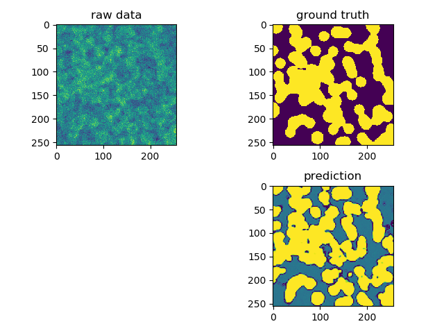
- 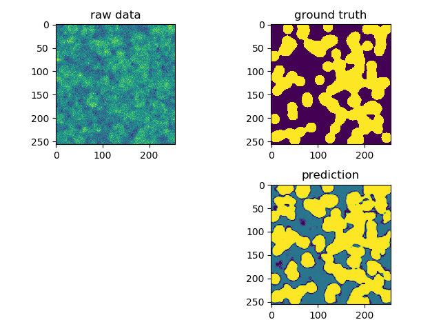
- 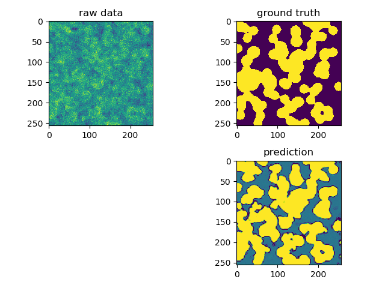

- 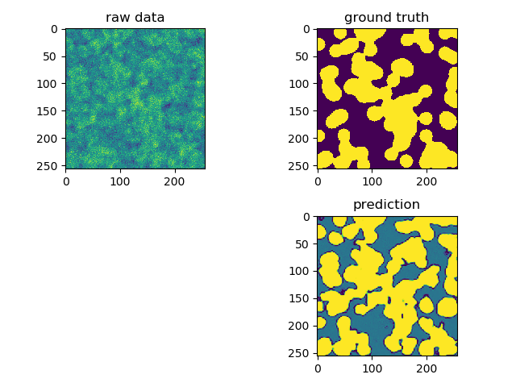
- 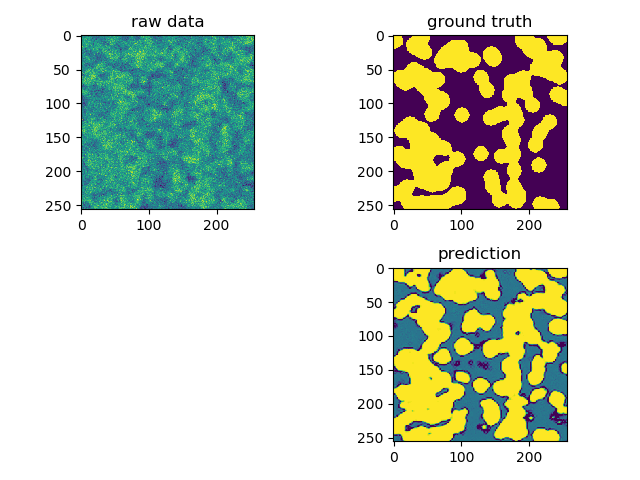
- 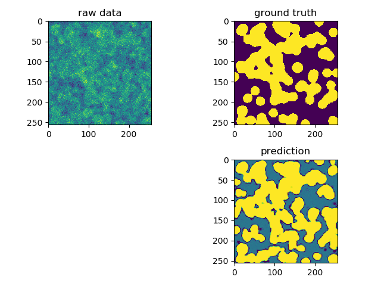
- 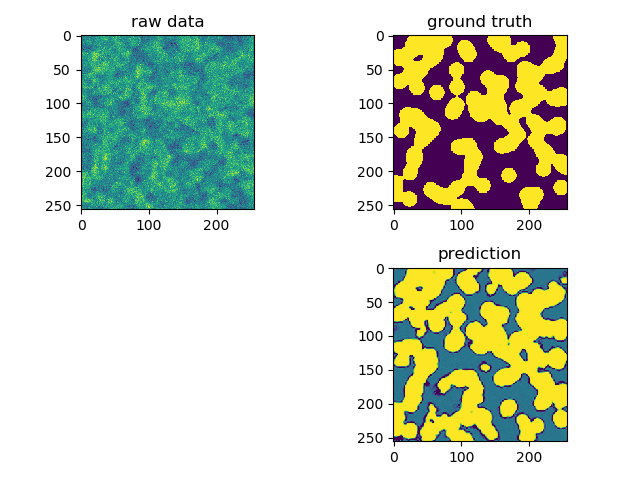
Custom UNet¶
Often one needs to have a UNet with custom layers.
Here we show how to implement such a customized UNet.
To this end we derive from UNetBase.
For the sake of this example we will create
a rather exotic UNet which uses different types
of convolutions/non-linearities in the different branches
of the unet
from inferno.extensions.layers import UNetBase
from inferno.extensions.layers import ConvSELU2D, ConvReLU2D, ConvELU2D, ConvSigmoid2D,Conv2D
class MySimple2DUnet(UNetBase):
def __init__(self, in_channels, out_channels, depth=3, **kwargs):
super(MySimple2DUnet, self).__init__(in_channels=in_channels, out_channels=out_channels,
dim=2, depth=depth, **kwargs)
def conv_op_factory(self, in_channels, out_channels, part, index):
if part == 'down':
return torch.nn.Sequential(
ConvELU2D(in_channels=in_channels, out_channels=out_channels, kernel_size=3),
ConvELU2D(in_channels=out_channels, out_channels=out_channels, kernel_size=3)
), False
elif part == 'bottom':
return torch.nn.Sequential(
ConvReLU2D(in_channels=in_channels, out_channels=out_channels, kernel_size=3),
ConvReLU2D(in_channels=out_channels, out_channels=out_channels, kernel_size=3),
), False
elif part == 'up':
# are we in the very last block?
if index + 1 == self.depth:
return torch.nn.Sequential(
ConvELU2D(in_channels=in_channels, out_channels=out_channels, kernel_size=3),
Conv2D(in_channels=out_channels, out_channels=out_channels, kernel_size=3)
), False
else:
return torch.nn.Sequential(
ConvELU2D(in_channels=in_channels, out_channels=out_channels, kernel_size=3),
ConvReLU2D(in_channels=out_channels, out_channels=out_channels, kernel_size=3)
), False
else:
raise RuntimeError("something is wrong")
# this function CAN be implemented, if not, MaxPooling is used by default
def downsample_op_factory(self, index):
return torch.nn.MaxPool2d(kernel_size=2, stride=2)
# this function CAN be implemented, if not, Upsampling is used by default
def upsample_op_factory(self, index):
return torch.nn.Upsample(mode='bilinear', align_corners=False,scale_factor=2)
model_b = torch.nn.Sequential(
ConvReLU2D(in_channels=image_channels, out_channels=5, kernel_size=3),
MySimple2DUnet(in_channels=5, out_channels=pred_channels) ,
RemoveSingletonDimension(dim=1)
)
do the training (with the same functions as before)
trainer = train_model(model=model_b, loaders=[train_loader, validate_loader], save_dir='model_b', lr=0.001)
Out:
[+][2018-08-15 16:20:49.968379] [PROGRESS] Training iteration 0 (batch 0 of epoch 0).
[+][2018-08-15 16:20:50.034558] [PROGRESS] Training iteration 1 (batch 1 of epoch 0).
[+][2018-08-15 16:20:50.059021] [PROGRESS] Training iteration 2 (batch 2 of epoch 0).
[+][2018-08-15 16:20:50.081431] [PROGRESS] Training iteration 3 (batch 3 of epoch 0).
[+][2018-08-15 16:20:50.101687] [PROGRESS] Training iteration 4 (batch 4 of epoch 0).
[+][2018-08-15 16:20:50.170383] [PROGRESS] Training iteration 5 (batch 1 of epoch 1).
[+][2018-08-15 16:20:50.192796] [PROGRESS] Training iteration 6 (batch 2 of epoch 1).
[+][2018-08-15 16:20:50.212532] [PROGRESS] Training iteration 7 (batch 3 of epoch 1).
[+][2018-08-15 16:20:50.233634] [PROGRESS] Training iteration 8 (batch 4 of epoch 1).
[+][2018-08-15 16:20:50.294644] [PROGRESS] Training iteration 9 (batch 1 of epoch 2).
[+][2018-08-15 16:20:50.315931] [PROGRESS] Training iteration 10 (batch 2 of epoch 2).
[+][2018-08-15 16:20:50.339907] [PROGRESS] Training iteration 11 (batch 3 of epoch 2).
[+][2018-08-15 16:20:50.369116] [PROGRESS] Training iteration 12 (batch 4 of epoch 2).
[+][2018-08-15 16:20:50.434182] [PROGRESS] Training iteration 13 (batch 1 of epoch 3).
[+][2018-08-15 16:20:50.459577] [PROGRESS] Training iteration 14 (batch 2 of epoch 3).
[+][2018-08-15 16:20:50.482720] [PROGRESS] Training iteration 15 (batch 3 of epoch 3).
[+][2018-08-15 16:20:50.508764] [PROGRESS] Training iteration 16 (batch 4 of epoch 3).
[+][2018-08-15 16:20:50.572524] [PROGRESS] Training iteration 17 (batch 1 of epoch 4).
[+][2018-08-15 16:20:50.593954] [PROGRESS] Training iteration 18 (batch 2 of epoch 4).
[+][2018-08-15 16:20:50.616249] [PROGRESS] Training iteration 19 (batch 3 of epoch 4).
[+][2018-08-15 16:20:50.639736] [PROGRESS] Training iteration 20 (batch 4 of epoch 4).
[+][2018-08-15 16:20:50.703206] [PROGRESS] Training iteration 21 (batch 1 of epoch 5).
[+][2018-08-15 16:20:50.722341] [PROGRESS] Training iteration 22 (batch 2 of epoch 5).
[+][2018-08-15 16:20:50.745861] [PROGRESS] Training iteration 23 (batch 3 of epoch 5).
[+][2018-08-15 16:20:50.769990] [PROGRESS] Training iteration 24 (batch 4 of epoch 5).
[+][2018-08-15 16:20:50.832153] [PROGRESS] Training iteration 25 (batch 1 of epoch 6).
[+][2018-08-15 16:20:50.853527] [PROGRESS] Training iteration 26 (batch 2 of epoch 6).
[+][2018-08-15 16:20:50.876346] [PROGRESS] Training iteration 27 (batch 3 of epoch 6).
[+][2018-08-15 16:20:50.899524] [PROGRESS] Training iteration 28 (batch 4 of epoch 6).
[+][2018-08-15 16:20:50.959807] [PROGRESS] Training iteration 29 (batch 1 of epoch 7).
[+][2018-08-15 16:20:50.979861] [PROGRESS] Training iteration 30 (batch 2 of epoch 7).
[+][2018-08-15 16:20:51.000656] [PROGRESS] Training iteration 31 (batch 3 of epoch 7).
[+][2018-08-15 16:20:51.022400] [PROGRESS] Training iteration 32 (batch 4 of epoch 7).
[+][2018-08-15 16:20:51.084468] [PROGRESS] Training iteration 33 (batch 1 of epoch 8).
[+][2018-08-15 16:20:51.106066] [PROGRESS] Training iteration 34 (batch 2 of epoch 8).
[+][2018-08-15 16:20:51.125886] [PROGRESS] Training iteration 35 (batch 3 of epoch 8).
[+][2018-08-15 16:20:51.147783] [PROGRESS] Training iteration 36 (batch 4 of epoch 8).
[+][2018-08-15 16:20:51.216719] [PROGRESS] Training iteration 37 (batch 1 of epoch 9).
[+][2018-08-15 16:20:51.239534] [PROGRESS] Training iteration 38 (batch 2 of epoch 9).
[+][2018-08-15 16:20:51.261890] [PROGRESS] Training iteration 39 (batch 3 of epoch 9).
[+][2018-08-15 16:20:51.285273] [PROGRESS] Training iteration 40 (batch 4 of epoch 9).
[+][2018-08-15 16:20:51.355959] [PROGRESS] Training iteration 41 (batch 1 of epoch 10).
[+][2018-08-15 16:20:51.377582] [PROGRESS] Training iteration 42 (batch 2 of epoch 10).
[+][2018-08-15 16:20:51.403237] [PROGRESS] Training iteration 43 (batch 3 of epoch 10).
[+][2018-08-15 16:20:51.427984] [PROGRESS] Training iteration 44 (batch 4 of epoch 10).
[+][2018-08-15 16:20:51.489835] [PROGRESS] Training iteration 45 (batch 1 of epoch 11).
[+][2018-08-15 16:20:51.512234] [PROGRESS] Training iteration 46 (batch 2 of epoch 11).
[+][2018-08-15 16:20:51.536260] [PROGRESS] Training iteration 47 (batch 3 of epoch 11).
[+][2018-08-15 16:20:51.560487] [PROGRESS] Training iteration 48 (batch 4 of epoch 11).
[+][2018-08-15 16:20:51.621565] [PROGRESS] Training iteration 49 (batch 1 of epoch 12).
[+][2018-08-15 16:20:51.643795] [PROGRESS] Training iteration 50 (batch 2 of epoch 12).
[+][2018-08-15 16:20:51.668061] [PROGRESS] Training iteration 51 (batch 3 of epoch 12).
[+][2018-08-15 16:20:51.693036] [PROGRESS] Training iteration 52 (batch 4 of epoch 12).
[+][2018-08-15 16:20:51.759140] [PROGRESS] Training iteration 53 (batch 1 of epoch 13).
[+][2018-08-15 16:20:51.780344] [PROGRESS] Training iteration 54 (batch 2 of epoch 13).
[+][2018-08-15 16:20:51.803883] [PROGRESS] Training iteration 55 (batch 3 of epoch 13).
[+][2018-08-15 16:20:51.827087] [PROGRESS] Training iteration 56 (batch 4 of epoch 13).
[+][2018-08-15 16:20:51.888328] [PROGRESS] Training iteration 57 (batch 1 of epoch 14).
[+][2018-08-15 16:20:51.909006] [PROGRESS] Training iteration 58 (batch 2 of epoch 14).
[+][2018-08-15 16:20:51.930568] [PROGRESS] Training iteration 59 (batch 3 of epoch 14).
[+][2018-08-15 16:20:51.953046] [PROGRESS] Training iteration 60 (batch 4 of epoch 14).
[+][2018-08-15 16:20:52.013922] [PROGRESS] Training iteration 61 (batch 1 of epoch 15).
[+][2018-08-15 16:20:52.034167] [PROGRESS] Training iteration 62 (batch 2 of epoch 15).
[+][2018-08-15 16:20:52.055069] [PROGRESS] Training iteration 63 (batch 3 of epoch 15).
[+][2018-08-15 16:20:52.076244] [PROGRESS] Training iteration 64 (batch 4 of epoch 15).
[+][2018-08-15 16:20:52.137247] [PROGRESS] Training iteration 65 (batch 1 of epoch 16).
[+][2018-08-15 16:20:52.157628] [PROGRESS] Training iteration 66 (batch 2 of epoch 16).
[+][2018-08-15 16:20:52.178406] [PROGRESS] Training iteration 67 (batch 3 of epoch 16).
[+][2018-08-15 16:20:52.198935] [PROGRESS] Training iteration 68 (batch 4 of epoch 16).
[+][2018-08-15 16:20:52.260235] [PROGRESS] Training iteration 69 (batch 1 of epoch 17).
[+][2018-08-15 16:20:52.281013] [PROGRESS] Training iteration 70 (batch 2 of epoch 17).
[+][2018-08-15 16:20:52.301574] [PROGRESS] Training iteration 71 (batch 3 of epoch 17).
[+][2018-08-15 16:20:52.322253] [PROGRESS] Training iteration 72 (batch 4 of epoch 17).
[+][2018-08-15 16:20:52.383745] [PROGRESS] Training iteration 73 (batch 1 of epoch 18).
[+][2018-08-15 16:20:52.403719] [PROGRESS] Training iteration 74 (batch 2 of epoch 18).
[+][2018-08-15 16:20:52.425650] [PROGRESS] Training iteration 75 (batch 3 of epoch 18).
[+][2018-08-15 16:20:52.447070] [PROGRESS] Training iteration 76 (batch 4 of epoch 18).
[+][2018-08-15 16:20:52.509978] [PROGRESS] Training iteration 77 (batch 1 of epoch 19).
[+][2018-08-15 16:20:52.529731] [PROGRESS] Training iteration 78 (batch 2 of epoch 19).
[+][2018-08-15 16:20:52.549863] [PROGRESS] Training iteration 79 (batch 3 of epoch 19).
[+][2018-08-15 16:20:52.570338] [PROGRESS] Training iteration 80 (batch 4 of epoch 19).
[+][2018-08-15 16:20:52.633290] [PROGRESS] Training iteration 81 (batch 1 of epoch 20).
[+][2018-08-15 16:20:52.653292] [PROGRESS] Training iteration 82 (batch 2 of epoch 20).
[+][2018-08-15 16:20:52.673998] [PROGRESS] Training iteration 83 (batch 3 of epoch 20).
[+][2018-08-15 16:20:52.695269] [PROGRESS] Training iteration 84 (batch 4 of epoch 20).
[+][2018-08-15 16:20:52.758158] [PROGRESS] Training iteration 85 (batch 1 of epoch 21).
[+][2018-08-15 16:20:52.779350] [PROGRESS] Training iteration 86 (batch 2 of epoch 21).
[+][2018-08-15 16:20:52.799686] [PROGRESS] Training iteration 87 (batch 3 of epoch 21).
[+][2018-08-15 16:20:52.820556] [PROGRESS] Training iteration 88 (batch 4 of epoch 21).
[+][2018-08-15 16:20:52.881953] [PROGRESS] Training iteration 89 (batch 1 of epoch 22).
[+][2018-08-15 16:20:52.902030] [PROGRESS] Training iteration 90 (batch 2 of epoch 22).
[+][2018-08-15 16:20:52.923358] [PROGRESS] Training iteration 91 (batch 3 of epoch 22).
[+][2018-08-15 16:20:52.943473] [PROGRESS] Training iteration 92 (batch 4 of epoch 22).
[+][2018-08-15 16:20:53.005819] [PROGRESS] Training iteration 93 (batch 1 of epoch 23).
[+][2018-08-15 16:20:53.026188] [PROGRESS] Training iteration 94 (batch 2 of epoch 23).
[+][2018-08-15 16:20:53.047071] [PROGRESS] Training iteration 95 (batch 3 of epoch 23).
[+][2018-08-15 16:20:53.068610] [PROGRESS] Training iteration 96 (batch 4 of epoch 23).
[+][2018-08-15 16:20:53.131327] [PROGRESS] Training iteration 97 (batch 1 of epoch 24).
[+][2018-08-15 16:20:53.153242] [PROGRESS] Training iteration 98 (batch 2 of epoch 24).
[+][2018-08-15 16:20:53.172414] [PROGRESS] Training iteration 99 (batch 3 of epoch 24).
[+][2018-08-15 16:20:53.193925] [PROGRESS] Training iteration 100 (batch 4 of epoch 24).
[+][2018-08-15 16:20:53.256167] [PROGRESS] Training iteration 101 (batch 1 of epoch 25).
[+][2018-08-15 16:20:53.275793] [PROGRESS] Training iteration 102 (batch 2 of epoch 25).
[+][2018-08-15 16:20:53.297487] [PROGRESS] Training iteration 103 (batch 3 of epoch 25).
[+][2018-08-15 16:20:53.319014] [PROGRESS] Training iteration 104 (batch 4 of epoch 25).
[+][2018-08-15 16:20:53.382768] [PROGRESS] Training iteration 105 (batch 1 of epoch 26).
[+][2018-08-15 16:20:53.402584] [PROGRESS] Training iteration 106 (batch 2 of epoch 26).
[+][2018-08-15 16:20:53.423494] [PROGRESS] Training iteration 107 (batch 3 of epoch 26).
[+][2018-08-15 16:20:53.445291] [PROGRESS] Training iteration 108 (batch 4 of epoch 26).
[+][2018-08-15 16:20:53.508569] [PROGRESS] Training iteration 109 (batch 1 of epoch 27).
[+][2018-08-15 16:20:53.528828] [PROGRESS] Training iteration 110 (batch 2 of epoch 27).
[+][2018-08-15 16:20:53.551409] [PROGRESS] Training iteration 111 (batch 3 of epoch 27).
[+][2018-08-15 16:20:53.574021] [PROGRESS] Training iteration 112 (batch 4 of epoch 27).
[+][2018-08-15 16:20:53.636009] [PROGRESS] Training iteration 113 (batch 1 of epoch 28).
[+][2018-08-15 16:20:53.656367] [PROGRESS] Training iteration 114 (batch 2 of epoch 28).
[+][2018-08-15 16:20:53.676311] [PROGRESS] Training iteration 115 (batch 3 of epoch 28).
[+][2018-08-15 16:20:53.697333] [PROGRESS] Training iteration 116 (batch 4 of epoch 28).
[+][2018-08-15 16:20:53.757681] [PROGRESS] Training iteration 117 (batch 1 of epoch 29).
[+][2018-08-15 16:20:53.778063] [PROGRESS] Training iteration 118 (batch 2 of epoch 29).
[+][2018-08-15 16:20:53.800711] [PROGRESS] Training iteration 119 (batch 3 of epoch 29).
[+][2018-08-15 16:20:53.821790] [PROGRESS] Training iteration 120 (batch 4 of epoch 29).
[+][2018-08-15 16:20:53.882985] [PROGRESS] Training iteration 121 (batch 1 of epoch 30).
[+][2018-08-15 16:20:53.903136] [PROGRESS] Training iteration 122 (batch 2 of epoch 30).
[+][2018-08-15 16:20:53.923683] [PROGRESS] Training iteration 123 (batch 3 of epoch 30).
[+][2018-08-15 16:20:53.944198] [PROGRESS] Training iteration 124 (batch 4 of epoch 30).
[+][2018-08-15 16:20:54.006387] [PROGRESS] Training iteration 125 (batch 1 of epoch 31).
[+][2018-08-15 16:20:54.025708] [PROGRESS] Training iteration 126 (batch 2 of epoch 31).
[+][2018-08-15 16:20:54.047926] [PROGRESS] Training iteration 127 (batch 3 of epoch 31).
[+][2018-08-15 16:20:54.071962] [PROGRESS] Training iteration 128 (batch 4 of epoch 31).
[+][2018-08-15 16:20:54.135585] [PROGRESS] Training iteration 129 (batch 1 of epoch 32).
[+][2018-08-15 16:20:54.158460] [PROGRESS] Training iteration 130 (batch 2 of epoch 32).
[+][2018-08-15 16:20:54.181530] [PROGRESS] Training iteration 131 (batch 3 of epoch 32).
[+][2018-08-15 16:20:54.205108] [PROGRESS] Training iteration 132 (batch 4 of epoch 32).
[+][2018-08-15 16:20:54.269743] [PROGRESS] Training iteration 133 (batch 1 of epoch 33).
[+][2018-08-15 16:20:54.294106] [PROGRESS] Training iteration 134 (batch 2 of epoch 33).
[+][2018-08-15 16:20:54.315922] [PROGRESS] Training iteration 135 (batch 3 of epoch 33).
[+][2018-08-15 16:20:54.338768] [PROGRESS] Training iteration 136 (batch 4 of epoch 33).
[+][2018-08-15 16:20:54.399556] [PROGRESS] Training iteration 137 (batch 1 of epoch 34).
[+][2018-08-15 16:20:54.419308] [PROGRESS] Training iteration 138 (batch 2 of epoch 34).
[+][2018-08-15 16:20:54.440190] [PROGRESS] Training iteration 139 (batch 3 of epoch 34).
[+][2018-08-15 16:20:54.461310] [PROGRESS] Training iteration 140 (batch 4 of epoch 34).
[+][2018-08-15 16:20:54.521765] [PROGRESS] Training iteration 141 (batch 1 of epoch 35).
[+][2018-08-15 16:20:54.543519] [PROGRESS] Training iteration 142 (batch 2 of epoch 35).
[+][2018-08-15 16:20:54.566836] [PROGRESS] Training iteration 143 (batch 3 of epoch 35).
[+][2018-08-15 16:20:54.590461] [PROGRESS] Training iteration 144 (batch 4 of epoch 35).
[+][2018-08-15 16:20:54.653862] [PROGRESS] Training iteration 145 (batch 1 of epoch 36).
[+][2018-08-15 16:20:54.677909] [PROGRESS] Training iteration 146 (batch 2 of epoch 36).
[+][2018-08-15 16:20:54.697586] [PROGRESS] Training iteration 147 (batch 3 of epoch 36).
[+][2018-08-15 16:20:54.718781] [PROGRESS] Training iteration 148 (batch 4 of epoch 36).
[+][2018-08-15 16:20:54.783295] [PROGRESS] Training iteration 149 (batch 1 of epoch 37).
[+][2018-08-15 16:20:54.805059] [PROGRESS] Training iteration 150 (batch 2 of epoch 37).
[+][2018-08-15 16:20:54.826556] [PROGRESS] Training iteration 151 (batch 3 of epoch 37).
[+][2018-08-15 16:20:54.845017] [PROGRESS] Training iteration 152 (batch 4 of epoch 37).
[+][2018-08-15 16:20:54.907623] [PROGRESS] Training iteration 153 (batch 1 of epoch 38).
[+][2018-08-15 16:20:54.927538] [PROGRESS] Training iteration 154 (batch 2 of epoch 38).
[+][2018-08-15 16:20:54.947923] [PROGRESS] Training iteration 155 (batch 3 of epoch 38).
[+][2018-08-15 16:20:54.969114] [PROGRESS] Training iteration 156 (batch 4 of epoch 38).
[+][2018-08-15 16:20:55.031749] [PROGRESS] Training iteration 157 (batch 1 of epoch 39).
[+][2018-08-15 16:20:55.052049] [PROGRESS] Training iteration 158 (batch 2 of epoch 39).
[+][2018-08-15 16:20:55.072853] [PROGRESS] Training iteration 159 (batch 3 of epoch 39).
[+][2018-08-15 16:20:55.093511] [PROGRESS] Training iteration 160 (batch 4 of epoch 39).
[+][2018-08-15 16:20:55.162498] [PROGRESS] Training iteration 161 (batch 1 of epoch 40).
[+][2018-08-15 16:20:55.183075] [PROGRESS] Training iteration 162 (batch 2 of epoch 40).
[+][2018-08-15 16:20:55.205742] [PROGRESS] Training iteration 163 (batch 3 of epoch 40).
[+][2018-08-15 16:20:55.224172] [PROGRESS] Training iteration 164 (batch 4 of epoch 40).
[+][2018-08-15 16:20:55.284633] [PROGRESS] Training iteration 165 (batch 1 of epoch 41).
[+][2018-08-15 16:20:55.304236] [PROGRESS] Training iteration 166 (batch 2 of epoch 41).
[+][2018-08-15 16:20:55.325375] [PROGRESS] Training iteration 167 (batch 3 of epoch 41).
[+][2018-08-15 16:20:55.346967] [PROGRESS] Training iteration 168 (batch 4 of epoch 41).
[+][2018-08-15 16:20:55.411860] [PROGRESS] Training iteration 169 (batch 1 of epoch 42).
[+][2018-08-15 16:20:55.437335] [PROGRESS] Training iteration 170 (batch 2 of epoch 42).
[+][2018-08-15 16:20:55.458405] [PROGRESS] Training iteration 171 (batch 3 of epoch 42).
[+][2018-08-15 16:20:55.480813] [PROGRESS] Training iteration 172 (batch 4 of epoch 42).
[+][2018-08-15 16:20:55.542130] [PROGRESS] Training iteration 173 (batch 1 of epoch 43).
[+][2018-08-15 16:20:55.562824] [PROGRESS] Training iteration 174 (batch 2 of epoch 43).
[+][2018-08-15 16:20:55.584333] [PROGRESS] Training iteration 175 (batch 3 of epoch 43).
[+][2018-08-15 16:20:55.604838] [PROGRESS] Training iteration 176 (batch 4 of epoch 43).
[+][2018-08-15 16:20:55.665459] [PROGRESS] Training iteration 177 (batch 1 of epoch 44).
[+][2018-08-15 16:20:55.685619] [PROGRESS] Training iteration 178 (batch 2 of epoch 44).
[+][2018-08-15 16:20:55.707790] [PROGRESS] Training iteration 179 (batch 3 of epoch 44).
[+][2018-08-15 16:20:55.730979] [PROGRESS] Training iteration 180 (batch 4 of epoch 44).
[+][2018-08-15 16:20:55.792524] [PROGRESS] Training iteration 181 (batch 1 of epoch 45).
[+][2018-08-15 16:20:55.813820] [PROGRESS] Training iteration 182 (batch 2 of epoch 45).
[+][2018-08-15 16:20:55.836659] [PROGRESS] Training iteration 183 (batch 3 of epoch 45).
[+][2018-08-15 16:20:55.859183] [PROGRESS] Training iteration 184 (batch 4 of epoch 45).
[+][2018-08-15 16:20:55.920411] [PROGRESS] Training iteration 185 (batch 1 of epoch 46).
[+][2018-08-15 16:20:55.941399] [PROGRESS] Training iteration 186 (batch 2 of epoch 46).
[+][2018-08-15 16:20:55.964075] [PROGRESS] Training iteration 187 (batch 3 of epoch 46).
[+][2018-08-15 16:20:55.986209] [PROGRESS] Training iteration 188 (batch 4 of epoch 46).
[+][2018-08-15 16:20:56.053492] [PROGRESS] Training iteration 189 (batch 1 of epoch 47).
[+][2018-08-15 16:20:56.074644] [PROGRESS] Training iteration 190 (batch 2 of epoch 47).
[+][2018-08-15 16:20:56.098846] [PROGRESS] Training iteration 191 (batch 3 of epoch 47).
[+][2018-08-15 16:20:56.121805] [PROGRESS] Training iteration 192 (batch 4 of epoch 47).
[+][2018-08-15 16:20:56.183576] [PROGRESS] Training iteration 193 (batch 1 of epoch 48).
[+][2018-08-15 16:20:56.204840] [PROGRESS] Training iteration 194 (batch 2 of epoch 48).
[+][2018-08-15 16:20:56.228108] [PROGRESS] Training iteration 195 (batch 3 of epoch 48).
[+][2018-08-15 16:20:56.251243] [PROGRESS] Training iteration 196 (batch 4 of epoch 48).
[+][2018-08-15 16:20:56.313397] [PROGRESS] Training iteration 197 (batch 1 of epoch 49).
[+][2018-08-15 16:20:56.334193] [PROGRESS] Training iteration 198 (batch 2 of epoch 49).
[+][2018-08-15 16:20:56.355542] [PROGRESS] Training iteration 199 (batch 3 of epoch 49).
[+][2018-08-15 16:20:56.377470] [PROGRESS] Training iteration 200 (batch 4 of epoch 49).
[+][2018-08-15 16:20:56.437587] [PROGRESS] Training iteration 201 (batch 1 of epoch 50).
[+][2018-08-15 16:20:56.458546] [PROGRESS] Training iteration 202 (batch 2 of epoch 50).
[+][2018-08-15 16:20:56.479786] [PROGRESS] Training iteration 203 (batch 3 of epoch 50).
[+][2018-08-15 16:20:56.501596] [PROGRESS] Training iteration 204 (batch 4 of epoch 50).
[+][2018-08-15 16:20:56.567954] [PROGRESS] Training iteration 205 (batch 1 of epoch 51).
[+][2018-08-15 16:20:56.587426] [PROGRESS] Training iteration 206 (batch 2 of epoch 51).
[+][2018-08-15 16:20:56.608514] [PROGRESS] Training iteration 207 (batch 3 of epoch 51).
[+][2018-08-15 16:20:56.629449] [PROGRESS] Training iteration 208 (batch 4 of epoch 51).
[+][2018-08-15 16:20:56.689723] [PROGRESS] Training iteration 209 (batch 1 of epoch 52).
[+][2018-08-15 16:20:56.710176] [PROGRESS] Training iteration 210 (batch 2 of epoch 52).
[+][2018-08-15 16:20:56.732175] [PROGRESS] Training iteration 211 (batch 3 of epoch 52).
[+][2018-08-15 16:20:56.755050] [PROGRESS] Training iteration 212 (batch 4 of epoch 52).
[+][2018-08-15 16:20:56.816782] [PROGRESS] Training iteration 213 (batch 1 of epoch 53).
[+][2018-08-15 16:20:56.836810] [PROGRESS] Training iteration 214 (batch 2 of epoch 53).
[+][2018-08-15 16:20:56.860122] [PROGRESS] Training iteration 215 (batch 3 of epoch 53).
[+][2018-08-15 16:20:56.881437] [PROGRESS] Training iteration 216 (batch 4 of epoch 53).
[+][2018-08-15 16:20:56.950169] [PROGRESS] Training iteration 217 (batch 1 of epoch 54).
[+][2018-08-15 16:20:56.972057] [PROGRESS] Training iteration 218 (batch 2 of epoch 54).
[+][2018-08-15 16:20:56.993448] [PROGRESS] Training iteration 219 (batch 3 of epoch 54).
[+][2018-08-15 16:20:57.015772] [PROGRESS] Training iteration 220 (batch 4 of epoch 54).
[+][2018-08-15 16:20:57.078033] [PROGRESS] Training iteration 221 (batch 1 of epoch 55).
[+][2018-08-15 16:20:57.099395] [PROGRESS] Training iteration 222 (batch 2 of epoch 55).
[+][2018-08-15 16:20:57.124403] [PROGRESS] Training iteration 223 (batch 3 of epoch 55).
[+][2018-08-15 16:20:57.147258] [PROGRESS] Training iteration 224 (batch 4 of epoch 55).
[+][2018-08-15 16:20:57.209529] [PROGRESS] Training iteration 225 (batch 1 of epoch 56).
[+][2018-08-15 16:20:57.229484] [PROGRESS] Training iteration 226 (batch 2 of epoch 56).
[+][2018-08-15 16:20:57.249489] [PROGRESS] Training iteration 227 (batch 3 of epoch 56).
[+][2018-08-15 16:20:57.270724] [PROGRESS] Training iteration 228 (batch 4 of epoch 56).
[+][2018-08-15 16:20:57.330873] [PROGRESS] Training iteration 229 (batch 1 of epoch 57).
[+][2018-08-15 16:20:57.350666] [PROGRESS] Training iteration 230 (batch 2 of epoch 57).
[+][2018-08-15 16:20:57.372097] [PROGRESS] Training iteration 231 (batch 3 of epoch 57).
[+][2018-08-15 16:20:57.393144] [PROGRESS] Training iteration 232 (batch 4 of epoch 57).
[+][2018-08-15 16:20:57.453501] [PROGRESS] Training iteration 233 (batch 1 of epoch 58).
[+][2018-08-15 16:20:57.473641] [PROGRESS] Training iteration 234 (batch 2 of epoch 58).
[+][2018-08-15 16:20:57.494846] [PROGRESS] Training iteration 235 (batch 3 of epoch 58).
[+][2018-08-15 16:20:57.515314] [PROGRESS] Training iteration 236 (batch 4 of epoch 58).
[+][2018-08-15 16:20:57.576118] [PROGRESS] Training iteration 237 (batch 1 of epoch 59).
[+][2018-08-15 16:20:57.596035] [PROGRESS] Training iteration 238 (batch 2 of epoch 59).
[+][2018-08-15 16:20:57.617113] [PROGRESS] Training iteration 239 (batch 3 of epoch 59).
[+][2018-08-15 16:20:57.639001] [PROGRESS] Training iteration 240 (batch 4 of epoch 59).
[+][2018-08-15 16:20:57.701732] [PROGRESS] Training iteration 241 (batch 1 of epoch 60).
[+][2018-08-15 16:20:57.723168] [PROGRESS] Training iteration 242 (batch 2 of epoch 60).
[+][2018-08-15 16:20:57.744521] [PROGRESS] Training iteration 243 (batch 3 of epoch 60).
[+][2018-08-15 16:20:57.765773] [PROGRESS] Training iteration 244 (batch 4 of epoch 60).
[+][2018-08-15 16:20:57.831103] [PROGRESS] Training iteration 245 (batch 1 of epoch 61).
[+][2018-08-15 16:20:57.851448] [PROGRESS] Training iteration 246 (batch 2 of epoch 61).
[+][2018-08-15 16:20:57.871966] [PROGRESS] Training iteration 247 (batch 3 of epoch 61).
[+][2018-08-15 16:20:57.891153] [PROGRESS] Training iteration 248 (batch 4 of epoch 61).
[+][2018-08-15 16:20:57.953536] [PROGRESS] Training iteration 249 (batch 1 of epoch 62).
[+][2018-08-15 16:20:57.973348] [PROGRESS] Training iteration 250 (batch 2 of epoch 62).
[+][2018-08-15 16:20:57.994123] [PROGRESS] Training iteration 251 (batch 3 of epoch 62).
[+][2018-08-15 16:20:58.015141] [PROGRESS] Training iteration 252 (batch 4 of epoch 62).
[+][2018-08-15 16:20:58.075293] [PROGRESS] Training iteration 253 (batch 1 of epoch 63).
[+][2018-08-15 16:20:58.095397] [PROGRESS] Training iteration 254 (batch 2 of epoch 63).
[+][2018-08-15 16:20:58.116567] [PROGRESS] Training iteration 255 (batch 3 of epoch 63).
[+][2018-08-15 16:20:58.138474] [PROGRESS] Training iteration 256 (batch 4 of epoch 63).
[+][2018-08-15 16:20:58.200317] [PROGRESS] Training iteration 257 (batch 1 of epoch 64).
[+][2018-08-15 16:20:58.221051] [PROGRESS] Training iteration 258 (batch 2 of epoch 64).
[+][2018-08-15 16:20:58.244345] [PROGRESS] Training iteration 259 (batch 3 of epoch 64).
[+][2018-08-15 16:20:58.265655] [PROGRESS] Training iteration 260 (batch 4 of epoch 64).
[+][2018-08-15 16:20:58.327194] [PROGRESS] Training iteration 261 (batch 1 of epoch 65).
[+][2018-08-15 16:20:58.348064] [PROGRESS] Training iteration 262 (batch 2 of epoch 65).
[+][2018-08-15 16:20:58.371116] [PROGRESS] Training iteration 263 (batch 3 of epoch 65).
[+][2018-08-15 16:20:58.394816] [PROGRESS] Training iteration 264 (batch 4 of epoch 65).
[+][2018-08-15 16:20:58.455447] [PROGRESS] Training iteration 265 (batch 1 of epoch 66).
[+][2018-08-15 16:20:58.475373] [PROGRESS] Training iteration 266 (batch 2 of epoch 66).
[+][2018-08-15 16:20:58.495596] [PROGRESS] Training iteration 267 (batch 3 of epoch 66).
[+][2018-08-15 16:20:58.516581] [PROGRESS] Training iteration 268 (batch 4 of epoch 66).
[+][2018-08-15 16:20:58.578533] [PROGRESS] Training iteration 269 (batch 1 of epoch 67).
[+][2018-08-15 16:20:58.598981] [PROGRESS] Training iteration 270 (batch 2 of epoch 67).
[+][2018-08-15 16:20:58.624627] [PROGRESS] Training iteration 271 (batch 3 of epoch 67).
[+][2018-08-15 16:20:58.651144] [PROGRESS] Training iteration 272 (batch 4 of epoch 67).
[+][2018-08-15 16:20:58.720499] [PROGRESS] Training iteration 273 (batch 1 of epoch 68).
[+][2018-08-15 16:20:58.741819] [PROGRESS] Training iteration 274 (batch 2 of epoch 68).
[+][2018-08-15 16:20:58.765443] [PROGRESS] Training iteration 275 (batch 3 of epoch 68).
[+][2018-08-15 16:20:58.790773] [PROGRESS] Training iteration 276 (batch 4 of epoch 68).
[+][2018-08-15 16:20:58.859789] [PROGRESS] Training iteration 277 (batch 1 of epoch 69).
[+][2018-08-15 16:20:58.880525] [PROGRESS] Training iteration 278 (batch 2 of epoch 69).
[+][2018-08-15 16:20:58.904991] [PROGRESS] Training iteration 279 (batch 3 of epoch 69).
[+][2018-08-15 16:20:58.931935] [PROGRESS] Training iteration 280 (batch 4 of epoch 69).
[+][2018-08-15 16:20:59.004178] [PROGRESS] Training iteration 281 (batch 1 of epoch 70).
[+][2018-08-15 16:20:59.025564] [PROGRESS] Training iteration 282 (batch 2 of epoch 70).
[+][2018-08-15 16:20:59.046418] [PROGRESS] Training iteration 283 (batch 3 of epoch 70).
[+][2018-08-15 16:20:59.070598] [PROGRESS] Training iteration 284 (batch 4 of epoch 70).
[+][2018-08-15 16:20:59.133788] [PROGRESS] Training iteration 285 (batch 1 of epoch 71).
[+][2018-08-15 16:20:59.158599] [PROGRESS] Training iteration 286 (batch 2 of epoch 71).
[+][2018-08-15 16:20:59.180152] [PROGRESS] Training iteration 287 (batch 3 of epoch 71).
[+][2018-08-15 16:20:59.200530] [PROGRESS] Training iteration 288 (batch 4 of epoch 71).
[+][2018-08-15 16:20:59.262029] [PROGRESS] Training iteration 289 (batch 1 of epoch 72).
[+][2018-08-15 16:20:59.284028] [PROGRESS] Training iteration 290 (batch 2 of epoch 72).
[+][2018-08-15 16:20:59.307554] [PROGRESS] Training iteration 291 (batch 3 of epoch 72).
[+][2018-08-15 16:20:59.331666] [PROGRESS] Training iteration 292 (batch 4 of epoch 72).
[+][2018-08-15 16:20:59.399056] [PROGRESS] Training iteration 293 (batch 1 of epoch 73).
[+][2018-08-15 16:20:59.419916] [PROGRESS] Training iteration 294 (batch 2 of epoch 73).
[+][2018-08-15 16:20:59.440644] [PROGRESS] Training iteration 295 (batch 3 of epoch 73).
[+][2018-08-15 16:20:59.460172] [PROGRESS] Training iteration 296 (batch 4 of epoch 73).
[+][2018-08-15 16:20:59.523434] [PROGRESS] Training iteration 297 (batch 1 of epoch 74).
[+][2018-08-15 16:20:59.542924] [PROGRESS] Training iteration 298 (batch 2 of epoch 74).
[+][2018-08-15 16:20:59.564556] [PROGRESS] Training iteration 299 (batch 3 of epoch 74).
[+][2018-08-15 16:20:59.585571] [PROGRESS] Training iteration 300 (batch 4 of epoch 74).
[+][2018-08-15 16:20:59.651351] [PROGRESS] Training iteration 301 (batch 1 of epoch 75).
[+][2018-08-15 16:20:59.672430] [PROGRESS] Training iteration 302 (batch 2 of epoch 75).
[+][2018-08-15 16:20:59.695856] [PROGRESS] Training iteration 303 (batch 3 of epoch 75).
[+][2018-08-15 16:20:59.715885] [PROGRESS] Training iteration 304 (batch 4 of epoch 75).
[+][2018-08-15 16:20:59.779729] [PROGRESS] Training iteration 305 (batch 1 of epoch 76).
[+][2018-08-15 16:20:59.800515] [PROGRESS] Training iteration 306 (batch 2 of epoch 76).
[+][2018-08-15 16:20:59.823848] [PROGRESS] Training iteration 307 (batch 3 of epoch 76).
[+][2018-08-15 16:20:59.843805] [PROGRESS] Training iteration 308 (batch 4 of epoch 76).
[+][2018-08-15 16:20:59.906369] [PROGRESS] Training iteration 309 (batch 1 of epoch 77).
[+][2018-08-15 16:20:59.927258] [PROGRESS] Training iteration 310 (batch 2 of epoch 77).
[+][2018-08-15 16:20:59.947908] [PROGRESS] Training iteration 311 (batch 3 of epoch 77).
[+][2018-08-15 16:20:59.969102] [PROGRESS] Training iteration 312 (batch 4 of epoch 77).
[+][2018-08-15 16:21:00.038509] [PROGRESS] Training iteration 313 (batch 1 of epoch 78).
[+][2018-08-15 16:21:00.059440] [PROGRESS] Training iteration 314 (batch 2 of epoch 78).
[+][2018-08-15 16:21:00.082999] [PROGRESS] Training iteration 315 (batch 3 of epoch 78).
[+][2018-08-15 16:21:00.106030] [PROGRESS] Training iteration 316 (batch 4 of epoch 78).
[+][2018-08-15 16:21:00.166743] [PROGRESS] Training iteration 317 (batch 1 of epoch 79).
[+][2018-08-15 16:21:00.188742] [PROGRESS] Training iteration 318 (batch 2 of epoch 79).
[+][2018-08-15 16:21:00.212414] [PROGRESS] Training iteration 319 (batch 3 of epoch 79).
[+][2018-08-15 16:21:00.235240] [PROGRESS] Training iteration 320 (batch 4 of epoch 79).
[+][2018-08-15 16:21:00.295845] [PROGRESS] Training iteration 321 (batch 1 of epoch 80).
[+][2018-08-15 16:21:00.317935] [PROGRESS] Training iteration 322 (batch 2 of epoch 80).
[+][2018-08-15 16:21:00.340929] [PROGRESS] Training iteration 323 (batch 3 of epoch 80).
[+][2018-08-15 16:21:00.363782] [PROGRESS] Training iteration 324 (batch 4 of epoch 80).
[+][2018-08-15 16:21:00.427283] [PROGRESS] Training iteration 325 (batch 1 of epoch 81).
[+][2018-08-15 16:21:00.447322] [PROGRESS] Training iteration 326 (batch 2 of epoch 81).
[+][2018-08-15 16:21:00.468279] [PROGRESS] Training iteration 327 (batch 3 of epoch 81).
[+][2018-08-15 16:21:00.488983] [PROGRESS] Training iteration 328 (batch 4 of epoch 81).
[+][2018-08-15 16:21:00.550598] [PROGRESS] Training iteration 329 (batch 1 of epoch 82).
[+][2018-08-15 16:21:00.570647] [PROGRESS] Training iteration 330 (batch 2 of epoch 82).
[+][2018-08-15 16:21:00.591130] [PROGRESS] Training iteration 331 (batch 3 of epoch 82).
[+][2018-08-15 16:21:00.611542] [PROGRESS] Training iteration 332 (batch 4 of epoch 82).
[+][2018-08-15 16:21:00.672627] [PROGRESS] Training iteration 333 (batch 1 of epoch 83).
[+][2018-08-15 16:21:00.692369] [PROGRESS] Training iteration 334 (batch 2 of epoch 83).
[+][2018-08-15 16:21:00.712651] [PROGRESS] Training iteration 335 (batch 3 of epoch 83).
[+][2018-08-15 16:21:00.734332] [PROGRESS] Training iteration 336 (batch 4 of epoch 83).
[+][2018-08-15 16:21:00.795538] [PROGRESS] Training iteration 337 (batch 1 of epoch 84).
[+][2018-08-15 16:21:00.815841] [PROGRESS] Training iteration 338 (batch 2 of epoch 84).
[+][2018-08-15 16:21:00.836180] [PROGRESS] Training iteration 339 (batch 3 of epoch 84).
[+][2018-08-15 16:21:00.857329] [PROGRESS] Training iteration 340 (batch 4 of epoch 84).
[+][2018-08-15 16:21:00.918058] [PROGRESS] Training iteration 341 (batch 1 of epoch 85).
[+][2018-08-15 16:21:00.937781] [PROGRESS] Training iteration 342 (batch 2 of epoch 85).
[+][2018-08-15 16:21:00.958675] [PROGRESS] Training iteration 343 (batch 3 of epoch 85).
[+][2018-08-15 16:21:00.979087] [PROGRESS] Training iteration 344 (batch 4 of epoch 85).
[+][2018-08-15 16:21:01.040129] [PROGRESS] Training iteration 345 (batch 1 of epoch 86).
[+][2018-08-15 16:21:01.060074] [PROGRESS] Training iteration 346 (batch 2 of epoch 86).
[+][2018-08-15 16:21:01.081104] [PROGRESS] Training iteration 347 (batch 3 of epoch 86).
[+][2018-08-15 16:21:01.103075] [PROGRESS] Training iteration 348 (batch 4 of epoch 86).
[+][2018-08-15 16:21:01.169432] [PROGRESS] Training iteration 349 (batch 1 of epoch 87).
[+][2018-08-15 16:21:01.188745] [PROGRESS] Training iteration 350 (batch 2 of epoch 87).
[+][2018-08-15 16:21:01.208974] [PROGRESS] Training iteration 351 (batch 3 of epoch 87).
[+][2018-08-15 16:21:01.230149] [PROGRESS] Training iteration 352 (batch 4 of epoch 87).
[+][2018-08-15 16:21:01.291845] [PROGRESS] Training iteration 353 (batch 1 of epoch 88).
[+][2018-08-15 16:21:01.311570] [PROGRESS] Training iteration 354 (batch 2 of epoch 88).
[+][2018-08-15 16:21:01.332643] [PROGRESS] Training iteration 355 (batch 3 of epoch 88).
[+][2018-08-15 16:21:01.355892] [PROGRESS] Training iteration 356 (batch 4 of epoch 88).
[+][2018-08-15 16:21:01.416700] [PROGRESS] Training iteration 357 (batch 1 of epoch 89).
[+][2018-08-15 16:21:01.437103] [PROGRESS] Training iteration 358 (batch 2 of epoch 89).
[+][2018-08-15 16:21:01.458782] [PROGRESS] Training iteration 359 (batch 3 of epoch 89).
[+][2018-08-15 16:21:01.479497] [PROGRESS] Training iteration 360 (batch 4 of epoch 89).
[+][2018-08-15 16:21:01.540528] [PROGRESS] Training iteration 361 (batch 1 of epoch 90).
[+][2018-08-15 16:21:01.559900] [PROGRESS] Training iteration 362 (batch 2 of epoch 90).
[+][2018-08-15 16:21:01.581080] [PROGRESS] Training iteration 363 (batch 3 of epoch 90).
[+][2018-08-15 16:21:01.602037] [PROGRESS] Training iteration 364 (batch 4 of epoch 90).
[+][2018-08-15 16:21:01.663461] [PROGRESS] Training iteration 365 (batch 1 of epoch 91).
[+][2018-08-15 16:21:01.683094] [PROGRESS] Training iteration 366 (batch 2 of epoch 91).
[+][2018-08-15 16:21:01.703378] [PROGRESS] Training iteration 367 (batch 3 of epoch 91).
[+][2018-08-15 16:21:01.724247] [PROGRESS] Training iteration 368 (batch 4 of epoch 91).
[+][2018-08-15 16:21:01.784762] [PROGRESS] Training iteration 369 (batch 1 of epoch 92).
[+][2018-08-15 16:21:01.804561] [PROGRESS] Training iteration 370 (batch 2 of epoch 92).
[+][2018-08-15 16:21:01.824757] [PROGRESS] Training iteration 371 (batch 3 of epoch 92).
[+][2018-08-15 16:21:01.845680] [PROGRESS] Training iteration 372 (batch 4 of epoch 92).
[+][2018-08-15 16:21:01.905811] [PROGRESS] Training iteration 373 (batch 1 of epoch 93).
[+][2018-08-15 16:21:01.926074] [PROGRESS] Training iteration 374 (batch 2 of epoch 93).
[+][2018-08-15 16:21:01.947019] [PROGRESS] Training iteration 375 (batch 3 of epoch 93).
[+][2018-08-15 16:21:01.967021] [PROGRESS] Training iteration 376 (batch 4 of epoch 93).
[+][2018-08-15 16:21:02.028200] [PROGRESS] Training iteration 377 (batch 1 of epoch 94).
[+][2018-08-15 16:21:02.047724] [PROGRESS] Training iteration 378 (batch 2 of epoch 94).
[+][2018-08-15 16:21:02.068442] [PROGRESS] Training iteration 379 (batch 3 of epoch 94).
[+][2018-08-15 16:21:02.088618] [PROGRESS] Training iteration 380 (batch 4 of epoch 94).
[+][2018-08-15 16:21:02.149129] [PROGRESS] Training iteration 381 (batch 1 of epoch 95).
[+][2018-08-15 16:21:02.168995] [PROGRESS] Training iteration 382 (batch 2 of epoch 95).
[+][2018-08-15 16:21:02.190180] [PROGRESS] Training iteration 383 (batch 3 of epoch 95).
[+][2018-08-15 16:21:02.210728] [PROGRESS] Training iteration 384 (batch 4 of epoch 95).
[+][2018-08-15 16:21:02.272209] [PROGRESS] Training iteration 385 (batch 1 of epoch 96).
[+][2018-08-15 16:21:02.292809] [PROGRESS] Training iteration 386 (batch 2 of epoch 96).
[+][2018-08-15 16:21:02.314156] [PROGRESS] Training iteration 387 (batch 3 of epoch 96).
[+][2018-08-15 16:21:02.335834] [PROGRESS] Training iteration 388 (batch 4 of epoch 96).
[+][2018-08-15 16:21:02.396978] [PROGRESS] Training iteration 389 (batch 1 of epoch 97).
[+][2018-08-15 16:21:02.416860] [PROGRESS] Training iteration 390 (batch 2 of epoch 97).
[+][2018-08-15 16:21:02.437433] [PROGRESS] Training iteration 391 (batch 3 of epoch 97).
[+][2018-08-15 16:21:02.458174] [PROGRESS] Training iteration 392 (batch 4 of epoch 97).
[+][2018-08-15 16:21:02.519703] [PROGRESS] Training iteration 393 (batch 1 of epoch 98).
[+][2018-08-15 16:21:02.540137] [PROGRESS] Training iteration 394 (batch 2 of epoch 98).
[+][2018-08-15 16:21:02.560196] [PROGRESS] Training iteration 395 (batch 3 of epoch 98).
[+][2018-08-15 16:21:02.581444] [PROGRESS] Training iteration 396 (batch 4 of epoch 98).
[+][2018-08-15 16:21:02.642556] [PROGRESS] Training iteration 397 (batch 1 of epoch 99).
[+][2018-08-15 16:21:02.662351] [PROGRESS] Training iteration 398 (batch 2 of epoch 99).
[+][2018-08-15 16:21:02.682787] [PROGRESS] Training iteration 399 (batch 3 of epoch 99).
[+][2018-08-15 16:21:02.703202] [PROGRESS] Training iteration 400 (batch 4 of epoch 99).
[+][2018-08-15 16:21:02.764234] [PROGRESS] Training iteration 401 (batch 1 of epoch 100).
[+][2018-08-15 16:21:02.783889] [PROGRESS] Training iteration 402 (batch 2 of epoch 100).
[+][2018-08-15 16:21:02.805146] [PROGRESS] Training iteration 403 (batch 3 of epoch 100).
[+][2018-08-15 16:21:02.825795] [PROGRESS] Training iteration 404 (batch 4 of epoch 100).
[+][2018-08-15 16:21:02.886740] [PROGRESS] Training iteration 405 (batch 1 of epoch 101).
[+][2018-08-15 16:21:02.906854] [PROGRESS] Training iteration 406 (batch 2 of epoch 101).
[+][2018-08-15 16:21:02.927069] [PROGRESS] Training iteration 407 (batch 3 of epoch 101).
[+][2018-08-15 16:21:02.946585] [PROGRESS] Training iteration 408 (batch 4 of epoch 101).
[+][2018-08-15 16:21:03.012949] [PROGRESS] Training iteration 409 (batch 1 of epoch 102).
[+][2018-08-15 16:21:03.032814] [PROGRESS] Training iteration 410 (batch 2 of epoch 102).
[+][2018-08-15 16:21:03.053764] [PROGRESS] Training iteration 411 (batch 3 of epoch 102).
[+][2018-08-15 16:21:03.074399] [PROGRESS] Training iteration 412 (batch 4 of epoch 102).
[+][2018-08-15 16:21:03.135456] [PROGRESS] Training iteration 413 (batch 1 of epoch 103).
[+][2018-08-15 16:21:03.156109] [PROGRESS] Training iteration 414 (batch 2 of epoch 103).
[+][2018-08-15 16:21:03.177449] [PROGRESS] Training iteration 415 (batch 3 of epoch 103).
[+][2018-08-15 16:21:03.200290] [PROGRESS] Training iteration 416 (batch 4 of epoch 103).
[+][2018-08-15 16:21:03.262054] [PROGRESS] Training iteration 417 (batch 1 of epoch 104).
[+][2018-08-15 16:21:03.284692] [PROGRESS] Training iteration 418 (batch 2 of epoch 104).
[+][2018-08-15 16:21:03.309798] [PROGRESS] Training iteration 419 (batch 3 of epoch 104).
[+][2018-08-15 16:21:03.333681] [PROGRESS] Training iteration 420 (batch 4 of epoch 104).
[+][2018-08-15 16:21:03.395118] [PROGRESS] Training iteration 421 (batch 1 of epoch 105).
[+][2018-08-15 16:21:03.416701] [PROGRESS] Training iteration 422 (batch 2 of epoch 105).
[+][2018-08-15 16:21:03.440172] [PROGRESS] Training iteration 423 (batch 3 of epoch 105).
[+][2018-08-15 16:21:03.464092] [PROGRESS] Training iteration 424 (batch 4 of epoch 105).
[+][2018-08-15 16:21:03.525390] [PROGRESS] Training iteration 425 (batch 1 of epoch 106).
[+][2018-08-15 16:21:03.545410] [PROGRESS] Training iteration 426 (batch 2 of epoch 106).
[+][2018-08-15 16:21:03.566069] [PROGRESS] Training iteration 427 (batch 3 of epoch 106).
[+][2018-08-15 16:21:03.586153] [PROGRESS] Training iteration 428 (batch 4 of epoch 106).
[+][2018-08-15 16:21:03.645776] [PROGRESS] Training iteration 429 (batch 1 of epoch 107).
[+][2018-08-15 16:21:03.665985] [PROGRESS] Training iteration 430 (batch 2 of epoch 107).
[+][2018-08-15 16:21:03.686680] [PROGRESS] Training iteration 431 (batch 3 of epoch 107).
[+][2018-08-15 16:21:03.707081] [PROGRESS] Training iteration 432 (batch 4 of epoch 107).
[+][2018-08-15 16:21:03.768706] [PROGRESS] Training iteration 433 (batch 1 of epoch 108).
[+][2018-08-15 16:21:03.788428] [PROGRESS] Training iteration 434 (batch 2 of epoch 108).
[+][2018-08-15 16:21:03.808589] [PROGRESS] Training iteration 435 (batch 3 of epoch 108).
[+][2018-08-15 16:21:03.828600] [PROGRESS] Training iteration 436 (batch 4 of epoch 108).
[+][2018-08-15 16:21:03.889545] [PROGRESS] Training iteration 437 (batch 1 of epoch 109).
[+][2018-08-15 16:21:03.909625] [PROGRESS] Training iteration 438 (batch 2 of epoch 109).
[+][2018-08-15 16:21:03.930514] [PROGRESS] Training iteration 439 (batch 3 of epoch 109).
[+][2018-08-15 16:21:03.951116] [PROGRESS] Training iteration 440 (batch 4 of epoch 109).
[+][2018-08-15 16:21:04.012346] [PROGRESS] Training iteration 441 (batch 1 of epoch 110).
[+][2018-08-15 16:21:04.034178] [PROGRESS] Training iteration 442 (batch 2 of epoch 110).
[+][2018-08-15 16:21:04.055839] [PROGRESS] Training iteration 443 (batch 3 of epoch 110).
[+][2018-08-15 16:21:04.078700] [PROGRESS] Training iteration 444 (batch 4 of epoch 110).
[+][2018-08-15 16:21:04.139964] [PROGRESS] Training iteration 445 (batch 1 of epoch 111).
[+][2018-08-15 16:21:04.160724] [PROGRESS] Training iteration 446 (batch 2 of epoch 111).
[+][2018-08-15 16:21:04.183073] [PROGRESS] Training iteration 447 (batch 3 of epoch 111).
[+][2018-08-15 16:21:04.206374] [PROGRESS] Training iteration 448 (batch 4 of epoch 111).
[+][2018-08-15 16:21:04.268083] [PROGRESS] Training iteration 449 (batch 1 of epoch 112).
[+][2018-08-15 16:21:04.289227] [PROGRESS] Training iteration 450 (batch 2 of epoch 112).
[+][2018-08-15 16:21:04.312499] [PROGRESS] Training iteration 451 (batch 3 of epoch 112).
[+][2018-08-15 16:21:04.334810] [PROGRESS] Training iteration 452 (batch 4 of epoch 112).
[+][2018-08-15 16:21:04.395335] [PROGRESS] Training iteration 453 (batch 1 of epoch 113).
[+][2018-08-15 16:21:04.415987] [PROGRESS] Training iteration 454 (batch 2 of epoch 113).
[+][2018-08-15 16:21:04.437056] [PROGRESS] Training iteration 455 (batch 3 of epoch 113).
[+][2018-08-15 16:21:04.458429] [PROGRESS] Training iteration 456 (batch 4 of epoch 113).
[+][2018-08-15 16:21:04.520764] [PROGRESS] Training iteration 457 (batch 1 of epoch 114).
[+][2018-08-15 16:21:04.541714] [PROGRESS] Training iteration 458 (batch 2 of epoch 114).
[+][2018-08-15 16:21:04.564633] [PROGRESS] Training iteration 459 (batch 3 of epoch 114).
[+][2018-08-15 16:21:04.587313] [PROGRESS] Training iteration 460 (batch 4 of epoch 114).
[+][2018-08-15 16:21:04.649419] [PROGRESS] Training iteration 461 (batch 1 of epoch 115).
[+][2018-08-15 16:21:04.670891] [PROGRESS] Training iteration 462 (batch 2 of epoch 115).
[+][2018-08-15 16:21:04.693847] [PROGRESS] Training iteration 463 (batch 3 of epoch 115).
[+][2018-08-15 16:21:04.717005] [PROGRESS] Training iteration 464 (batch 4 of epoch 115).
[+][2018-08-15 16:21:04.778324] [PROGRESS] Training iteration 465 (batch 1 of epoch 116).
[+][2018-08-15 16:21:04.799610] [PROGRESS] Training iteration 466 (batch 2 of epoch 116).
[+][2018-08-15 16:21:04.822129] [PROGRESS] Training iteration 467 (batch 3 of epoch 116).
[+][2018-08-15 16:21:04.845089] [PROGRESS] Training iteration 468 (batch 4 of epoch 116).
[+][2018-08-15 16:21:04.905883] [PROGRESS] Training iteration 469 (batch 1 of epoch 117).
[+][2018-08-15 16:21:04.927076] [PROGRESS] Training iteration 470 (batch 2 of epoch 117).
[+][2018-08-15 16:21:04.951647] [PROGRESS] Training iteration 471 (batch 3 of epoch 117).
[+][2018-08-15 16:21:04.975009] [PROGRESS] Training iteration 472 (batch 4 of epoch 117).
[+][2018-08-15 16:21:05.038495] [PROGRESS] Training iteration 473 (batch 1 of epoch 118).
[+][2018-08-15 16:21:05.058939] [PROGRESS] Training iteration 474 (batch 2 of epoch 118).
[+][2018-08-15 16:21:05.079854] [PROGRESS] Training iteration 475 (batch 3 of epoch 118).
[+][2018-08-15 16:21:05.099930] [PROGRESS] Training iteration 476 (batch 4 of epoch 118).
[+][2018-08-15 16:21:05.160742] [PROGRESS] Training iteration 477 (batch 1 of epoch 119).
[+][2018-08-15 16:21:05.181622] [PROGRESS] Training iteration 478 (batch 2 of epoch 119).
[+][2018-08-15 16:21:05.204175] [PROGRESS] Training iteration 479 (batch 3 of epoch 119).
[+][2018-08-15 16:21:05.228002] [PROGRESS] Training iteration 480 (batch 4 of epoch 119).
[+][2018-08-15 16:21:05.289002] [PROGRESS] Training iteration 481 (batch 1 of epoch 120).
[+][2018-08-15 16:21:05.310533] [PROGRESS] Training iteration 482 (batch 2 of epoch 120).
[+][2018-08-15 16:21:05.333752] [PROGRESS] Training iteration 483 (batch 3 of epoch 120).
[+][2018-08-15 16:21:05.356962] [PROGRESS] Training iteration 484 (batch 4 of epoch 120).
[+][2018-08-15 16:21:05.424951] [PROGRESS] Training iteration 485 (batch 1 of epoch 121).
[+][2018-08-15 16:21:05.448713] [PROGRESS] Training iteration 486 (batch 2 of epoch 121).
[+][2018-08-15 16:21:05.470817] [PROGRESS] Training iteration 487 (batch 3 of epoch 121).
[+][2018-08-15 16:21:05.495483] [PROGRESS] Training iteration 488 (batch 4 of epoch 121).
[+][2018-08-15 16:21:05.556384] [PROGRESS] Training iteration 489 (batch 1 of epoch 122).
[+][2018-08-15 16:21:05.579711] [PROGRESS] Training iteration 490 (batch 2 of epoch 122).
[+][2018-08-15 16:21:05.601323] [PROGRESS] Training iteration 491 (batch 3 of epoch 122).
[+][2018-08-15 16:21:05.624086] [PROGRESS] Training iteration 492 (batch 4 of epoch 122).
[+][2018-08-15 16:21:05.685117] [PROGRESS] Training iteration 493 (batch 1 of epoch 123).
[+][2018-08-15 16:21:05.705931] [PROGRESS] Training iteration 494 (batch 2 of epoch 123).
[+][2018-08-15 16:21:05.726326] [PROGRESS] Training iteration 495 (batch 3 of epoch 123).
[+][2018-08-15 16:21:05.747512] [PROGRESS] Training iteration 496 (batch 4 of epoch 123).
[+][2018-08-15 16:21:05.808097] [PROGRESS] Training iteration 497 (batch 1 of epoch 124).
[+][2018-08-15 16:21:05.827821] [PROGRESS] Training iteration 498 (batch 2 of epoch 124).
[+][2018-08-15 16:21:05.848799] [PROGRESS] Training iteration 499 (batch 3 of epoch 124).
[+][2018-08-15 16:21:05.870029] [PROGRESS] Training iteration 500 (batch 4 of epoch 124).
[+][2018-08-15 16:21:05.931350] [PROGRESS] Training iteration 501 (batch 1 of epoch 125).
[+][2018-08-15 16:21:05.951112] [PROGRESS] Training iteration 502 (batch 2 of epoch 125).
[+][2018-08-15 16:21:05.972557] [PROGRESS] Training iteration 503 (batch 3 of epoch 125).
[+][2018-08-15 16:21:05.992658] [PROGRESS] Training iteration 504 (batch 4 of epoch 125).
[+][2018-08-15 16:21:06.054760] [PROGRESS] Training iteration 505 (batch 1 of epoch 126).
[+][2018-08-15 16:21:06.075717] [PROGRESS] Training iteration 506 (batch 2 of epoch 126).
[+][2018-08-15 16:21:06.097923] [PROGRESS] Training iteration 507 (batch 3 of epoch 126).
[+][2018-08-15 16:21:06.119763] [PROGRESS] Training iteration 508 (batch 4 of epoch 126).
[+][2018-08-15 16:21:06.183140] [PROGRESS] Training iteration 509 (batch 1 of epoch 127).
[+][2018-08-15 16:21:06.205468] [PROGRESS] Training iteration 510 (batch 2 of epoch 127).
[+][2018-08-15 16:21:06.225093] [PROGRESS] Training iteration 511 (batch 3 of epoch 127).
[+][2018-08-15 16:21:06.244819] [PROGRESS] Training iteration 512 (batch 4 of epoch 127).
[+][2018-08-15 16:21:06.306018] [PROGRESS] Training iteration 513 (batch 1 of epoch 128).
[+][2018-08-15 16:21:06.325964] [PROGRESS] Training iteration 514 (batch 2 of epoch 128).
[+][2018-08-15 16:21:06.347391] [PROGRESS] Training iteration 515 (batch 3 of epoch 128).
[+][2018-08-15 16:21:06.367998] [PROGRESS] Training iteration 516 (batch 4 of epoch 128).
[+][2018-08-15 16:21:06.428976] [PROGRESS] Training iteration 517 (batch 1 of epoch 129).
[+][2018-08-15 16:21:06.449416] [PROGRESS] Training iteration 518 (batch 2 of epoch 129).
[+][2018-08-15 16:21:06.472826] [PROGRESS] Training iteration 519 (batch 3 of epoch 129).
[+][2018-08-15 16:21:06.497068] [PROGRESS] Training iteration 520 (batch 4 of epoch 129).
[+][2018-08-15 16:21:06.560373] [PROGRESS] Training iteration 521 (batch 1 of epoch 130).
[+][2018-08-15 16:21:06.582636] [PROGRESS] Training iteration 522 (batch 2 of epoch 130).
[+][2018-08-15 16:21:06.605863] [PROGRESS] Training iteration 523 (batch 3 of epoch 130).
[+][2018-08-15 16:21:06.628357] [PROGRESS] Training iteration 524 (batch 4 of epoch 130).
[+][2018-08-15 16:21:06.689300] [PROGRESS] Training iteration 525 (batch 1 of epoch 131).
[+][2018-08-15 16:21:06.710164] [PROGRESS] Training iteration 526 (batch 2 of epoch 131).
[+][2018-08-15 16:21:06.733517] [PROGRESS] Training iteration 527 (batch 3 of epoch 131).
[+][2018-08-15 16:21:06.753593] [PROGRESS] Training iteration 528 (batch 4 of epoch 131).
[+][2018-08-15 16:21:06.817133] [PROGRESS] Training iteration 529 (batch 1 of epoch 132).
[+][2018-08-15 16:21:06.836216] [PROGRESS] Training iteration 530 (batch 2 of epoch 132).
[+][2018-08-15 16:21:06.859685] [PROGRESS] Training iteration 531 (batch 3 of epoch 132).
[+][2018-08-15 16:21:06.883053] [PROGRESS] Training iteration 532 (batch 4 of epoch 132).
[+][2018-08-15 16:21:06.944187] [PROGRESS] Training iteration 533 (batch 1 of epoch 133).
[+][2018-08-15 16:21:06.963920] [PROGRESS] Training iteration 534 (batch 2 of epoch 133).
[+][2018-08-15 16:21:06.986954] [PROGRESS] Training iteration 535 (batch 3 of epoch 133).
[+][2018-08-15 16:21:07.009477] [PROGRESS] Training iteration 536 (batch 4 of epoch 133).
[+][2018-08-15 16:21:07.071069] [PROGRESS] Training iteration 537 (batch 1 of epoch 134).
[+][2018-08-15 16:21:07.091642] [PROGRESS] Training iteration 538 (batch 2 of epoch 134).
[+][2018-08-15 16:21:07.114341] [PROGRESS] Training iteration 539 (batch 3 of epoch 134).
[+][2018-08-15 16:21:07.137677] [PROGRESS] Training iteration 540 (batch 4 of epoch 134).
[+][2018-08-15 16:21:07.199733] [PROGRESS] Training iteration 541 (batch 1 of epoch 135).
[+][2018-08-15 16:21:07.220220] [PROGRESS] Training iteration 542 (batch 2 of epoch 135).
[+][2018-08-15 16:21:07.241506] [PROGRESS] Training iteration 543 (batch 3 of epoch 135).
[+][2018-08-15 16:21:07.264045] [PROGRESS] Training iteration 544 (batch 4 of epoch 135).
[+][2018-08-15 16:21:07.326251] [PROGRESS] Training iteration 545 (batch 1 of epoch 136).
[+][2018-08-15 16:21:07.346539] [PROGRESS] Training iteration 546 (batch 2 of epoch 136).
[+][2018-08-15 16:21:07.369420] [PROGRESS] Training iteration 547 (batch 3 of epoch 136).
[+][2018-08-15 16:21:07.393396] [PROGRESS] Training iteration 548 (batch 4 of epoch 136).
[+][2018-08-15 16:21:07.456444] [PROGRESS] Training iteration 549 (batch 1 of epoch 137).
[+][2018-08-15 16:21:07.478165] [PROGRESS] Training iteration 550 (batch 2 of epoch 137).
[+][2018-08-15 16:21:07.501072] [PROGRESS] Training iteration 551 (batch 3 of epoch 137).
[+][2018-08-15 16:21:07.526136] [PROGRESS] Training iteration 552 (batch 4 of epoch 137).
[+][2018-08-15 16:21:07.587454] [PROGRESS] Training iteration 553 (batch 1 of epoch 138).
[+][2018-08-15 16:21:07.609043] [PROGRESS] Training iteration 554 (batch 2 of epoch 138).
[+][2018-08-15 16:21:07.633538] [PROGRESS] Training iteration 555 (batch 3 of epoch 138).
[+][2018-08-15 16:21:07.657072] [PROGRESS] Training iteration 556 (batch 4 of epoch 138).
[+][2018-08-15 16:21:07.718618] [PROGRESS] Training iteration 557 (batch 1 of epoch 139).
[+][2018-08-15 16:21:07.740326] [PROGRESS] Training iteration 558 (batch 2 of epoch 139).
[+][2018-08-15 16:21:07.763617] [PROGRESS] Training iteration 559 (batch 3 of epoch 139).
[+][2018-08-15 16:21:07.787054] [PROGRESS] Training iteration 560 (batch 4 of epoch 139).
[+][2018-08-15 16:21:07.848788] [PROGRESS] Training iteration 561 (batch 1 of epoch 140).
[+][2018-08-15 16:21:07.869920] [PROGRESS] Training iteration 562 (batch 2 of epoch 140).
[+][2018-08-15 16:21:07.892450] [PROGRESS] Training iteration 563 (batch 3 of epoch 140).
[+][2018-08-15 16:21:07.915831] [PROGRESS] Training iteration 564 (batch 4 of epoch 140).
[+][2018-08-15 16:21:07.977298] [PROGRESS] Training iteration 565 (batch 1 of epoch 141).
[+][2018-08-15 16:21:07.998699] [PROGRESS] Training iteration 566 (batch 2 of epoch 141).
[+][2018-08-15 16:21:08.021414] [PROGRESS] Training iteration 567 (batch 3 of epoch 141).
[+][2018-08-15 16:21:08.043990] [PROGRESS] Training iteration 568 (batch 4 of epoch 141).
[+][2018-08-15 16:21:08.106663] [PROGRESS] Training iteration 569 (batch 1 of epoch 142).
[+][2018-08-15 16:21:08.129563] [PROGRESS] Training iteration 570 (batch 2 of epoch 142).
[+][2018-08-15 16:21:08.150563] [PROGRESS] Training iteration 571 (batch 3 of epoch 142).
[+][2018-08-15 16:21:08.171075] [PROGRESS] Training iteration 572 (batch 4 of epoch 142).
[+][2018-08-15 16:21:08.232513] [PROGRESS] Training iteration 573 (batch 1 of epoch 143).
[+][2018-08-15 16:21:08.253022] [PROGRESS] Training iteration 574 (batch 2 of epoch 143).
[+][2018-08-15 16:21:08.273126] [PROGRESS] Training iteration 575 (batch 3 of epoch 143).
[+][2018-08-15 16:21:08.293956] [PROGRESS] Training iteration 576 (batch 4 of epoch 143).
[+][2018-08-15 16:21:08.354991] [PROGRESS] Training iteration 577 (batch 1 of epoch 144).
[+][2018-08-15 16:21:08.375326] [PROGRESS] Training iteration 578 (batch 2 of epoch 144).
[+][2018-08-15 16:21:08.397403] [PROGRESS] Training iteration 579 (batch 3 of epoch 144).
[+][2018-08-15 16:21:08.418624] [PROGRESS] Training iteration 580 (batch 4 of epoch 144).
[+][2018-08-15 16:21:08.480553] [PROGRESS] Training iteration 581 (batch 1 of epoch 145).
[+][2018-08-15 16:21:08.500517] [PROGRESS] Training iteration 582 (batch 2 of epoch 145).
[+][2018-08-15 16:21:08.521439] [PROGRESS] Training iteration 583 (batch 3 of epoch 145).
[+][2018-08-15 16:21:08.542754] [PROGRESS] Training iteration 584 (batch 4 of epoch 145).
[+][2018-08-15 16:21:08.603742] [PROGRESS] Training iteration 585 (batch 1 of epoch 146).
[+][2018-08-15 16:21:08.623053] [PROGRESS] Training iteration 586 (batch 2 of epoch 146).
[+][2018-08-15 16:21:08.643575] [PROGRESS] Training iteration 587 (batch 3 of epoch 146).
[+][2018-08-15 16:21:08.665019] [PROGRESS] Training iteration 588 (batch 4 of epoch 146).
[+][2018-08-15 16:21:08.725997] [PROGRESS] Training iteration 589 (batch 1 of epoch 147).
[+][2018-08-15 16:21:08.745732] [PROGRESS] Training iteration 590 (batch 2 of epoch 147).
[+][2018-08-15 16:21:08.766137] [PROGRESS] Training iteration 591 (batch 3 of epoch 147).
[+][2018-08-15 16:21:08.787381] [PROGRESS] Training iteration 592 (batch 4 of epoch 147).
[+][2018-08-15 16:21:08.851089] [PROGRESS] Training iteration 593 (batch 1 of epoch 148).
[+][2018-08-15 16:21:08.873367] [PROGRESS] Training iteration 594 (batch 2 of epoch 148).
[+][2018-08-15 16:21:08.897208] [PROGRESS] Training iteration 595 (batch 3 of epoch 148).
[+][2018-08-15 16:21:08.921332] [PROGRESS] Training iteration 596 (batch 4 of epoch 148).
[+][2018-08-15 16:21:08.985850] [PROGRESS] Training iteration 597 (batch 1 of epoch 149).
[+][2018-08-15 16:21:09.008411] [PROGRESS] Training iteration 598 (batch 2 of epoch 149).
[+][2018-08-15 16:21:09.032513] [PROGRESS] Training iteration 599 (batch 3 of epoch 149).
[+][2018-08-15 16:21:09.056683] [PROGRESS] Training iteration 600 (batch 4 of epoch 149).
[+][2018-08-15 16:21:09.122766] [PROGRESS] Training iteration 601 (batch 1 of epoch 150).
[+][2018-08-15 16:21:09.143847] [PROGRESS] Training iteration 602 (batch 2 of epoch 150).
[+][2018-08-15 16:21:09.167380] [PROGRESS] Training iteration 603 (batch 3 of epoch 150).
[+][2018-08-15 16:21:09.190342] [PROGRESS] Training iteration 604 (batch 4 of epoch 150).
[+][2018-08-15 16:21:09.253351] [PROGRESS] Training iteration 605 (batch 1 of epoch 151).
[+][2018-08-15 16:21:09.273400] [PROGRESS] Training iteration 606 (batch 2 of epoch 151).
[+][2018-08-15 16:21:09.294107] [PROGRESS] Training iteration 607 (batch 3 of epoch 151).
[+][2018-08-15 16:21:09.315186] [PROGRESS] Training iteration 608 (batch 4 of epoch 151).
[+][2018-08-15 16:21:09.377126] [PROGRESS] Training iteration 609 (batch 1 of epoch 152).
[+][2018-08-15 16:21:09.398143] [PROGRESS] Training iteration 610 (batch 2 of epoch 152).
[+][2018-08-15 16:21:09.419109] [PROGRESS] Training iteration 611 (batch 3 of epoch 152).
[+][2018-08-15 16:21:09.442552] [PROGRESS] Training iteration 612 (batch 4 of epoch 152).
[+][2018-08-15 16:21:09.510958] [PROGRESS] Training iteration 613 (batch 1 of epoch 153).
[+][2018-08-15 16:21:09.531084] [PROGRESS] Training iteration 614 (batch 2 of epoch 153).
[+][2018-08-15 16:21:09.555107] [PROGRESS] Training iteration 615 (batch 3 of epoch 153).
[+][2018-08-15 16:21:09.576281] [PROGRESS] Training iteration 616 (batch 4 of epoch 153).
[+][2018-08-15 16:21:09.638938] [PROGRESS] Training iteration 617 (batch 1 of epoch 154).
[+][2018-08-15 16:21:09.661356] [PROGRESS] Training iteration 618 (batch 2 of epoch 154).
[+][2018-08-15 16:21:09.684018] [PROGRESS] Training iteration 619 (batch 3 of epoch 154).
[+][2018-08-15 16:21:09.706652] [PROGRESS] Training iteration 620 (batch 4 of epoch 154).
[+][2018-08-15 16:21:09.768048] [PROGRESS] Training iteration 621 (batch 1 of epoch 155).
[+][2018-08-15 16:21:09.788390] [PROGRESS] Training iteration 622 (batch 2 of epoch 155).
[+][2018-08-15 16:21:09.811271] [PROGRESS] Training iteration 623 (batch 3 of epoch 155).
[+][2018-08-15 16:21:09.834102] [PROGRESS] Training iteration 624 (batch 4 of epoch 155).
[+][2018-08-15 16:21:09.900089] [PROGRESS] Training iteration 625 (batch 1 of epoch 156).
[+][2018-08-15 16:21:09.921017] [PROGRESS] Training iteration 626 (batch 2 of epoch 156).
[+][2018-08-15 16:21:09.944376] [PROGRESS] Training iteration 627 (batch 3 of epoch 156).
[+][2018-08-15 16:21:09.968132] [PROGRESS] Training iteration 628 (batch 4 of epoch 156).
[+][2018-08-15 16:21:10.029451] [PROGRESS] Training iteration 629 (batch 1 of epoch 157).
[+][2018-08-15 16:21:10.050123] [PROGRESS] Training iteration 630 (batch 2 of epoch 157).
[+][2018-08-15 16:21:10.072875] [PROGRESS] Training iteration 631 (batch 3 of epoch 157).
[+][2018-08-15 16:21:10.095199] [PROGRESS] Training iteration 632 (batch 4 of epoch 157).
[+][2018-08-15 16:21:10.160194] [PROGRESS] Training iteration 633 (batch 1 of epoch 158).
[+][2018-08-15 16:21:10.180682] [PROGRESS] Training iteration 634 (batch 2 of epoch 158).
[+][2018-08-15 16:21:10.201679] [PROGRESS] Training iteration 635 (batch 3 of epoch 158).
[+][2018-08-15 16:21:10.222768] [PROGRESS] Training iteration 636 (batch 4 of epoch 158).
[+][2018-08-15 16:21:10.282788] [PROGRESS] Training iteration 637 (batch 1 of epoch 159).
[+][2018-08-15 16:21:10.304023] [PROGRESS] Training iteration 638 (batch 2 of epoch 159).
[+][2018-08-15 16:21:10.327266] [PROGRESS] Training iteration 639 (batch 3 of epoch 159).
[+][2018-08-15 16:21:10.349832] [PROGRESS] Training iteration 640 (batch 4 of epoch 159).
[+][2018-08-15 16:21:10.411047] [PROGRESS] Training iteration 641 (batch 1 of epoch 160).
[+][2018-08-15 16:21:10.432244] [PROGRESS] Training iteration 642 (batch 2 of epoch 160).
[+][2018-08-15 16:21:10.455959] [PROGRESS] Training iteration 643 (batch 3 of epoch 160).
[+][2018-08-15 16:21:10.480899] [PROGRESS] Training iteration 644 (batch 4 of epoch 160).
[+][2018-08-15 16:21:10.543759] [PROGRESS] Training iteration 645 (batch 1 of epoch 161).
[+][2018-08-15 16:21:10.565494] [PROGRESS] Training iteration 646 (batch 2 of epoch 161).
[+][2018-08-15 16:21:10.590719] [PROGRESS] Training iteration 647 (batch 3 of epoch 161).
[+][2018-08-15 16:21:10.613154] [PROGRESS] Training iteration 648 (batch 4 of epoch 161).
[+][2018-08-15 16:21:10.678151] [PROGRESS] Training iteration 649 (batch 1 of epoch 162).
[+][2018-08-15 16:21:10.699049] [PROGRESS] Training iteration 650 (batch 2 of epoch 162).
[+][2018-08-15 16:21:10.722539] [PROGRESS] Training iteration 651 (batch 3 of epoch 162).
[+][2018-08-15 16:21:10.746265] [PROGRESS] Training iteration 652 (batch 4 of epoch 162).
[+][2018-08-15 16:21:10.808558] [PROGRESS] Training iteration 653 (batch 1 of epoch 163).
[+][2018-08-15 16:21:10.831649] [PROGRESS] Training iteration 654 (batch 2 of epoch 163).
[+][2018-08-15 16:21:10.853535] [PROGRESS] Training iteration 655 (batch 3 of epoch 163).
[+][2018-08-15 16:21:10.875992] [PROGRESS] Training iteration 656 (batch 4 of epoch 163).
[+][2018-08-15 16:21:10.938721] [PROGRESS] Training iteration 657 (batch 1 of epoch 164).
[+][2018-08-15 16:21:10.961404] [PROGRESS] Training iteration 658 (batch 2 of epoch 164).
[+][2018-08-15 16:21:10.986653] [PROGRESS] Training iteration 659 (batch 3 of epoch 164).
[+][2018-08-15 16:21:11.009557] [PROGRESS] Training iteration 660 (batch 4 of epoch 164).
[+][2018-08-15 16:21:11.070963] [PROGRESS] Training iteration 661 (batch 1 of epoch 165).
[+][2018-08-15 16:21:11.091683] [PROGRESS] Training iteration 662 (batch 2 of epoch 165).
[+][2018-08-15 16:21:11.114301] [PROGRESS] Training iteration 663 (batch 3 of epoch 165).
[+][2018-08-15 16:21:11.136949] [PROGRESS] Training iteration 664 (batch 4 of epoch 165).
[+][2018-08-15 16:21:11.200270] [PROGRESS] Training iteration 665 (batch 1 of epoch 166).
[+][2018-08-15 16:21:11.222362] [PROGRESS] Training iteration 666 (batch 2 of epoch 166).
[+][2018-08-15 16:21:11.244864] [PROGRESS] Training iteration 667 (batch 3 of epoch 166).
[+][2018-08-15 16:21:11.266857] [PROGRESS] Training iteration 668 (batch 4 of epoch 166).
[+][2018-08-15 16:21:11.327271] [PROGRESS] Training iteration 669 (batch 1 of epoch 167).
[+][2018-08-15 16:21:11.347207] [PROGRESS] Training iteration 670 (batch 2 of epoch 167).
[+][2018-08-15 16:21:11.368407] [PROGRESS] Training iteration 671 (batch 3 of epoch 167).
[+][2018-08-15 16:21:11.390543] [PROGRESS] Training iteration 672 (batch 4 of epoch 167).
[+][2018-08-15 16:21:11.455461] [PROGRESS] Training iteration 673 (batch 1 of epoch 168).
[+][2018-08-15 16:21:11.476708] [PROGRESS] Training iteration 674 (batch 2 of epoch 168).
[+][2018-08-15 16:21:11.500166] [PROGRESS] Training iteration 675 (batch 3 of epoch 168).
[+][2018-08-15 16:21:11.522438] [PROGRESS] Training iteration 676 (batch 4 of epoch 168).
[+][2018-08-15 16:21:11.585094] [PROGRESS] Training iteration 677 (batch 1 of epoch 169).
[+][2018-08-15 16:21:11.606909] [PROGRESS] Training iteration 678 (batch 2 of epoch 169).
[+][2018-08-15 16:21:11.627411] [PROGRESS] Training iteration 679 (batch 3 of epoch 169).
[+][2018-08-15 16:21:11.649982] [PROGRESS] Training iteration 680 (batch 4 of epoch 169).
[+][2018-08-15 16:21:11.712846] [PROGRESS] Training iteration 681 (batch 1 of epoch 170).
[+][2018-08-15 16:21:11.734131] [PROGRESS] Training iteration 682 (batch 2 of epoch 170).
[+][2018-08-15 16:21:11.756473] [PROGRESS] Training iteration 683 (batch 3 of epoch 170).
[+][2018-08-15 16:21:11.780565] [PROGRESS] Training iteration 684 (batch 4 of epoch 170).
[+][2018-08-15 16:21:11.843522] [PROGRESS] Training iteration 685 (batch 1 of epoch 171).
[+][2018-08-15 16:21:11.865617] [PROGRESS] Training iteration 686 (batch 2 of epoch 171).
[+][2018-08-15 16:21:11.890153] [PROGRESS] Training iteration 687 (batch 3 of epoch 171).
[+][2018-08-15 16:21:11.914589] [PROGRESS] Training iteration 688 (batch 4 of epoch 171).
[+][2018-08-15 16:21:11.976684] [PROGRESS] Training iteration 689 (batch 1 of epoch 172).
[+][2018-08-15 16:21:11.997589] [PROGRESS] Training iteration 690 (batch 2 of epoch 172).
[+][2018-08-15 16:21:12.020141] [PROGRESS] Training iteration 691 (batch 3 of epoch 172).
[+][2018-08-15 16:21:12.042125] [PROGRESS] Training iteration 692 (batch 4 of epoch 172).
[+][2018-08-15 16:21:12.108818] [PROGRESS] Training iteration 693 (batch 1 of epoch 173).
[+][2018-08-15 16:21:12.129070] [PROGRESS] Training iteration 694 (batch 2 of epoch 173).
[+][2018-08-15 16:21:12.150474] [PROGRESS] Training iteration 695 (batch 3 of epoch 173).
[+][2018-08-15 16:21:12.171890] [PROGRESS] Training iteration 696 (batch 4 of epoch 173).
[+][2018-08-15 16:21:12.233529] [PROGRESS] Training iteration 697 (batch 1 of epoch 174).
[+][2018-08-15 16:21:12.254877] [PROGRESS] Training iteration 698 (batch 2 of epoch 174).
[+][2018-08-15 16:21:12.276008] [PROGRESS] Training iteration 699 (batch 3 of epoch 174).
[+][2018-08-15 16:21:12.298852] [PROGRESS] Training iteration 700 (batch 4 of epoch 174).
[+][2018-08-15 16:21:12.362203] [PROGRESS] Training iteration 701 (batch 1 of epoch 175).
[+][2018-08-15 16:21:12.382099] [PROGRESS] Training iteration 702 (batch 2 of epoch 175).
[+][2018-08-15 16:21:12.404773] [PROGRESS] Training iteration 703 (batch 3 of epoch 175).
[+][2018-08-15 16:21:12.428237] [PROGRESS] Training iteration 704 (batch 4 of epoch 175).
[+][2018-08-15 16:21:12.498573] [PROGRESS] Training iteration 705 (batch 1 of epoch 176).
[+][2018-08-15 16:21:12.520476] [PROGRESS] Training iteration 706 (batch 2 of epoch 176).
[+][2018-08-15 16:21:12.544329] [PROGRESS] Training iteration 707 (batch 3 of epoch 176).
[+][2018-08-15 16:21:12.566679] [PROGRESS] Training iteration 708 (batch 4 of epoch 176).
[+][2018-08-15 16:21:12.627848] [PROGRESS] Training iteration 709 (batch 1 of epoch 177).
[+][2018-08-15 16:21:12.649699] [PROGRESS] Training iteration 710 (batch 2 of epoch 177).
[+][2018-08-15 16:21:12.672938] [PROGRESS] Training iteration 711 (batch 3 of epoch 177).
[+][2018-08-15 16:21:12.695544] [PROGRESS] Training iteration 712 (batch 4 of epoch 177).
[+][2018-08-15 16:21:12.757133] [PROGRESS] Training iteration 713 (batch 1 of epoch 178).
[+][2018-08-15 16:21:12.778491] [PROGRESS] Training iteration 714 (batch 2 of epoch 178).
[+][2018-08-15 16:21:12.802458] [PROGRESS] Training iteration 715 (batch 3 of epoch 178).
[+][2018-08-15 16:21:12.824186] [PROGRESS] Training iteration 716 (batch 4 of epoch 178).
[+][2018-08-15 16:21:12.890289] [PROGRESS] Training iteration 717 (batch 1 of epoch 179).
[+][2018-08-15 16:21:12.912618] [PROGRESS] Training iteration 718 (batch 2 of epoch 179).
[+][2018-08-15 16:21:12.932897] [PROGRESS] Training iteration 719 (batch 3 of epoch 179).
[+][2018-08-15 16:21:12.958918] [PROGRESS] Training iteration 720 (batch 4 of epoch 179).
[+][2018-08-15 16:21:13.028113] [PROGRESS] Training iteration 721 (batch 1 of epoch 180).
[+][2018-08-15 16:21:13.049420] [PROGRESS] Training iteration 722 (batch 2 of epoch 180).
[+][2018-08-15 16:21:13.072995] [PROGRESS] Training iteration 723 (batch 3 of epoch 180).
[+][2018-08-15 16:21:13.097459] [PROGRESS] Training iteration 724 (batch 4 of epoch 180).
[+][2018-08-15 16:21:13.161801] [PROGRESS] Training iteration 725 (batch 1 of epoch 181).
[+][2018-08-15 16:21:13.183868] [PROGRESS] Training iteration 726 (batch 2 of epoch 181).
[+][2018-08-15 16:21:13.207711] [PROGRESS] Training iteration 727 (batch 3 of epoch 181).
[+][2018-08-15 16:21:13.231267] [PROGRESS] Training iteration 728 (batch 4 of epoch 181).
[+][2018-08-15 16:21:13.292935] [PROGRESS] Training iteration 729 (batch 1 of epoch 182).
[+][2018-08-15 16:21:13.313630] [PROGRESS] Training iteration 730 (batch 2 of epoch 182).
[+][2018-08-15 16:21:13.334844] [PROGRESS] Training iteration 731 (batch 3 of epoch 182).
[+][2018-08-15 16:21:13.355480] [PROGRESS] Training iteration 732 (batch 4 of epoch 182).
[+][2018-08-15 16:21:13.417654] [PROGRESS] Training iteration 733 (batch 1 of epoch 183).
[+][2018-08-15 16:21:13.438924] [PROGRESS] Training iteration 734 (batch 2 of epoch 183).
[+][2018-08-15 16:21:13.460379] [PROGRESS] Training iteration 735 (batch 3 of epoch 183).
[+][2018-08-15 16:21:13.481708] [PROGRESS] Training iteration 736 (batch 4 of epoch 183).
[+][2018-08-15 16:21:13.543428] [PROGRESS] Training iteration 737 (batch 1 of epoch 184).
[+][2018-08-15 16:21:13.564809] [PROGRESS] Training iteration 738 (batch 2 of epoch 184).
[+][2018-08-15 16:21:13.588008] [PROGRESS] Training iteration 739 (batch 3 of epoch 184).
[+][2018-08-15 16:21:13.608078] [PROGRESS] Training iteration 740 (batch 4 of epoch 184).
[+][2018-08-15 16:21:13.672782] [PROGRESS] Training iteration 741 (batch 1 of epoch 185).
[+][2018-08-15 16:21:13.692581] [PROGRESS] Training iteration 742 (batch 2 of epoch 185).
[+][2018-08-15 16:21:13.713085] [PROGRESS] Training iteration 743 (batch 3 of epoch 185).
[+][2018-08-15 16:21:13.735218] [PROGRESS] Training iteration 744 (batch 4 of epoch 185).
[+][2018-08-15 16:21:13.796150] [PROGRESS] Training iteration 745 (batch 1 of epoch 186).
[+][2018-08-15 16:21:13.816245] [PROGRESS] Training iteration 746 (batch 2 of epoch 186).
[+][2018-08-15 16:21:13.838921] [PROGRESS] Training iteration 747 (batch 3 of epoch 186).
[+][2018-08-15 16:21:13.858685] [PROGRESS] Training iteration 748 (batch 4 of epoch 186).
[+][2018-08-15 16:21:13.922638] [PROGRESS] Training iteration 749 (batch 1 of epoch 187).
[+][2018-08-15 16:21:13.941570] [PROGRESS] Training iteration 750 (batch 2 of epoch 187).
[+][2018-08-15 16:21:13.961437] [PROGRESS] Training iteration 751 (batch 3 of epoch 187).
[+][2018-08-15 16:21:13.983064] [PROGRESS] Training iteration 752 (batch 4 of epoch 187).
[+][2018-08-15 16:21:14.049140] [PROGRESS] Training iteration 753 (batch 1 of epoch 188).
[+][2018-08-15 16:21:14.071484] [PROGRESS] Training iteration 754 (batch 2 of epoch 188).
[+][2018-08-15 16:21:14.093366] [PROGRESS] Training iteration 755 (batch 3 of epoch 188).
[+][2018-08-15 16:21:14.121143] [PROGRESS] Training iteration 756 (batch 4 of epoch 188).
[+][2018-08-15 16:21:14.182848] [PROGRESS] Training iteration 757 (batch 1 of epoch 189).
[+][2018-08-15 16:21:14.205872] [PROGRESS] Training iteration 758 (batch 2 of epoch 189).
[+][2018-08-15 16:21:14.226771] [PROGRESS] Training iteration 759 (batch 3 of epoch 189).
[+][2018-08-15 16:21:14.247753] [PROGRESS] Training iteration 760 (batch 4 of epoch 189).
[+][2018-08-15 16:21:14.312792] [PROGRESS] Training iteration 761 (batch 1 of epoch 190).
[+][2018-08-15 16:21:14.333206] [PROGRESS] Training iteration 762 (batch 2 of epoch 190).
[+][2018-08-15 16:21:14.353855] [PROGRESS] Training iteration 763 (batch 3 of epoch 190).
[+][2018-08-15 16:21:14.378581] [PROGRESS] Training iteration 764 (batch 4 of epoch 190).
[+][2018-08-15 16:21:14.442481] [PROGRESS] Training iteration 765 (batch 1 of epoch 191).
[+][2018-08-15 16:21:14.461524] [PROGRESS] Training iteration 766 (batch 2 of epoch 191).
[+][2018-08-15 16:21:14.482015] [PROGRESS] Training iteration 767 (batch 3 of epoch 191).
[+][2018-08-15 16:21:14.502429] [PROGRESS] Training iteration 768 (batch 4 of epoch 191).
[+][2018-08-15 16:21:14.562960] [PROGRESS] Training iteration 769 (batch 1 of epoch 192).
[+][2018-08-15 16:21:14.582956] [PROGRESS] Training iteration 770 (batch 2 of epoch 192).
[+][2018-08-15 16:21:14.603526] [PROGRESS] Training iteration 771 (batch 3 of epoch 192).
[+][2018-08-15 16:21:14.624684] [PROGRESS] Training iteration 772 (batch 4 of epoch 192).
[+][2018-08-15 16:21:14.688531] [PROGRESS] Training iteration 773 (batch 1 of epoch 193).
[+][2018-08-15 16:21:14.708667] [PROGRESS] Training iteration 774 (batch 2 of epoch 193).
[+][2018-08-15 16:21:14.731012] [PROGRESS] Training iteration 775 (batch 3 of epoch 193).
[+][2018-08-15 16:21:14.752146] [PROGRESS] Training iteration 776 (batch 4 of epoch 193).
[+][2018-08-15 16:21:14.815488] [PROGRESS] Training iteration 777 (batch 1 of epoch 194).
[+][2018-08-15 16:21:14.834977] [PROGRESS] Training iteration 778 (batch 2 of epoch 194).
[+][2018-08-15 16:21:14.859937] [PROGRESS] Training iteration 779 (batch 3 of epoch 194).
[+][2018-08-15 16:21:14.878765] [PROGRESS] Training iteration 780 (batch 4 of epoch 194).
[+][2018-08-15 16:21:14.940833] [PROGRESS] Training iteration 781 (batch 1 of epoch 195).
[+][2018-08-15 16:21:14.963443] [PROGRESS] Training iteration 782 (batch 2 of epoch 195).
[+][2018-08-15 16:21:14.987542] [PROGRESS] Training iteration 783 (batch 3 of epoch 195).
[+][2018-08-15 16:21:15.011692] [PROGRESS] Training iteration 784 (batch 4 of epoch 195).
[+][2018-08-15 16:21:15.073324] [PROGRESS] Training iteration 785 (batch 1 of epoch 196).
[+][2018-08-15 16:21:15.097006] [PROGRESS] Training iteration 786 (batch 2 of epoch 196).
[+][2018-08-15 16:21:15.119003] [PROGRESS] Training iteration 787 (batch 3 of epoch 196).
[+][2018-08-15 16:21:15.142541] [PROGRESS] Training iteration 788 (batch 4 of epoch 196).
[+][2018-08-15 16:21:15.206832] [PROGRESS] Training iteration 789 (batch 1 of epoch 197).
[+][2018-08-15 16:21:15.226979] [PROGRESS] Training iteration 790 (batch 2 of epoch 197).
[+][2018-08-15 16:21:15.250288] [PROGRESS] Training iteration 791 (batch 3 of epoch 197).
[+][2018-08-15 16:21:15.273444] [PROGRESS] Training iteration 792 (batch 4 of epoch 197).
[+][2018-08-15 16:21:15.339895] [PROGRESS] Training iteration 793 (batch 1 of epoch 198).
[+][2018-08-15 16:21:15.361079] [PROGRESS] Training iteration 794 (batch 2 of epoch 198).
[+][2018-08-15 16:21:15.385836] [PROGRESS] Training iteration 795 (batch 3 of epoch 198).
[+][2018-08-15 16:21:15.405187] [PROGRESS] Training iteration 796 (batch 4 of epoch 198).
[+][2018-08-15 16:21:15.469177] [PROGRESS] Training iteration 797 (batch 1 of epoch 199).
[+][2018-08-15 16:21:15.488262] [PROGRESS] Training iteration 798 (batch 2 of epoch 199).
[+][2018-08-15 16:21:15.507994] [PROGRESS] Training iteration 799 (batch 3 of epoch 199).
[+][2018-08-15 16:21:15.531529] [PROGRESS] Training iteration 800 (batch 4 of epoch 199).
[+][2018-08-15 16:21:15.593344] [INFO ] Breaking on request from callback.
[+][2018-08-15 16:21:15.593698] [INFO ] Exceeded max number of iterations / epochs, breaking.
do the training (with the same functions as before)
predict(trainer=trainer, test_loader=test_loader)
- 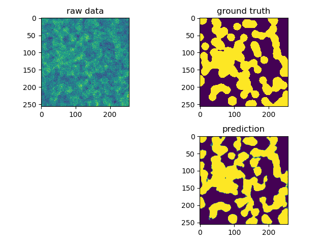
- 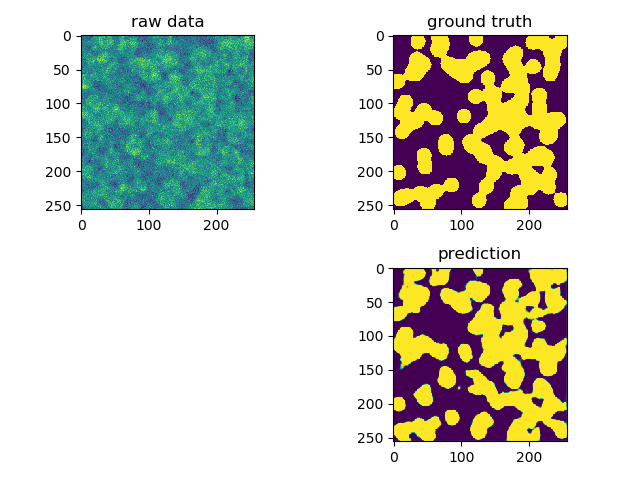
- 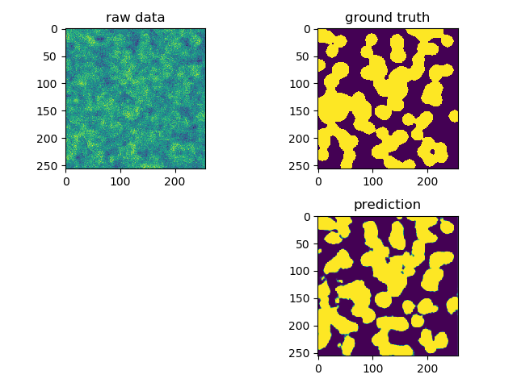
- 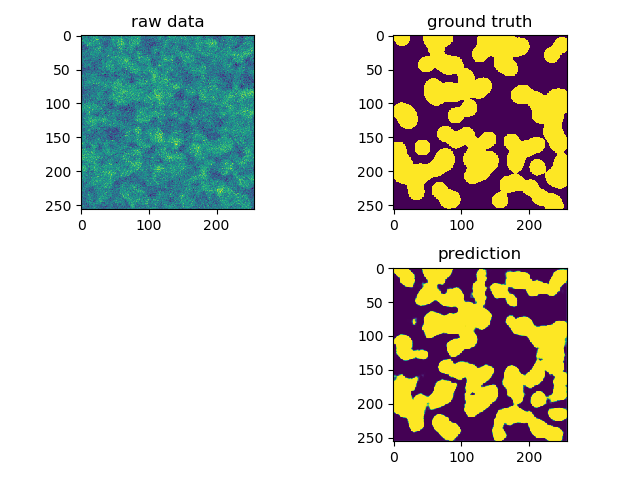
- 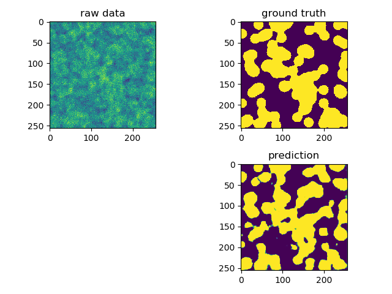
- 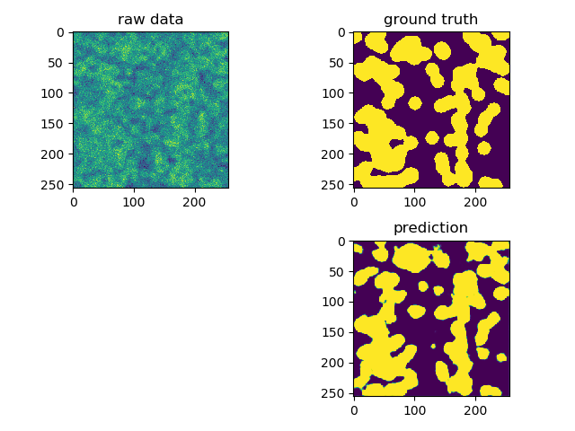
- 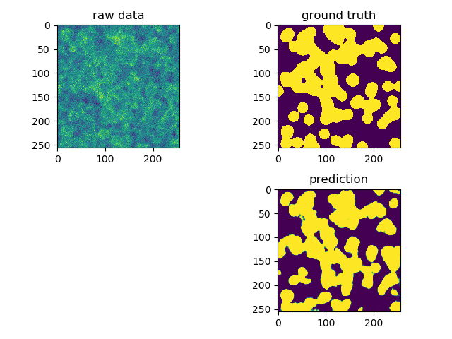

Total running time of the script: ( 1 minutes 0.683 seconds)